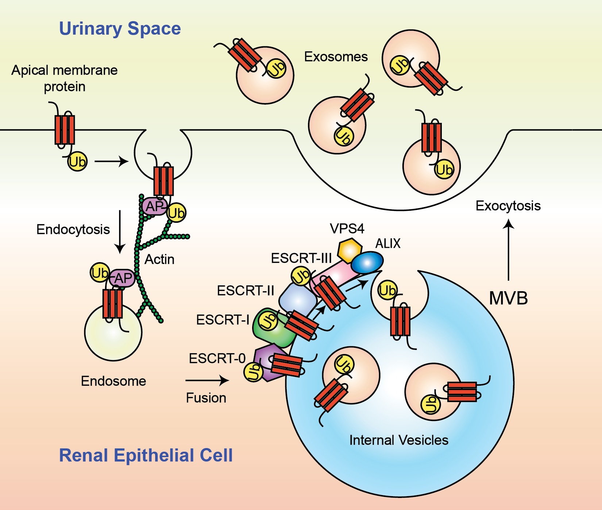

|
This database of urinary exosome proteins is based on published protein mass spectrometry data from the NHLBI Epithelial Systems Biology Laboratory (ESBL). All data are from urinary exosomes isolated from healthy human volunteers. The figure on the right illustrates the mechanism of exosome formation and excretion. In the first step of the process, apical membrane proteins undergo endocytosis. In the second step, the endosome is targeted to the multivesicular body (MVB). The signal that marks plasma membrane proteins for incorporation into MVB is mono-ubiquitination. In the third step, the endosome fuses with the MVB. Consequently, the apical plasma membrane proteins are segregated in the MVB outer membranes and internalized by membrane invagination. Finally, the outer membrane of the MVB fuses with the apical plasma membrane releasing its internal vesicles, called 'exosomes', in the urinary space. Exosomes contain both membrane and cytosolic proteins. This current database contains protein identification of human urinary exosomes using two different mass spectrometer analyzers. The LCQ mass analyzer was used in the reference # 1 and the LTQ mass analyzer was used in the reference # 2. |
 |
References:
Pisitkun T, Shen RF, Knepper MA. Identification and proteomic profiling of exosomes in human urine. Proc Natl Acad Sci U S A. 2004 Sep 7;101(36):13368-73.
Gonzales PA, Pisitkun T, Hoffert JD, Tchapyjnikov D, Star RA, Kleta R, Wang NS, Knepper MA. Large-scale proteomics and phosphoproteomics of urinary exosomes. J Am Soc Nephrol. 2009 Feb;20(2):363-79.
Database Size: 1160 proteins. The Urinary Exosome Protein Database was created by Patricia A. Gonzales, Guozhong Ma, Trairak Pisitkun, Brian Ruttenberg and Mark A. Knepper.
| Protein Name | Gene Name | Peptide # | RefSeq | GO Component | GO Process | GO Function | Reference |
|---|---|---|---|---|---|---|---|
| alpha 1B-glycoprotein | A1BG | 1 | NP_570602 | extracellular region | not classified | not classified | 2 |
| alpha-2-macroglobulin-like 1 | A2ML1 | 1 | NP_653271 | not classified | not classified | endopeptidase inhibitor activity | 2 |
| aminoadipate-semialdehyde dehydrogenase-phosphopantetheinyl transferase | AASDHPPT | 1 | NP_056238 | not classified | fatty acid biosynthesis | magnesium ion binding phosphopantetheinyltransferase activity transferase activity | 2 |
| ATP-binding cassette sub-family B member 1 | ABCB1 | 23 | NP_000918 | cell surface integral to membrane membrane membrane fraction | response to drug transport | ATP binding ATPase activity hydrolase activity nucleotide binding transporter activity xenobiotic-transporting ATPase activity | 1,2 |
| ATP-binding cassette, sub-family B (MDR/TAP), member 11 | ABCB11 | 1 | NP_003733 | integral to plasma membrane membrane membrane fraction | transport | ATP binding ATPase activity bile acid-exporting ATPase activity nucleotide binding sodium-exporting ATPase activity, phosphorylative mechanism transporter activity | 2 |
| ATP-binding cassette, sub-family B, member 6 | ABCB6 | 1 | NP_005680 | ATP-binding cassette (ABC) transporter complex integral to membrane membrane mitochondrial envelope mitochondrion | iron ion homeostasis transport | ATP binding ATPase activity ATPase activity, coupled to transmembrane movement of substances nucleotide binding | 2 |
| ATP-binding cassette, sub-family C, member 11 isoform a | ABCC11 | 1 | NP_149163 | integral to membrane membrane | transport | ATP binding ATPase activity ATPase activity, coupled to transmembrane movement of substances nucleotide binding | 2 |
| ATP-binding cassette, sub-family C, member 9 isoform SUR2A-delta-14 | ABCC9 | 1 | NP_064694 | integral to membrane membrane | potassium ion transport transport | ATP binding ATPase activity ATPase activity, coupled to transmembrane movement of substances nucleotide binding receptor activity sulfonylurea receptor activity transporter activity | 2 |
| abhydrolase domain containing 14B | ABHD14B | 6 | NP_116139 | nucleus | not classified | not classified | 1,2 |
| abl-interactor 1 isoform d | ABI1 | 2 | NP_001012770 | cytoskeleton cytosol endoplasmic reticulum nucleus soluble fraction | negative regulation of cell proliferation transmembrane receptor protein tyrosine kinase signaling pathway | cytoskeletal protein binding | 2 |
| acetyl-Coenzyme A acetyltransferase 1 precursor | ACAT1 | 1 | NP_000010 | mitochondrion | not classified | acetyl-CoA C-acetyltransferase activity acyltransferase activity transferase activity | 2 |
| angiotensin I converting enzyme isoform 1 precursor | ACE | 23 | NP_000780 | integral to membrane membrane membrane fraction plasma membrane soluble fraction | blood pressure regulation metabolism proteolysis | carboxypeptidase activity chloride ion binding hydrolase activity, acting on glycosyl bonds metal ion binding peptidyl-dipeptidase A activity zinc ion binding | 1,2 |
| angiotensin I converting enzyme isoform 2 precursor | ACE | 12 | NP_690043 | integral to membrane membrane membrane fraction plasma membrane soluble fraction | blood pressure regulation metabolism proteolysis | carboxypeptidase activity chloride ion binding hydrolase activity, acting on glycosyl bonds metal ion binding peptidyl-dipeptidase A activity zinc ion binding | 2 |
| angiotensin I converting enzyme 2 precursor | ACE2 | 8 | NP_068576 | extracellular region integral to membrane membrane | entry of virus into host cell proteolysis | carboxypeptidase activity chloride ion binding metal ion binding peptidyl-dipeptidase A activity protein binding viral receptor activity zinc ion binding | 2 |
| ATP citrate lyase isoform 2 | ACLY | 1 | NP_942127 | citrate lyase complex | ATP catabolism citrate metabolism coenzyme A metabolism lipid biosynthesis metabolism | ATP binding ATP citrate synthase activity catalytic activity magnesium ion binding nucleotide binding transferase activity | 2 |
| ATP citrate lyase isoform 1 | ACLY | 1 | NP_001087 | citrate lyase complex | ATP catabolism citrate metabolism coenzyme A metabolism lipid biosynthesis metabolism | ATP binding ATP citrate synthase activity catalytic activity magnesium ion binding nucleotide binding transferase activity | 1 |
| aconitase 1 | ACO1 | 6 | NP_002188 | cytoplasm | metabolism tricarboxylic acid cycle | 4 iron, 4 sulfur cluster binding aconitate hydratase activity iron ion binding lyase activity metal ion binding RNA binding | 2 |
| thioesterase, adipose associated isoform BFIT2 | ACOT11 | 1 | NP_671517 | cytoplasm | fatty acid metabolism intracellular signaling cascade response to temperature stimulus | acyl-CoA thioesterase activity hydrolase activity serine esterase activity | 2 |
| acyl-CoA thioesterase 7 isoform hBACHd | ACOT7 | 1 | NP_863656 | cytoplasm mitochondrion | lipid metabolism | acyl-CoA binding hydrolase activity palmitoyl-CoA hydrolase activity serine esterase activity | 2 |
| acid phosphatase 1 isoform b | ACP1 | 1 | NP_009030 | cytoplasm soluble fraction | protein amino acid dephosphorylation | acid phosphatase activity hydrolase activity non-membrane spanning protein tyrosine phosphatase activity protein tyrosine phosphatase activity | 2 |
| lysosomal acid phosphatase 2 precursor | ACP2 | 7 | NP_001601 | integral to membrane lysosomal membrane lysosome | not classified | acid phosphatase activity hydrolase activity | 1,2 |
| prostatic acid phosphatase precursor | ACPP | 8 | NP_001090 | extracellular region | regulation of progression through cell cycle | acid phosphatase activity hydrolase activity protein tyrosine phosphatase activity | 1,2 |
| acyl-CoA synthetase long-chain family member 4 isoform 2 | ACSL4 | 1 | NP_075266 | integral to membrane membrane peroxisome | fatty acid metabolism learning and/or memory lipid metabolism metabolism | ligase activity long-chain-fatty-acid-CoA ligase activity magnesium ion binding | 2 |
| acyl-CoA synthetase medium-chain family member 1 | ACSM1 | 1 | NP_443188 | mitochondrial matrix | benzoate metabolism butyrate metabolism energy derivation by oxidation of organic compounds fatty acid oxidation metabolism | acyl-CoA ligase activity butyrate-CoA ligase activity catalytic activity | 2 |
| actinin, alpha 1 | ACTN1 | 1 | NP_001093 | cytoskeleton focal adhesion pseudopodium | focal adhesion formation negative regulation of cell motility regulation of apoptosis | actin binding calcium ion binding integrin binding protein binding vinculin binding | 2 |
| ARP1 actin-related protein 1 homolog A, centractin alpha | ACTR1A | 1 | NP_005727 | actin filament cytoplasm cytoskeleton | not classified | ATP binding nucleotide binding protein binding structural constituent of cytoskeleton | 2 |
| actin-related protein 2 isoform a | ACTR2 | 1 | NP_001005386 | cytoskeleton | not classified | protein binding structural molecule activity | 2 |
| ARP3 actin-related protein 3 homolog | ACTR3 | 6 | NP_005712 | Arp2/3 protein complex | cell motility | ATP binding nucleotide binding protein binding structural molecule activity | 2 |
| aminoacylase 1 | ACY1 | 15 | NP_000657 | cytoplasm cytosol | amino acid metabolism proteolysis | aminoacylase activity hydrolase activity metallopeptidase activity protein dimerization activity zinc ion binding | 1,2 |
| aspartoacylase (aminocyclase) 3 | ACY3 | 1 | NP_542389 | not classified | metabolism | aspartoacylase activity hydrolase activity, acting on ester bonds | 2 |
| brain adenylate cyclase 1 | ADCY1 | 1 | NP_066939 | integral to membrane membrane | cAMP biosynthesis intracellular signaling cascade | calcium- and calmodulin-responsive adenylate cyclase activity calmodulin binding magnesium ion binding | 2 |
| class III alcohol dehydrogenase 5 chi subunit | ADH5 | 1 | NP_000662 | not classified | ethanol oxidation | alcohol dehydrogenase activity electron carrier activity fatty acid binding formaldehyde dehydrogenase (glutathione) activity metal ion binding S-(hydroxymethyl)glutathione dehydrogenase activity zinc ion binding | 2 |
| class V alcohol dehydrogenase 6 | ADH6 | 1 | NP_000663 | not classified | ethanol oxidation | alcohol dehydrogenase activity electron carrier activity metal ion binding oxidoreductase activity zinc ion binding | 2 |
| transcription factor ELYS | AHCTF1 | 1 | NP_056261 | nucleus | development transcription | DNA binding | 2 |
| S-adenosylhomocysteine hydrolase | AHCY | 10 | NP_000678 | cytoplasm | one-carbon compound metabolism | adenosylhomocysteinase activity hydrolase activity | 2 |
| AHNAK nucleoprotein isoform 1 | AHNAK | 1 | NP_001611 | nucleus | nervous system development | protein binding | 2 |
| AHA1, activator of heat shock 90kDa protein ATPase homolog 1 | AHSA1 | 1 | NP_036243 | cytoplasm endoplasmic reticulum | protein folding response to stress | ATPase stimulator activity chaperone activator activity chaperone binding | 2 |
| alpha-2-HS-glycoprotein (Fetuin-A) | AHSG | 1 | NP_001613 | extracellular region extracellular space | acute-phase response negative regulation of bone mineralization negative regulation of insulin receptor signaling pathway pinocytosis positive regulation of phagocytosis regulation of inflammatory response skeletal development | cysteine protease inhibitor activity kinase inhibitor activity | 2 |
| adenylate kinase 1 | AK1 | 4 | NP_000467 | cytoplasm cytosol | ATP metabolism nucleobase, nucleoside, nucleotide and nucleic acid metabolism | adenylate kinase activity ATP binding kinase activity nucleotide binding transferase activity | 2 |
| aldo-keto reductase family 1, member A1 | AKR1A1 | 7 | NP_006057 | not classified | aldehyde metabolism glucose metabolism | alcohol dehydrogenase (NADP+) activity aldehyde reductase activity electron carrier activity oxidoreductase activity protein binding | 2 |
| aldo-keto reductase family 1, member B1 | AKR1B1 | 3 | NP_001619 | extracellular space | carbohydrate metabolism | aldehyde reductase activity electron carrier activity oxidoreductase activity | 1,2 |
| aldo-keto reductase family 7, member A2 | AKR7A2 | 2 | NP_003680 | not classified | aldehyde metabolism carbohydrate metabolism | aldehyde reductase activity electron carrier activity | 2 |
| aldo-keto reductase family 7, member A3 | AKR7A3 | 2 | NP_036199 | cytosol | aldehyde metabolism | aldo-keto reductase activity electron carrier activity | 2 |
| delta-aminolevulinic acid dehydratase isoform a | ALAD | 1 | NP_001003945 | not classified | heme biosynthesis | lyase activity metal ion binding porphobilinogen synthase activity zinc ion binding | 2 |
| albumin precursor | ALB | 36 | NP_000468 | extracellular region extracellular space protein complex | body fluid osmoregulation cellular response to starvation hemolysis of host red blood cells maintenance of mitochondrion localization negative regulation of apoptosis negative regulation of non-apoptotic programmed cell death transport water homeostasis | antioxidant activity carrier activity copper ion binding DNA binding drug binding fatty acid binding metal ion binding oxygen binding protein binding pyridoxal phosphate binding toxin binding water binding | 1,2 |
| activated leukocyte cell adhesion molecule | ALCAM | 1 | NP_001618 | integral to plasma membrane membrane membrane fraction | antimicrobial humoral response (sensu Vertebrata) cell adhesion signal transduction | receptor binding | 2 |
| aldehyde dehydrogenase 1A1 | ALDH1A1 | 10 | NP_000680 | cytoplasm | aldehyde metabolism metabolism | aldehyde dehydrogenase (NAD) activity androgen binding oxidoreductase activity Ras GTPase activator activity retinal dehydrogenase activity | 2 |
| aldehyde dehydrogenase 1 family, member L1 | ALDH1L1 | 9 | NP_036322 | cytoplasm | 10-formyltetrahydrofolate catabolism biosynthesis one-carbon compound metabolism protein biosynthesis | cofactor binding formyltetrahydrofolate dehydrogenase activity hydroxymethyl-, formyl- and related transferase activity methyltransferase activity oxidoreductase activity | 2 |
| mitochondrial aldehyde dehydrogenase 2 precursor | ALDH2 | 1 | NP_000681 | mitochondrion | alcohol metabolism carbohydrate metabolism metabolism | aldehyde dehydrogenase (NAD) activity aldehyde dehydrogenase [NAD(P)+] activity electron carrier activity | 2 |
| aldehyde dehydrogenase 3B1 isoform a | ALDH3B1 | 1 | NP_000685 | not classified | alcohol metabolism aldehyde metabolism lipid metabolism metabolism | 3-chloroallyl aldehyde dehydrogenase activity aldehyde dehydrogenase [NAD(P)+] activity oxidoreductase activity | 2 |
| aldehyde dehydrogenase 3B1 isoform b | ALDH3B1 | 1 | NP_001025181 | not classified | alcohol metabolism aldehyde metabolism lipid metabolism metabolism | 3-chloroallyl aldehyde dehydrogenase activity aldehyde dehydrogenase [NAD(P)+] activity oxidoreductase activity | 2 |
| aldehyde dehydrogenase 8A1 isoform 1 | ALDH8A1 | 1 | NP_072090 | intracellular | cell surface extracellular matrix (sensu Metazoa) membrane | oxidoreductase activity retinal dehydrogenase activity | 2 |
| aldehyde dehydrogenase 9A1 | ALDH9A1 | 5 | NP_000687 | cytoplasm | aldehyde metabolism electron transport hormone metabolism metabolism neurotransmitter biosynthesis | 4-trimethylammoniobutyraldehyde dehydrogenase activity aldehyde dehydrogenase (NAD) activity aminobutyraldehyde dehydrogenase activity oxidoreductase activity | 2 |
| aldolase A | ALDOA | 7 | NP_908930 | not classified | fructose metabolism glycolysis metabolism striated muscle contraction | fructose-bisphosphate aldolase activity lyase activity | 2 |
| fructose-bisphosphate aldolase C | ALDOC | 1 | NP_005156 | not classified | fructose metabolism glycolsis metabolism | fructose-bisphosphate aldolase activity lyase activity | 2 |
| anaplastic lymphoma kinase Ki-1 | ALK | 1 | NP_004295 | integral to plasma membrane membrane | brain development nervous system development protein amino acid N-linked glycosylation protein amino acid phosphorylation transmembrane receptor protein tyrosine kinase signaling pathway | ATP binding nucleotide binding receptor activity receptor signaling protein tyrosine kinase activity transferase activity transmembrane receptor protein tyrosine kinase activity | 2 |
| arachidonate 12-lipoxygenase | ALOX12 | 1 | NP_000688 | cytosol sarcolemma | anti-apoptosis arachidonic acid metabolism cell motility electron transport fatty acid oxidation leukotriene biosynthesis negative regulation of cell volume oxygen and reactive oxygen species metabolism positive regulation of cell adhesion positive regulation of cell growth positive regulation of cell proliferation regulation of membrane potential superoxide release | arachidonate 12-lipoxygenase activity hepoxilin-epoxide hydrolase activity iron ion binding lipoxygenase activity metal ion binding oxidoreductase activity potassium channel inhibitor activity | 2 |
| tissue non-specific alkaline phosphatase precursor | ALPL | 3 | NP_000469 | integral to membrane membrane | metabolism ossification | alkaline phosphatase activity GPI anchor binding hydrolase activity magnesium ion binding zinc ion binding | 2 |
| alpha-1-microglobulin/bikunin precursor | AMBP | 4 | NP_001624 | extracellular region plasma membrane | anti-inflammatory response cell adhesion heme catabolism negative regulation of immune response negative regulation of JNK cascade pregnancy protein-chromophore linkage transport | calcium channel inhibitor activity calcium oxalate binding heme binding IgA binding plasmin inhibitor activity protein homodimerization activity transporter activity trypsin inhibitor activity | 1,2 |
| amnionless protein precursor | AMN | 1 | NP_112205 | integral to membrane membrane | development | not classified | 2 |
| angiopoietin-like 2 precursor | ANGPTL2 | 1 | NP_036230 | extracellular space | development | receptor binding | 2 |
| ankyrin repeat and FYVE domain containing 1 isoform 1 | ANKFY1 | 2 | NP_057460 | endosome membrane membrane | endocytosis | metal ion binding protein binding zinc ion binding | 2 |
| ankyrin repeat and FYVE domain containing 1 isoform 2 | ANKFY1 | 2 | NP_065791 | endosome membrane membrane | endocytosis | metal ion binding protein binding zinc ion binding | 2 |
| membrane alanine aminopeptidase precursor | ANPEP | 69 | NP_001141 | ER-Golgi intermediate compartment integral to plasma membrane | angiogenesis cell differentiation proteolysis | aminopeptidase activity membrane alanyl aminopeptidase activity metal ion binding metallopeptidase activity receptor activity zinc ion binding | 1,2 |
| annexin I | ANXA1 | 19 | NP_000691 | cornified envelope cytoplasm | anti-apoptosis cell motility cell surface receptor linked signal transduction inflammatory response keratinocyte differentiation lipid metabolism peptide cross-linking | calcium ion binding calcium-dependent phospholipid binding phospholipase A2 inhibitor activity phospholipase inhibitor activity protein binding, bridging receptor binding structural molecule activity | 2 |
| annexin A11 | ANXA11 | 31 | NP_665875 | cytoplasm nuclear envelope nucleoplasm nucleus | immune response | calcium ion binding calcium-dependent phospholipid binding protein binding | 2 |
| annexin A13 isoform b | ANXA13 | 1 | NP_001003954 | plasma membrane | cell differentiation | calcium ion binding calcium-dependent phospholipid binding | 2 |
| annexin A2 isoform 2 | ANXA2 | 29 | NP_001002857 | plasma membrane soluble fraction | skeletal development | calcium ion binding calcium-dependent phospholipid binding cytoskeletal protein binding phospholipase inhibitor activity | 2 |
| annexin A2 isoform 1 | ANXA2 | 20 | NP_001002858 | plasma membrane soluble fraction | skeletal development | calcium ion binding calcium-dependent phospholipid binding cytoskeletal protein binding phospholipase inhibitor activity | 2 |
| annexin A3 | ANXA3 | 8 | NP_005130 | cytoplasm | signal transduction | calcium ion binding calcium-dependent phospholipid binding diphosphoinositol-polyphosphate diphosphatase activity phospholipase A2 inhibitor activity | 1,2 |
| annexin IV | ANXA4 | 24 | NP_001144 | cytoplasm | anti-apoptosis negative regulation of coagulation signal transduction | calcium ion binding calcium-dependent phospholipid binding phospholipase inhibitor activity | 1,2 |
| annexin 5 | ANXA5 | 24 | NP_001145 | cytoplasm intracellular | anti-apoptosis blood coagulation negative regulation of coagulation signal transduction | calcium ion binding calcium-dependent phospholipid binding phospholipase inhibitor activity protein binding | 1,2 |
| annexin VI isoform 1 | ANXA6 | 27 | NP_001146 | not classified | not classified | calcium ion binding calcium-dependent phospholipid binding protein binding | 1,2 |
| annexin VI isoform 2 | ANXA6 | 20 | NP_004024 | not classified | not classified | calcium ion binding calcium-dependent phospholipid binding protein binding | 2 |
| annexin VII isoform 2 | ANXA7 | 13 | NP_004025 | not classified | not classified | calcium ion binding calcium-dependent phospholipid binding voltage-gated calcium channel activity | 2 |
| annexin VII isoform 1 | ANXA7 | 2 | NP_001147 | not classified | not classified | calcium ion binding calcium-dependent phospholipid binding voltage-gated calcium channel activity | 1 |
| aldehyde oxidase 1 | AOX1 | 1 | NP_001150 | not classified | electron transport inflammatory response oxygen and reactive oxygen species metabolism | 2 iron, 2 sulfur cluster binding aldehyde oxidase activity electron carrier activity iron ion binding metal ion binding molybdenum ion binding oxidoreductase activity xanthine dehydrogenase activity | 2 |
| adaptor-related protein complex 1, mu 1 subunit | AP1M1 | 1 | NP_115882 | clathrin vesicle coat coated pit | intracellular protein transport | protein binding | 2 |
| adaptor-related protein complex 2, mu 1 subunit isoform a | AP2M1 | 1 | NP_004059 | clathrin vesicle coat coated pit | intracellular protein transport transport | lipid binding protein binding transporter activity | 2 |
| adaptor-related protein complex 4, mu 1 subunit | AP4M1 | 1 | NP_004713 | clathrin vesicle coat coated pit coated vesicle membrane Golgi trans cisterna membrane coat adaptor complex | intracellular protein transport transport vesicle-mediated transport | transporter activity | 2 |
| apoptotic peptidase activating factor 1 isoform b | APAF1 | 1 | NP_001151 | cytosol intracellular | caspase activation via cytochrome c nervous system development regulation of apoptosis | ATP binding caspase activator activity nucleotide binding protein binding | 2 |
| serum amyloid P component precursor | APCS | 5 | NP_001630 | extracellular region extracellular space | acute-phase response chaperone-mediated protein complex assembly protein folding | calcium ion binding sugar binding unfolded protein binding | 1,2 |
| apolipoprotein A-I preproprotein | APOA1 | 6 | NP_000030 | extracellular region extracellular space | cholesterol metabolism cholesterol transport circulation lipid metabolism lipid transport lipoprotein metabolism steroid metabolism | high-density lipoprotein binding lipid binding lipid transporter activity protein binding | 2 |
| apolipoprotein A-II preproprotein | APOA2 | 1 | NP_001634 | extracellular region | glucose metabolism lipid transport negative regulation of lipid catabolism negative regulation of lipoprotein metabolism neutrophil activation positive regulation of interleukin-8 biosynthesis regulation of cytokine production response to glucose stimulus | lipid binding lipid transporter activity protein heterodimerization activity protein homodimerization activity | 2 |
| apolipoprotein A-IV precursor | APOA4 | 2 | NP_000473 | chylomicron extracellular region | circulation lipid metabolism lipid transport lipoprotein metabolism | lipid binding lipid transporter activity | 2 |
| apolipoprotein D precursor | APOD | 7 | NP_001638 | extracellular region extracellular space | lipid metabolism transport | high-density lipoprotein binding lipid binding lipid transporter activity protein binding | 1,2 |
| apolipoprotein E precursor | APOE | 6 | NP_000032 | chylomicron cytoplasm extracellular region | cholesterol homeostasis circulation cytoskeleton organization and biogenesis induction of apoptosis intracellular transport learning and/or memory lipid transport lipoprotein metabolism protein tetramerization regulation of axon extension regulation of ne | antioxidant activity apolipoprotein E receptor binding beta-amyloid binding heparin binding lipid transporter activity phospholipid binding tau protein binding | 2 |
| adaptor protein containing pH domain, PTB domain and leucine zipper motif | APPL | 1 | NP_036228 | cytoplasm endosome membrane membrane nucleus NuRD complex | cell cycle cell proliferation signal transduction | protein binding | 2 |
| adenine phosphoribosyltransferase isoform a | APRT | 3 | NP_000476 | cytoplasm | adenine salvage nucleoside metabolism purine ribonucleoside salvage | adenine phosphoribosyltransferase activity AMP binding transferase activity, transferring glycosyl groups | 1,2 |
| adenine phosphoribosyltransferase isoform b | APRT | 3 | NP_001025189 | cytoplasm | adenine salvage nucleoside metabolism purine ribonucleoside salvage | adenine phosphoribosyltransferase activity AMP binding transferase activity, transferring glycosyl groups | 2 |
| aquaporin 1 | AQP1 | 3 | NP_932766 | integral to membrane integral to plasma membrane membrane outer membrane | excretion transport water transport | porin activity transporter activity water transporter activity | 1,2 |
| aquaporin 2 | AQP2 | 7 | NP_000477 | apical plasma membrane integral to membrane plasma membrane | excretion transport water transport | transporter activity water channel activity | 1,2 |
| ADP-ribosylation factor 1 | ARF1 | 6 | NP_001649 | intracellular plasma membrane | ER to Golgi vesicle-mediated transport transport rRNA processing small GTPase mediated signal transduction | GTP binding GTPase activity nucleotide binding protein binding receptor signaling protein activity | 1 |
| ADP-ribosylation factor interacting protein 1 isoform 2 | ARFIP1 | 1 | NP_055262 | cytosol Golgi membrane | intracellular protein transport regulation of protein secretion | not classified | 1 |
| Rho GTPase activating protein 1 | ARHGAP1 | 1 | NP_004299 | intracellular | cytoskeleton organization and biogenesis Rho protein signal transduction signal transduction | GTP binding protein binding Rho GTPase activator activity SH3/SH2 adaptor activity | 2 |
| Rho GDP dissociation inhibitor (GDI) alpha | ARHGDIA | 1 | NP_004300 | cytoplasm cytoskeleton | anti-apoptosis cell motility negative regulation of cell adhesion Rho protein signal transduction | GTPase activator activity protein binding Rho GDP-dissociation inhibitor activity | 2 |
| Rho GDP dissociation inhibitor (GDI) beta | ARHGDIB | 1 | NP_001166 | cytoplasm cytoplasmic membrane-bound vesicle cytoskeleton | actin cytoskeleton organization and biogenesis cell motility development immune response negative regulation of cell adhesion Rho protein signal transduction | GTPase activator activity Rho GDP-dissociation inhibitor activity | 2 |
| Rho guanine nucleotide exchange factor (GEF) 12 | ARHGEF12 | 1 | NP_056128 | intracellular | regulation of Rho protein signal transduction | GTPase activator activity protein binding Rho guanyl-nucleotide exchange factor activity | 2 |
| ADP-ribosylation factor related protein 2 | ARL15 | 1 | NP_061960 | not classified | not classified | GTP binding | 2 |
| ADP-ribosylation factor-like 3 | ARL3 | 2 | NP_004302 | intracellular | G-protein coupled receptor protein signaling pathway rRNA processing small GTPase mediated signal transduction | GTP binding nucleotide binding signal transducer activity | 1,2 |
| ADP-ribosylation factor-like 6 | ARL6 | 3 | NP_115522 | cytoplasm intracellular membrane | rRNA processing small GTPase mediated signal transduction | GTP binding nucleotide binding protein binding | 2 |
| ADP-ribosylation factor-like 10B | ARL8A | 1 | NP_620150 | cytoplasm intracellular membrane midbody spindle midzone | chromosome segregation rRNA processing small GTPase mediated signal transduction | alpha-tubulin binding beta-tubulin binding GTP binding GTPase activity nucleotide binding | 2 |
| ADP-ribosylation factor-like 10C | ARL8B | 1 | NP_060654 | cytoplasm intracellular membrane midbody spindle midzone | chromosome segregation rRNA processing small GTPase mediated signal transduction | alpha-tubulin binding beta-tubulin binding GDP binding GTP binding GTPase activity nucleotide binding | 2 |
| armadillo repeat containing 3 | ARMC3 | 1 | NP_775104 | not classified | not classified | binding | 2 |
| armadillo repeat containing 9 | ARMC9 | 1 | NP_079415 | not classified | not classified | binding | 2 |
| actin related protein 2/3 complex subunit 1A | ARPC1A | 1 | NP_006400 | not classified | not classified | not classified | 2 |
| actin related protein 2/3 complex subunit 2 | ARPC2 | 5 | NP_005722 | Arp2/3 protein complex cytoskeleton | cell motility regulation of actin filament polymerization | structural constituent of cytoskeleton | 2 |
| actin related protein 2/3 complex subunit 3 | ARPC3 | 2 | NP_005710 | Arp2/3 protein complex | cell motility regulation of actin filament polymerization | structural constituent of cytoskeleton | 2 |
| actin related protein 2/3 complex subunit 4 isoform a | ARPC4 | 2 | NP_005709 | Arp2/3 protein complex cytoskeleton | actin filament polymerization actin nucleation | actin filament binding protein binding, bridging structural constituent of cytoskeleton | 1,2 |
| actin related protein 2/3 complex subunit 4 isoform b | ARPC4 | 2 | NP_001020130 | Arp2/3 protein complex cytoskeleton | actin filament polymerization actin nucleation | actin filament binding protein binding, bridging structural constituent of cytoskeleton | 2 |
| actin related protein 2/3 complex subunit 5 | ARPC5 | 1 | NP_005708 | Arp2/3 protein complex cytoplasm cytoskeleton | actin cytoskeleton organization and biogenesis cell motility regulation of actin filament polymerization | structural constituent of cytoskeleton | 2 |
| actin related protein 2/3 complex, subunit 5-like | ARPC5L | 1 | NP_112240 | cytoskeleton | regulation of actin filament polymerization | not classified | 2 |
| arrestin domain containing 1 | ARRDC1 | 5 | NP_689498 | not classified | not classified | not classified | 1,2 |
| arylsulfatase E precursor | ARSE | 1 | NP_000038 | not classified | metabolism skeletal development | arylsulfatase activity calcium ion binding hydrolase activity | 2 |
| arylsulfatase F precursor | ARSF | 12 | NP_004033 | not classified | metabolism | arylsulfatase activity calcium ion binding hydrolase activity | 2 |
| N-acylsphingosine amidohydrolase (acid ceramidase) 1 preproprotein isoform a | ASAH1 | 7 | NP_808592 | lysosome | carboxylic acid metabolism ceramide metabolism fatty acid metabolism | ceramidase activity hydrolase activity transferase activity, transferring acyl groups, acyl groups converted into alkyl on transfer | 1,2 |
| N-acylsphingosine amidohydrolase (acid ceramidase) 1 isoform b | ASAH1 | 9 | NP_004306 | lysosome | carboxylic acid metabolism ceramide metabolism fatty acid metabolism | ceramidase activity hydrolase activity transferase activity, transferring acyl groups, acyl groups converted into alkyl on transfer | 2 |
| argininosuccinate lyase isoform 3 | ASL | 1 | NP_001020117 | cytoplasm | amino acid biosynthesis arginine biosynthesis arginine catabolism urea cycle | argininosuccinate lyase activity catalytic activity lyase activity | 2 |
| arsA arsenite transporter, ATP-binding, homolog 1 | ASNA1 | 1 | NP_004308 | cytoplasm membrane nucleolus soluble fraction | anion transport response to arsenic transport | arsenite transporter activity arsenite-transporting ATPase activity ATP binding hydrolase activity nucleotide binding transporter activity | 2 |
| argininosuccinate synthetase 1 | ASS1 | 20 | NP_000041 | cytoplasm | amino acid biosynthesis arginine biosynthesis urea cycle | argininosuccinate synthase activity ATP binding ligase activity nucleotide binding protein binding | 1,2 |
| two AAA domain containing protein | ATAD2 | 1 | NP_054828 | not classified | not classified | ATP binding nucleoside-triphosphatase activity nucleotide binding | 2 |
| 5-aminoimidazole-4-carboxamide ribonucleotide formyltransferase/IMP cyclohydrolase | ATIC | 1 | NP_004035 | not classified | nucleobase, nucleoside, nucleotide and nucleic acid metabolism | hydrolase activity IMP cyclohydrolase activity phosphoribosylaminoimidazolecarboxamide formyltransferase activity transferase activity | 2 |
| Na+/K+ -ATPase beta 1 subunit isoform b | ATP1B1 | 1 | NP_001001787 | integral to membrane membrane sodium:potassium-exchanging ATPase complex | ion transport potassium ion transport sodium ion transport | potassium ion binding sodium ion binding sodium:potassium-exchanging ATPase activity | 2 |
| ATP synthase, H+ transporting, mitochondrial F1 complex, alpha subunit precursor | ATP5A1 | 3 | NP_001001937 | membrane fraction mitochondrion proton-transporting ATP synthase complex (sensu Eukaryota) proton-transporting ATP synthase complex, catalytic core F(1) proton-transporting two-sector ATPase complex | ATP synthesis coupled proton transport ion transport proton transport | ATP binding hydrogen-transporting ATP synthase activity, rotational mechanism hydrogen-transporting ATPase activity, rotational mechanism hydrolase activity hydrolase activity, acting on acid anhydrides, catalyzing transmembrane movement ofsubstances meta | 2 |
| ATP synthase, H+ transporting, mitochondrial F1 complex, beta subunit precursor | ATP5B | 4 | NP_001677 | mitochondrion proton-transporting ATP synthase complex (sensu Eukaryota) proton-transporting ATP synthase complex, catalytic core F(1) proton-transporting ATP synthase, catalytic core (sensu Eukaryota) | ATP synthesis coupled proton transport generation of precursor metabolites and energy ion transport proton transport | ATP binding hydrogen-exporting ATPase activity, phosphorylative mechanism hydrogen-transporting ATP synthase activity, rotational mechanism hydrogen-transporting ATPase activity, rotational mechanism hydrolase activity metal ion binding nucleoside-triphos | 2 |
| ATPase, H+ transporting, lysosomal accessory protein 1 precursor | ATP6AP1 | 1 | NP_001174 | membrane proton-transportin two-sector ATPase complex vacuole | ATP synthesis coupled proton transport ion transport proton transport | ATP binding hydrogen-transporting ATP synthase activity, rotational mechanism hydrogen-transporting ATPase activity, rotational mechanism hydrolase activity metal ion binding nucleotide binding transporter activity | 2 |
| ATPase, H+ transporting, lysosomal accessory protein 2 | ATP6AP2 | 1 | NP_005756 | integral to membrane membrane | not classified | receptor activity | 2 |
| ATPase, H+ transporting, lysosomal V0 subunit a isoform 1 | ATP6V0A1 | 1 | NP_005168 | integral to membrane membrane | ion transport proton transport | hydrogen ion transporter activity | 2 |
| ATPase, H+ transporting, lysosomal V0 subunit a4 | ATP6V0A4 | 1 | NP_065683 | hydrogen-translocating V-type ATPase complex integral to membrane membrane | ion transport proton transport regulation of pH | hydrogen ion transporter activity | 2 |
| ATPase, H+ transporting, lysosomal, V0 subunit c | ATP6V0C | 1 | NP_001685 | membrane proton-transporting two-sector ATPase complex vacuole | ATP synthesis coupled proton transport ion transport proton transport | hydrogen-transporting ATP synthase activity, rotational mechanism hydrogen-transporting ATPase activity, rotation mechanism hydrolase activity metal ion binding | 2 |
| ATPase, H+ transporting, lysosomal, V0 subunit d1 | ATP6V0D1 | 1 | NP_004682 | hydrogen-translocating V-type ATPase complex proton-transporting two-sector ATPase complex | ATP synthesis coupled proton transport ion transport proton transport | hydrogen-transporting ATP synthase activity, rotational mechanism hydrogen-transporting ATPase activity, rotational mechanism hydrolase activity metal ion binding | 2 |
| ATPase, H+ transporting, lysosomal 38kDa, V0 subunit D2 | ATP6V0D2 | 2 | NP_689778 | proton-transporting two-sector ATPase complex | ATP synthesis coupled proton transport | hydrogen-transporting ATP synthase activity, rotational mechanism hydrogen-transporting ATPase activity, rotation mechanism | 2 |
| ATPase, H+ transporting, lysosomal 70kD, V1 subunit A, isoform 1 | ATP6V1A | 22 | NP_001681 | integral to plasma membrane proton-transporting two-sector ATPase complex | ATP synthesis coupled proton transport ion transport proton transport | ATP binding hydrogen-transporting ATP synthase activity, rotational mechanism hydrogen-transporting ATPase activity, rotational mechanism hydrolase activity metal ion binding nucleotide binding | 2 |
| ATPase, H+ transporting, lysosomal 56/58kDa, V1 subunit B1 | ATP6V1B1 | 8 | NP_001683 | cytoplasm plasma membrane proton-transporting ATP synthase complex, catalytic core F(1) proton-transporting two-sector ATPase complex | ATP synthesis coupled proton transport energy coupled proton transport, against electrochemical gradient excretion ion transport regulation of pH sensory perception of sound | ATP binding hydrogen-exporting ATPase activity, phosphorylative mechanism hydrogen-transporting ATP synthase activity, rotational mechanism hydrogen-transporting ATPase activity, rotational mechanism hydrolase activity metal ion binding nucleotide binding | 2 |
| vacuolar H+ATPase B2 | ATP6V1B2 | 12 | NP_001684 | cytoplasm proton-transporting two-sector ATPase complex | ATP synthesis coupled proton transport energy coupled proton transport, against electrochemical gradient ion transport | ATP binding hydrogen-exporting ATPase activity, phosphorylative mechanism hydrogen-transporting ATP synthase activity, rotational mechanism hydrogen-transporting ATPase activity, rotational mechanism hydrolase activity metal ion binding | 2 |
| ATPase, H+ transporting, lysosomal 42kDa, V1 subunit C1 isoform A | ATP6V1C1 | 1 | NP_001686 | proton-transporting two-sector ATPase complex | ATP synthesis coupled proton transport ion transport proton transport | ATP binding hydrogen-transporting ATPase activity, rotational mechanism hydrolase activity hydrolase activity, acting on acid anhydrides, catalyzing transmembrane movement of substances metal ion binding transporter activity | 2 |
| vacuolar H+ ATPase C2 isoform a | ATP6V1C2 | 1 | NP_001034451 | proton-transporting two-sector ATPase complex | ATP synthesis coupled proton transport | ATP binding hydrolase activity, acting on acid anhydrides, catalyzing transmembrane movement of substances | 2 |
| H(+)-transporting two-sector ATPase | ATP6V1D | 2 | NP_057078 | proton-transporting two-sector ATPase complex | ATP synthesis coupled proton transport ion transport proton transport | hydrogen-transporting ATP synthase activity, rotational mechanism hydrogen-transporting ATPase activity, rotational mechanism hydrolase activity metal ion binding | 2 |
| vacuolar H+ ATPase E1 isoform a | ATP6V1E1 | 2 | NP_001687 | plasma membrane proton-transporting two-sector ATPase complex | ATP synthesis coupled proton transport ion transport proton transport | hydrogen-transporting ATP synthase activity, rotational mechanism hydrogen-transporting ATPase activity, rotational mechanism hydrolase activity metal ion binding protein binding | 2 |
| vacuolar H+ ATPase E1 isoform c | ATP6V1E1 | 1 | NP_001034456 | plasma membrane proton-transporting two-sector ATPase complex plasma membrane | ATP synthesis coupled proton transport ion transport proton transport | hydrogen-transporting ATP synthase activity, rotational mechanism hydrogen-transportin ATPase activity, rotational mechanism hydrolase activity metal ion binding protein binding | 2 |
| vacuolar H+ ATPase E1 isoform b | ATP6V1E1 | 1 | NP_001034455 | plasma membrane proton-transporting two-sector ATPase complex plasma membrane | ATP synthesis coupled proton transport ion transport proton transport | hydrogen-transporting ATP synthase activity, rotational mechanism hydrogen-transportin ATPase activity, rotational mechanism hydrolase activity metal ion binding protein binding | 2 |
| ATPase, H+ transporting, lysosomal 14kD, V1 subunit F | ATP6V1F | 1 | NP_004222 | membrane fraction proton-transporting two-sector ATPase complex | ATP synthesis coupled proton transport ion transport proton transport | hydrogen-transporting ATP synthase activity, rotational mechanism hydrogen-transporting ATPase activity, rotational mechanism hydrolase activity metal ion binding | 2 |
| vacuolar H+ ATPase G1 | ATP6V1G1 | 1 | NP_004879 | not classified | ATP biosynthesis ion transport proton transport | hydrogen ion transporter activity hydrolase activity metal ion binding | 2 |
| ATPase, H+ transporting, lysosomal 50/57kDa, V1 subunit H isoform 1 | ATP6V1H | 8 | NP_998784 | hydrogen-transporting ATPase V1 domain peripheral to membrane of membrane fraction | ATP hydrolysis coupled proton transport ATP synthesis coupled proton transport endocytosis ion transport proton transport vacuolar acidification | ATP binding ATPase activity ATPase stimulator activity enzyme regulator activity hydrogen-transporting ATP synthase activity, rotational mechanism hydrogen-transporting ATPase activity, rotational mechanism hydrolase activity metal ion binding protein bin | 2 |
| attractin isoform 1 | ATRN | 1 | NP_647537 | extracellular space integral to plasma membrane plasma membrane | development inflammatory response | receptor activity sugar binding | 2 |
| attractin isoform 2 | ATRN | 1 | NP_647538 | extracellular space integral to plasma membrane plasma membrane | development inflammatory response | receptor activity sugar binding | 2 |
| azurocidin 1 preproprotein | AZU1 | 1 | NP_001691 | azurophil granule extracellular region | anti-apoptosis cellular extravasation chemotaxis defense response to Gram-negative bacterium glial cell migration induction of positive chemotaxis macrophage chemotaxis microglial cell activation monocyte activation positive regulation of cell adhesion po | heparin binding serine-type endopeptidase activity toxin binding | 2 |
| beta-2-microglobulin precursor | B2M | 1 | NP_004039 | extracellular region | antigen processing and presentation of endogenous antigen antigen processing and presentation of endogenous peptide antigen via MHC class I immune response | MHC class I receptor activity | 2 |
| UDP-Gal:betaGlcNAc beta 1,4- galactosyltransferase 1, membrane-bound form | B4GALT1 | 1 | NP_001488 | Golgi apparatus integral to membrane membrane | carbohydrate metabolism oligosaccharide biosynthesis | beta-N-acetylglucosaminylglycopeptide beta-1,4-galactosyltransferase activity galactosyltransferase activity lactose synthase activity manganese ion binding metal ion binding N-acetyllactosamine synthase activity transferase activity, transferring glycosy | 2 |
| BAI1-associated protein 2 isoform 1 | BAIAP2 | 9 | NP_059344 | not classified | not classified | protein binding | 1,2 |
| BAI1-associated protein 2 isoform 2 | BAIAP2 | 6 | NP_059345 | not classified | not classified | protein binding | 2 |
| BAI1-associated protein 2-like 1 | BAIAP2L1 | 4 | NP_061330 | not classified | not classified | not classified | 1,2 |
| brain abundant, membrane attached signal protein 1 | BASP1 | 6 | NP_006308 | cytoskeleton plasma membrane | not classified | not classified | 2 |
| HLA-B associated transcript-2 isoform a | BAT2 | 1 | NP_542417 | nucleus | not classified | protein binding | 2 |
| bromodomain adjacent to zinc finger domain, 1B | BAZ1B | 1 | NP_075381 | nucleus | regulation of transcription, DNA-dependent transcription | metal ion binding protein binding transcription factor activity zinc ion binding | 2 |
| gamma-butyrobetaine dioxygenase | BBOX1 | 6 | NP_003977 | not classified | carnitine biosynthesis electron transport | gamma-butyrobetaine dioxygenase activity iron ion binding oxidoreductase activity oxidoreductase activity, acting on single donors with incorporation of molecular oxygen,incorporation of two atoms of oxygen | 1,2 |
| basal cell adhesion molecule isoform 1 precursor | BCAM | 1 | NP_005572 | cell surface integral to plasma membrane plasma membrane | cell adhesion signal transduction | transmembrane receptor activity | 2 |
| basal cell adhesion molecule isoform 2 precursor | BCAM | 2 | NP_001013275 | cell surface integral to plasma membrane plasma membrane | cell adhesion signal transduction | transmembrane receptor activity | 2 |
| BCL2-like 12 isoform 2 | BCL2L12 | 1 | NP_443074 | not classified | apoptosis | not classified | 2 |
| breakpoint cluster region isoform 1 | BCR | 2 | NP_004318 | intracellular | intracellular signaling cascade protein amino acid phosphorylation regulation of Rho protein signal transduction signal transduction | GTPase activator activity kinase activity protein serine/threonine kinase activity Rho guanyl-nucleotide exchange factor activity transferase activity | 2 |
| breakpoint cluster region isoform 2 | BCR | 2 | NP_067585 | intracellular | intracellular signaling cascade protein amino acid phosphorylation regulation of Rho protein signal transduction signal transduction | GTPase activator activity kinase activity protein serine/threonine kinase activity Rho guanyl-nucleotide exchange factor activity transferase activity | 2 |
| 3-hydroxybutyrate dehydrogenase, type 2 | BDH2 | 5 | NP_064524 | cytoplasm mitochondrion | fatty acid beta-oxidation metabolism | 3-hydroxybutyrate dehydrogenase activity NAD binding oxidoreductase activity | 2 |
| biglycan preproprotein | BGN | 1 | NP_001702 | extracellular matrix (sensu Metazoa) transport vesicle | not classified | extracellular matrix structural constituent transferase activity | 2 |
| basic helix-loop-helix domain containing, class B, 9 | BHLHB9 | 1 | NP_085142 | not classified | not classified | binding | 2 |
| betaine-homocysteine methyltransferase 2 | BHMT2 | 1 | NP_060084 | not classified | not classified | homocysteine S-methyltransferase activity methyltransferase activity transferase activity | 2 |
| bleomycin hydrolase | BLMH | 1 | NP_000377 | cytoplasm nucleus | proteolysis | aminopeptidase activity bleomycin hydrolase activity carboxypeptidase activity | 2 |
| biliverdin reductase A | BLVRA | 1 | NP_000703 | not classified | electron transport heme catabolism metabolism | biliverdin reductase activity metal ion binding oxidoreductase activity zinc ion binding | 2 |
| biliverdin reductase B (flavin reductase (NADPH)) | BLVRB | 4 | NP_000704 | not classified | cellular metabolism | biliverdin reductase activity coenzyme binding flavin reductase activity oxidoreductase activity | 2 |
| bactericidal/permeability-increasing protein precursor | BPI | 4 | NP_001716 | integral to plasma membrane membrane | defense response to bacterium immune response | Gram-negative bacterial binding lipid binding | 2 |
| bone marrow stromal cell antigen 2 | BST2 | 1 | NP_004326 | integral to plasma membrane membrane | cell proliferation cell-cell signaling development humoral immune response positive regulation of I-kappaB kinase/NF-kappaB cascade defense response to bacterium | signal transducer activity | 1,2 |
| B-cell translocation gene 2 | BTG2 | 1 | NP_006754 | not classified | DNA repair negative regulation of cell proliferation regulation of transcription, DNA-dependent transcription | transcription factor activity | 2 |
| adipose specific 2 | C10orf116 | 2 | NP_006820 | not classified | not classified | not classified | 2 |
| PREDICTED: similar to retinoblastoma-associated protein 140 isoform 1 | C10orf18 | 1 | XP_374765 | not classified | not classified | not classified | 2 |
| hypothetical protein LOC222389 | C10orf30 | 1 | NP_689964 | not classified | not classified | not classified | 2 |
| hypothetical protein LOC283294 | C11orf47 | 1 | NP_775860 | not classified | not classified | not classified | 2 |
| hypothetical protein LOC91894 | C11orf52 | 1 | NP_542390 | not classified | not classified | not classified | 2 |
| hypothetical protein LOC28970 | C11orf54 | 1 | NP_054758 | nucleus | not classified | hydrolase activity metal ion binding zinc ion binding | 2 |
| hypothetical protein LOC55004 | C11orf59 | 3 | NP_060377 | not classified | not classified | not classified | 1,2 |
| hypothetical protein LOC283450 | C12orf51 | 1 | NP_776174 | not classified | not classified | not classified | 2 |
| hypothetical protein LOC120939 | C12orf59 | 1 | NP_694567 | not classified | not classified | not classified | 2 |
| transcription factor IIB | C16orf80 | 1 | NP_037374 | not classified | development | not classified | 2 |
| hypothetical protein LOC254863 | C17orf61 | 2 | NP_689979 | not classified | not classified | not classified | 2 |
| lung cancer-related protein 8 | C17orf80 | 1 | NP_060411 | not classified | not classified | not classified | 2 |
| hypothetical protein LOC147685 | C19orf18 | 1 | NP_689687 | integral to membrane membrane | not classified | not classified | 2 |
| specifically androgen-regulated protein | C1orf116 | 4 | NP_076427 | not classified | not classified | not classified | 2 |
| hypothetical protein LOC338094 | C1orf179 | 4 | NP_788954 | not classified | not classified | not classified | 2 |
| hypothetical protein LOC54680 | C1orf181 | 1 | NP_060423 | not classified | not classified | not classified | 2 |
| keratinocyte expressed, proline-rich protein | C1orf45 | 1 | NP_001020402 | not classified | not classified | not classified | 2 |
| hypothetical protein LOC148362 | C1orf58 | 17 | NP_653296 | not classified | not classified | not classified | 1,2 |
| hypothetical protein LOC127281 | C1orf93 | 1 | NP_689584 | not classified | not classified | not classified | 2 |
| hypothetical protein LOC200232 | C20orf106 | 1 | NP_001012989 | not classified | not classified | not classified | 2 |
| LPLUNC1 protein precursor | C20orf114 | 10 | NP_149974 | not classified | not classified | lipid binding | 2 |
| hypothetical protein LOC140710 isoform 1 | C20orf117 | 1 | NP_542194 | not classified | not classified | catalytic activity | 2 |
| hypothetical protein LOC84226 | C2orf16 | 1 | NP_115642 | not classified | not classified | not classified | 2 |
| hypothetical protein LOC54978 | C2orf18 | 2 | NP_060347 | integral to membrane membrane | not classified | not classified | 2 |
| complement component 5 | C5 | 1 | NP_001726 | extracellular region extracellular space membrane attack complex | activation of MAPK activity chemotaxis complement activation, alternative pathway complement activation, classical pathway cytolysis G-protein coupled receptor protein signaling pathway inflammatory response innate immune response response to stress | chemokine activity endopeptidase inhibitor activity receptor binding | 2 |
| putative nuclear protein ORF1-FL49 | C5orf32 | 2 | NP_115788 | nucleus | not classified | not classified | 1,2 |
| putative c-Myc-responsive isoform 2 | C6orf108 | 1 | NP_954653 | nucleus | cell proliferation | not classified | 2 |
| hypothetical protein LOC51534 | C6orf55 (VTA1) | 6 | NP_057569 | not classified | not classified | not classified | 1,2 |
| hypothetical protein LOC352999 | C6orf58 | 1 | NP_001010905 | not classified | not classified | not classified | 2 |
| hypothetical protein LOC79017 | C7orf24 | 1 | NP_076956 | not classified | not classified | not classified | 2 |
| complement component 9 | C9 | 1 | NP_001728 | integral to plasma membrane membrane membrane attack complex | complement activation, alternative pathway complement activation, classical pathway cytolysis hemolysis of host red blood cells innate immune response | not classified | 2 |
| chromosome 9 open reading frame 19 | C9orf19 | 2 | NP_071738 | extracellular region membrane | not classified | not classified | 1,2 |
| hypothetical protein LOC54875 | C9orf39 | 1 | NP_060208 | membrane | signal transduction | two-component sensor activity | 2 |
| ionized calcium binding adapter molecule 2 isoform 1 | C9orf58 | 2 | NP_113614 | actin cytoskeleton focal adhesion | not classified | calcium ion binding | 2 |
| hypothetical protein LOC64855 isoform 2 | C9orf88 | 2 | NP_001030611 | not classified | not classified | not classified | 2 |
| carbonic anhydrase II | CA2 | 9 | NP_000058 | cytoplasm | one-carbon compound metabolism | carbonate dehydratase activity lyase activity metal ion binding zinc ion binding | 1,2 |
| carbonic anhydrase IV precursor | CA4 | 2 | NP_000708 | membrane membrane fraction | one-carbon compound metabolism response to stimulus visual perception | carbonate dehydratase activity GPI anchor binding lyase activity metal ion binding zinc ion binding | 1,2 |
| calcium binding protein 39 | CAB39 | 9 | NP_057373 | not classified | not classified | protein binding | 1,2 |
| calcium binding protein 39-like | CAB39L | 1 | NP_001026894 | not classified | not classified | binding | 2 |
| calcium channel, voltage-dependent, alpha 2/delta subunit 1 | CACNA2D1 | 1 | NP_000713 | integral to membrane membrane membrane fraction voltage-gated calcium channel complex | calcium ion transport ion transport | calcium channel activity calcium ion binding dihydropyridine-sensitive calcium channel activity receptor activity voltage-gated ion channel activity | 2 |
| calbindin 1 | CALB1 | 2 | NP_004920 | not classified | not classified | calcium ion binding protein binding vitamin D binding | 1,2 |
| calmodulin-like 3 | CALML3 | 1 | NP_005176 | not classified | not classified | calcium ion binding | 2 |
| calreticulin precursor | CALR | 1 | NP_004334 | cytosol endoplasmic reticulum endoplasmic reticulum lumen | calcium ion homeostasis protein export from nucleus protein folding regulation of apoptosis regulation of transcription, DNA-dependent | calcium ion binding DNA binding sugar binding unfolded protein binding zinc ion binding | 1 |
| calcium/calmodulin-dependent protein kinase IV | CAMK4 | 1 | NP_001735 | nucleus | protein amino acid phosphorylation signal transduction | ATP binding calcium ion binding calcium- and calmodulin-dependent protein kinase activity calmodulin binding nucleotide binding protein serine/threonine kinase activity transferase activity | 2 |
| cathelicidin antimicrobial peptide | CAMP | 1 | NP_004336 | extracellular region | defense response to bacterium | not classified | 2 |
| TIP120 protein | CAND1 | 1 | NP_060918 | nucleus ubiquitin ligase complex | negative regulation of enzyme activity protein ubiquitination regulation of transcription, DNA-dependent transcription | protein binding | 2 |
| adenylyl cyclase-associated protein | CAP1 | 1 | NP_006358 | membrane | adenylate cyclase activation establishment and/or maintenance of cell polarity signal transduction | actin binding | 2 |
| gelsolin-like capping protein | CAPG | 8 | NP_001738 | F-actin capping protein complex nucleus | barbed-end actin filament capping protein complex assembly | actin binding | 2 |
| calpain 1, large subunit | CAPN1 | 15 | NP_005177 | intracellular | positive regulation of cell proliferation proteolysis | calcium ion binding calpain activity | 2 |
| calpain 2, large subunit | CAPN2 | 1 | NP_001739 | intracellular | proteolysis | calcium ion binding calpain activity | 2 |
| calpain 5 | CAPN5 | 10 | NP_004046 | intracellular | proteolysis signal transduction | calpain activity | 2 |
| calpain 7 | CAPN7 | 30 | NP_055111 | intracellular nucleus | proteolysis | binding calpain activity cysteine-type peptidase activity | 1,2 |
| F-actin capping protein alpha-1 subunit | CAPZA1 | 2 | NP_006126 | F-actin capping protein complex | actin cytoskeleton organization and biogenesis barbed-end actin filament capping cell motility protein complex assembly | actin binding | 2 |
| capping protein (actin filament) muscle Z-line, alpha 2 | CAPZA2 | 1 | NP_006127 | F-actin capping protein complex | actin cytoskeleton organization and biogenesis barbed-end actin filament capping cell motility protein complex assembly | actin binding | 2 |
| F-actin capping protein beta subunit | CAPZB | 2 | NP_004921 | F-actin capping protein complex | actin cytoskeleton organization and biogenesis barbed-end actin filament capping cell motility | actin binding | 2 |
| carbonyl reductase 1 | CBR1 | 5 | NP_001748 | cytosol | metabolism | 15-hydroxyprostaglandin dehydrogenase (NADP+) activity carbonyl reductase (NADPH) activity oxidoreductase activity prostaglandin-E2 9-reductase activity | 2 |
| coiled-coil and C2 domain containing 1A | CC2D1A | 6 | NP_060191 | nucleus | positive regulation of I-kappaB kinase/NF-kappaB cascade regulation of transcription, DNA-dependent transcription | DNA binding signal transducer activity | 2 |
| coiled-coil domain containing 105 | CCDC105 | 2 | NP_775753 | not classified | not classified | not classified | 2 |
| chaperonin containing TCP1, subunit 2 | CCT2 | 1 | NP_006422 | cytosol | protein folding regulation of progression through cell cycle | ATP binding nucleotide binding unfolded protein binding | 2 |
| chaperonin containing TCP1, subunit 3 isoform c | CCT3 | 1 | NP_001008800 | cytoskeleton | protein folding | ATP binding nucleotide binding unfolded protein binding | 2 |
| chaperonin containing TCP1, subunit 3 isoform a | CCT3 | 3 | NP_005989 | cytoskeleton | protein folding | ATP binding nucleotide binding unfolded protein binding | 2 |
| chaperonin containing TCP1, subunit 5 (epsilon) | CCT5 | 3 | NP_036205 | not classified | protein folding | ATP binding nucleotide binding unfolded protein binding | 2 |
| chaperonin containing TCP1, subunit 6A isoform b | CCT6A | 2 | NP_001009186 | cytoplasm | protein folding | ATP binding nucleotide binding unfolded protein binding | 2 |
| chaperonin containing TCP1, subunit 6A isoform a | CCT6A | 1 | NP_001753 | cytoplasm | protein folding | ATP binding nucleotide binding unfolded protein binding | 2 |
| chaperonin containing TCP1, subunit 8 (theta) | CCT8 | 4 | NP_006576 | cytosol | protein folding | ATP binding ATPase activity, coupled nucleotide binding unfolded protein binding | 2 |
| CD14 antigen precursor | CD14 | 7 | NP_000582 | extrinsic to membrane plasma membrane | apoptosis cell surface receptor linked signal transduction inflammatory response phagocytosis | GPI anchor binding peptidoglycan receptor activity transferase activity | 2 |
| CD2-associated protein | CD2AP | 14 | NP_036252 | actin cytoskeleton cytoplasm filamentous actin ruffle | protein complex assembly signal transduction substrate-bound cell migration, cell extension | protein binding SH3 domain binding structural constituent of cytoskeleton | 2 |
| CD59 antigen p18-20 | CD59 | 4 | NP_976074 | membrane fraction plasma membrane | blood coagulation cell surface receptor linked signal transduction immune response | GPI anchor binding protein binding | 2 |
| CD63 antigen isoform A | CD63 | 1 | NP_001771 | endosome membrane integral to membrane integral to plasma membrane lysosomal membrane plasma membrane | not classified | not classified | 1,2 |
| CD63 antigen isoform B | CD63 | 2 | NP_001035123 | endosome membrane integral to membrane integral to plasma membrane lysosomal membrane plasma membrane | not classified | not classified | 2 |
| CD81 antigen | CD81 | 4 | NP_004347 | integral to plasma membrane membrane | activation of MAPK activity entry of virus into host cell phosphatidylinositol biosynthesis phosphoinositide metabolism positive regulation of 1-phosphatidylinositol 4-kinase activity positive regulation of B cell proliferation positive regulation of cel | protein binding | 1,2 |
| CD9 antigen | CD9 | 7 | NP_001760 | integral to membrane integral to plasma membrane plasma membrane | cell adhesion cell motility fusion of sperm to egg plasma membrane paranodal junction assembly platelet activation | protein binding | 1,2 |
| cell division cycle 2 protein isoform 2 | CDC2 | 1 | NP_203698 | midbody nucleus spindle microtubule | anti-apoptosis cell cycle cell division mitosis protein amino acid phosphorylation regulation of progression through cell cycle traversing start control point of mitotic cell cycle | ATP binding cyclin-dependent protein kinase activity nucleotide binding protein binding transferase activity | 2 |
| cell division cycle 42 isoform 2 | CDC42 | 7 | NP_426359 | cytoplasm filopodium intracellular plasma membrane | actin cytoskeleton organization and biogenesis cell cycle cell division establishment and/or maintenance of cell polarity G1 phase macrophage differentiation negative regulation of protein complex assembly positive regulation of pseudopodium formation reg | GTP binding GTPase activity nucleotide binding protein binding | 2 |
| CDC42-binding protein kinase alpha isoform A | CDC42BPA | 2 | NP_055641 | intercellular junction leading edge | actin cytoskeleton reorganization intracellular signaling cascade protein amino acid phosphorylation regulation of small GTPase mediated signal transduction | ATP binding diacylglycerol binding identical protein binding kinase activity magnesium ion binding metal ion binding nucleotide binding protein serine/threonine kinase activity small GTPase regulator activity transferase activity zinc ion binding | 2 |
| CDC42-binding protein kinase beta | CDC42BPB | 3 | NP_006026 | cytoskeleton intercellular junction leading edge | actin cytoskeleton reorganization cytoskeleton organization and biogenesis establishment and/or maintenance of cell polarity intracellular signaling cascade protein amino acid phosphorylation regulation of small GTPase mediated signal transduction | ATP binding diacylglycerol binding identical protein binding magnesium ion binding nucleotide binding protein serine/threonine kinase activity small GTPase regulator activity transferase activity zinc ion binding | 2 |
| CDK5 regulatory subunit associated protein 2 isoform b | CDK5RAP2 | 1 | NP_001011649 | centrosome cytoskeleton | brain development regulation of neuron differentiation | microtubule binding neuronal Cdc2-like kinase binding | 2 |
| carcinoembryonic antigen-related cell adhesion molecule 5 preproprotein | CEACAM5 | 1 | NP_004354 | integral to membrane integral to plasma membrane membrane | not classified | GPI anchor binding | 2 |
| centrosomal protein 2 isoform 1 | CEP250 | 1 | NP_009117 | centrosome | mitotic cell cycle regulation of centriole-centriole cohesion | protein kinase binding | 2 |
| cholesteryl ester transfer protein, plasma precursor | CETP | 7 | NP_000069 | not classified | cholesterol metabolism lipid metabolism lipid transport steroid metabolism | catalytic activitylipid binding | 2 |
| complement factor D preproprotein | CFD | 2 | NP_001919 | not classified | complement activation, alternative pathway innate immune response proteolysis | complement factor D activity peptidase activity | 2 |
| complement factor H isoform b precursor | CFH | 1 | NP_001014975 | extracellular space | complement activation, alternative pathway innate immune response | not classified | 2 |
| complement factor I | CFI | 1 | NP_000195 | extracellular region membrane | complement activation, classical pathway innate immune response proteolysis | complement factor I activity peptidase activity scavenger receptor activity | 2 |
| coiled-coil-helix-coiled-coil-helix domain containing 3 | CHCHD3 | 1 | NP_060282 | mitochondrion | not classified | protein binding | 2 |
| chromatin modifying protein 1A isoform 2 | CHMP1A | 1 | NP_002759 | condensed nuclear chromosome early endosome endomembrane system microtubule organizing center nuclear matrix nucleus | cell cycle gene silencing mitotic chromosome condensation negative regulation of S phase of mitotic cell cycle negative regulation of transcription by glucose negative regulation of transcription, DNA-dependent protein transport transcription vesicle-mediated transport | protein binding | 2 |
| chromatin modifying protein 1B | CHMP1B | 6 | NP_065145 | not classified | protein transport | not classified | 1,2 |
| chromatin modifying protein 2A | CHMP2A | 11 | NP_055268 | not classified | protein transport | not classified | 1,2 |
| chromatin modifying protein 2B | CHMP2B | 4 | NP_054762 | intracellular | protein transport | not classified | 1,2 |
| chromatin modifying protein 4B | CHMP4B | 2 | NP_789782 | not classified | protein transport | not classified | 1,2 |
| chromatin modifying protein 5 | CHMP5 | 2 | NP_057494 | not classified | protein transport | not classified | 1,2 |
| chromatin modifying protein 6 | CHMP6 | 2 | NP_078867 | membrane | protein transport | not classified | 2 |
| calcium binding protein P22 | CHP | 1 | NP_009167 | not classified | potassium ion transport small GTPase mediated signal transduction | calcium ion binding potassium channel regulator activity | 2 |
| calcium and integrin binding 1 (calmyrin) | CIB1 | 2 | NP_006375 | cytoplasm endoplasmic reticulum membrane nucleoplasm | apoptosis cell adhesion double-strand break repair response to DNA damage stimulus | calcium ion binding protein binding | 2 |
| cytoskeleton-associated protein 4 | CKAP4 | 1 | NP_006816 | integral to membrane membrane fraction | not classified | not classified | 2 |
| brain creatine kinase | CKB | 8 | NP_001814 | cytoplasm | not classified | creatine kinase activity | 2 |
| chloride intracellular channel 1 | CLIC1 | 7 | NP_001279 | brush border cytoplasm membrane membrane fraction nuclear envelope nucleus soluble fraction | chloride transport ion transport signal transduction | chloride ion binding protein binding voltage-gated chloride channel activity | 1,2 |
| chloride intracellular channel 3 | CLIC3 | 2 | NP_004660 | cytoplasm membrane nucleus | chloride transport ion transport signal transduction | chloride ion binding protein binding voltage-gated chloride channel activity | 2 |
| chloride intracellular channel 4 | CLIC4 | 5 | NP_039234 | actin cytoskeleton cytoplasm intracellular membrane microvillus soluble fraction | cell differentiation chloride transport ion transport negative regulation of cell migration | chloride ion binding protein binding voltage-gated chloride channel activity | 1,2 |
| chloride intracellular channel 5 | CLIC5 | 1 | NP_058625 | actin cytoskeleton insoluble fraction membrane microvillus | chloride transport ion transport pregnancy | chloride ion binding protein binding voltage-gated chloride channel activity | 2 |
| chloride intracellular channel 6 | CLIC6 | 2 | NP_444507 | membrane | chloride transport ion transport | chloride ion binding voltage-gated chloride channel activity | 2 |
| clathrin heavy chain 1 | CLTC | 12 | NP_004850 | clathrin coat of coated pit clathrin vesicle coat | intracellular protein transport | protein binding structural molecule activity | 2 |
| clusterin isoform 1 | CLU | 6 | NP_001822 | extracellular space | apoptosis cell death complement activation, classical pathway innate immune response lipid metabolism | not classified | 1,2 |
| clusterin isoform 2 | CLU | 5 | NP_976084 | extracellular space | apoptosis cell death complement activiation, classical pathway innate immune response lipid metabolism | not classified | 2 |
| carboxymethylenebutenolidase-like (Pseudomonas) | CMBL | 6 | NP_620164 | not classified | not classified | hydrolase activity | 2 |
| cytidylate kinase | CMPK | 3 | NP_057392 | cytoplasm nucleus | nucleobase, nucleoside, nucleotide and nucleic acid metabolism pyrimidine ribonucleotide biosynthesis | ATP binding cytidylate kinase activity kinase activity nucleotide binding phosphotransferase activity, phosphate group as acceptor transferase activity uridine kinase activity | 2 |
| CNDP dipeptidase 2 (metallopeptidase M20 family) | CNDP2 | 15 | NP_060705 | not classified | proteolysis | carboxypeptidase activity hydrolase activity metallopeptidase activity protein dimerization activity | 2 |
| connector enhancer of kinase suppressor of Ras 2 | CNKSR2 | 2 | NP_055742 | cytoplasm membrane | regulation of signal transduction | protein binding | 2 |
| 2',3'-cyclic nucleotide 3' phosphodiesterase | CNP | 13 | NP_149124 | membrane | cyclic nucleotide catabolism synaptic transmission | 2',3'-cyclic-nucleotide 3'-phosphodiesterase activity hydrolase activity | 1,2 |
| coenzyme A synthase isoform a | COASY | 1 | NP_079509 | not classified | biosynthesis coenzyme A biosynthesis | ATP binding dephospho-CoA kinase activity nucleotide binding nucleotidyltransferase activity pantetheine-phosphate adenylyltransferase activity transferase activity | 2 |
| COBL-like 1 | COBLL1 | 1 | NP_055715 | not classified | not classified | not classified | 2 |
| alpha 1 type XV collagen precursor | COL15A1 | 1 | NP_001846 | collagen type XV cytoplasm extracellular matrix (sensu Metazoa) | Protein binding Structural Molecule Activity | Angiogenesis Cell Adhesion Cell Differentiation Phosphate Transport | 2 |
| alpha 1 type XVIII collagen isoform 1 precursor | COL18A1 | 1 | NP_085059 | collagen cytoplasm extracellular matrix extracellular matrix (sensu Metazoa) | cell adhesion negative regulation of cell proliferation organ morphogenesis phosphate transport visual perception | extracellular matrix structural constituent metal ion binding protein binding structural molecule activity zinc ion binding | 2 |
| collagen, type VI, alpha 1 precursor | COL6A1 | 6 | NP_001839 | collagen collagen type VI cytoplasm | cell adhesion phosphate transport | extracellular matrix structural constituent protein binding | 1,2 |
| alpha 3 type VI collagen isoform 5 precursor | COL6A3 | 1 | NP_476508 | collagen type VI cytoplasm extracellular matrix (sensu Metazoa) | cell adhesion muscle development phosphate transport | protein binding serine-type endopeptidase inhibitor activity structural molecule activity | 2 |
| catechol-O-methyltransferase isoform MB-COMT | COMT | 1 | NP_000745 | integral to membrane membrane microsome soluble fraction | catecholamine metabolism neurotransmitter catabolism | catechol O-methyltransferase activity magnesium ion binding protein binding transferase activity | 2 |
| catechol-O-methyltransferase isoform S-COMT | COMT | 1 | NP_009294 | integral to membrane membrane microsome soluble fraction | catecholamine metabolism neurotransmitter catabolism | catechol O-methyltransferase activity magnesium ion binding protein binding transferase activity | 2 |
| COP9 signalosome subunit 8 isoform 2 | COPS8 | 1 | NP_937832 | nucleus signalosome complex | metabolism | racemase and epimerase activity, acting on amino acids and derivatives | 2 |
| coactosin-like 1 | COTL1 | 1 | NP_066972 | cytoskeleton intracellular | not classified | actin binding enzyme binding | 2 |
| ceruloplasmin precursor | CP | 6 | NP_000087 | extracellular region extracellular space | copper ion homeostasis copper ion transport ion transport iron ion homeostasis | copper ion binding copper ion transporter activity ferroxidase activity metal ion binding oxidoreductase activity | 2 |
| PREDICTED: similar to Carboxypeptidase N subunit 2 precursor (Carboxypeptidase N polypeptide 2) (Carboxypeptidase N 83 kDa chain) (Carboxypeptidase N regulatory subunit) (Carboxypeptidase N large subunit) | CPN2 | 2 | XP_947165 | not classified | not classified | not classified | 2 |
| copine III | CPNE3 | 14 | NP_003900 | cytoplasm cytosol | lipid metabolism vesicle-mediated transport | calcium-dependent phospholipid binding kinase activity protein serine/threonine kinase activity transferase activity transporter activity | 1,2 |
| copine V | CPNE5 | 3 | NP_065990 | not classified | not classified | not classified | 1,2 |
| serine carboxypeptidase vitellogenic-like | CPVL | 6 | NP_112601 | not classified | proteolysis | peptidase activity serine carboxypeptidase activity | 2 |
| complement receptor 1 isoform F precursor | CR1 | 17 | NP_000564 | integral to plasma membrane membrane | complement activation, classical pathway innate immune response | complement component C3b receptor activity receptor activity | 1,2 |
| cellular retinoic acid binding protein 2 | CRABP2 | 1 | NP_001869 | not classified | epidermis development regulation of transcription, DNA-dependent signal transduction transport | lipid binding retinal binding | 2 |
| crumbs homolog 2 | CRB2 | 1 | NP_775960 | integral to membrane membrane | response to stimulus visual perception | calcium ion binding | 2 |
| crumbs 3 isoform a precursor | CRB3 | 1 | NP_631900 | integral to membrane membrane tight junction | not classified | not classified | 2 |
| cAMP responsive element binding protein 5 isoform alpha | CREB5 | 2 | NP_878901 | intracellular nucleus | positive regulation of transcription, DNA-dependent transcription transcription from RNA polymerase II promoter | metal ion binding protein dimerization activity sequence-specific DNA binding transcription factor activity zinc ion binding | 2 |
| v-crk sarcoma virus CT10 oncogene homolog isoform a | CRK | 1 | NP_058431 | cytoplasm nucleus | actin cytoskeleton organization and biogenesis cell motility intracellular signaling cascade regulation of transcription from RNA polymerase II promoter | protein binding SH2 domain binding SH3/SH2 adaptor activity | 2 |
| cornulin | CRNN | 3 | NP_057274 | cytoplasm membrane | cell-cell adhesion metabolism response to heat response to unfolded protein | calcium ion binding | 2 |
| ciliary rootlet coiled-coil, rootletin | CROCC | 1 | NP_055490 | centriole ciliary rootlet | cell cycle centrosome organization and biogenesis | kinesin binding structural molecule activity | 2 |
| transducer of regulated cAMP response element-binding protein (CREB) 2 | CRTC2 | 1 | NP_859066 | not classified | not classified | not classified | 2 |
| crystallin, alpha B | CRYAB | 7 | NP_001876 | cytoplasm nucleus | muscle contraction protein folding transmembrane receptor protein tyrosine kinase signaling pathway visual perception | structural constituent of eye lens unfolded protein binding | 2 |
| lambda-crystallin | CRYL1 | 7 | NP_057058 | not classified | fatty acid metabolism | oxidoreductase activity | 2 |
| crystallin, mu isoform 1 | CRYM | 1 | NP_001879 | not classified | visual perception | ornithine cyclodeaminase activity | 2 |
| crystallin, mu isoform 2 | CRYM | 1 | NP_001014444 | not classified | visual perception | ornithine cyclodeaminase activity | 2 |
| crystallin, zeta | CRYZ | 4 | NP_001880 | not classified | visual perception | NADPH:quinone reductase activity oxidoreductase activity zinc ion binding | 2 |
| CSE1 chromosome segregation 1-like protein | CSE1L | 1 | NP_001307 | cytoplasm nuclear pore nucleus | apoptosis cell proliferation protein import into nucleus, docking protein transport | binding importin-alpha export receptor activity protein transporter activity | 2 |
| c-src tyrosine kinase | CSK | 1 | NP_004374 | cytoplasm plasma membrane | intracellular signaling cascade protein amino acid phosphorylation regulation of progression through cell cycle | ATP binding nucleotide binding protein C-terminus binding protein-tyrosine kinase activity transferase activity | 2 |
| cysteine and glycine-rich protein 1 | CSRP1 | 2 | NP_004069 | nucleus | not classified | metal ion binding zinc ion binding | 2 |
| cystatin C precursor | CST3 | 1 | NP_000090 | not classified | not classified | cysteine protease inhibitor activity protein homodimerization activity | 2 |
| cystatin B | CSTB | 2 | NP_000091 | intracellular nucleus | not classified | cysteine protease inhibitor activity | 2 |
| small CTD phosphatase 3 isoform 2 | CTDSPL | 1 | NP_005799 | nucleus | not classified | phosphoric monoester hydrolase activity | 2 |
| small CTD phosphatase 3 isoform 1 | CTDSPL | 1 | NP_001008393 | nucleus | not classified | phosphoric monoester hydrolase activity | 2 |
| cystathionase isoform 2 | CTH | 1 | NP_714964 | not classified | amino acid biosynthesis cysteine biosynthesis | cystathionine gamma-lyase activity lyase activity | 2 |
| cystinosis, nephropathic isoform 1 | CTNS | 1 | NP_001026851 | integral to membrane lysosomal membrane membrane | amino acid metabolism L-cystine transport transport immune response proteolysis | L-cystine transporter activity | 2 |
| cathepsin A precursor | CTSA | 3 | NP_000299 | endoplasmic reticulum lysosome | intracellular protein transport proteolysis | carboxypeptidase C activity enzyme activator activity intracellular transporter activity peptidase activity serine carboxypeptidase activity | 1,2 |
| cathepsin C isoform a preproprotein | CTSC | 1 | NP_001805 | lysosome | immune response proteolysis | chloride ion binding cysteine-type endopeptidase activity dipeptidyl-peptidase I activity | 2 |
| cathepsin C isoform b precursor | CTSC | 1 | NP_680475 | lysosome | immune response proteolysis | chloride ion binding cysteine-type endopeptidase activity dipeptidyl-peptidase I activity | 2 |
| cathepsin D preproprotein | CTSD | 1 | NP_001900 | extracellular region lysosome | proteolysis | cathepsin D activity pepsin A activity peptidase activity | 2 |
| cathepsin G preproprotein | CTSG | 9 | NP_001902 | insoluble fraction | immune response proteolysis | cathepsin G activity peptidase activity | 2 |
| cubilin | CUBN | 104 | NP_001072 | brush border membrane extrinsic to external side of plasma membrane membrane | cholesterol metabolism cobalamin transport lipid metabolism physiological process protein transport receptor mediated endocytosis steroid metabolism tissue homeostasis | calcium ion binding cobalamin binding cobalt ion binding protein homodimerization activity receptor activity transporter activity | 1,2 |
| cullin 3 | CUL3 | 1 | NP_003581 | nucleus | cell cycle cell cycle arrest G 1/S transition of mitotic cell cycle induction of apoptosis by intracellular signals positive regulation of cell proliferation ubiquitin cycle | protein binding | 2 |
| cullin 4B | CUL4B | 1 | NP_003579 | not classified | cell cycle ubiquitin cycle | protein binding | 2 |
| cutA divalent cation tolerance homolog isoform 1 | CUTA | 1 | NP_001014433 | membrane | protein localization | enzyme binding | 2 |
| cutA divalent cation tolerance homolog isoform 3 | CUTA | 1 | NP_001014840 | membrane | protein localization | enzyme binding | 2 |
| cut-like 2 | CUTL2 | 2 | NP_056082 | nucleus | regulation of transcription, DNA-dependent | sequence-specific DNA binding transcription factor activity | 2 |
| cytochrome b reductase 1 | CYBRD1 | 2 | NP_079119 | integral to membrane | electron transport | ferric-chelate reductase activity | 2 |
| cytoplasmic FMR1 interacting protein 2 | CYFIP2 | 1 | NP_055191 | cytoplasm synaptosome | not classified | not classified | 2 |
| dihydroxyacetone kinase 2 | DAK | 15 | NP_056348 | not classified | glycerol metabolism | ATP binding glycerone kinase activity lyase activity nucleotide binding transferase activity | 2 |
| drebrin-like isoform b | DBNL | 1 | NP_001014436 | cell cortex cytoplasm cytoskeleton intracellular lamellipodium | activation of JNK activity endocytosis immune response Rac protein signal transduction | actin binding enzyme activator activity protein binding | 2 |
| dermcidin preproprotein | DCD | 1 | NP_444513 | extracellular region | defense response to bacterium defense response to fungus xenobiotic metabolism | manganese ion binding | 2 |
| dynactin 2 | DCTN2 | 1 | NP_006391 | centrosome cytoskeleton dynactin complex dynein complex kinetochore membrane microtubule | cell proliferation microtubule-based process mitosis | motor activity | 2 |
| dicarbonyl/L-xylulose reductase | DCXR | 2 | NP_057370 | membrane | carbohydrate metabolism D-xylose metabolism glucose metabolism metabolism | L-xylulose reductase activity oxidoreductase activity | 1,2 |
| dimethylarginine dimethylaminohydrolase 1 | DDAH1 | 1 | NP_036269 | not classified | arginine catabolism nitric oxide mediated signal transduction | dimethylargininase activity hydrolase activity metal ion binding zinc ion binding | 1,2 |
| dimethylarginine dimethylaminohydrolase 2 | DDAH2 | 1 | NP_039268 | not classified | anti-apoptosis arginine catabolism nitric oxide biosynthesis nitric oxide mediated signal transduction | dimethylargininase activity hydrolase activity | 2 |
| damage-specific DNA binding protein 1 | DDB1 | 1 | NP_001914 | nucleus | nucleotide-excision repair ubiquitin cycle | damaged DNA binding | 2 |
| dopa decarboxylase (aromatic L-amino acid decarboxylase) | DDC | 11 | NP_000781 | not classified | amino acid and derivative metabolism carboxylic acid metabolism catecholamine biosynthesis | aromatic-L-amino-acid decarboxylase activity carboxy-lyase activity lyase activity | 2 |
| D-dopachrome tautomerase | DDT | 1 | NP_001346 | not classified | melanin biosynthesis from tyrosine | dopachrome isomerase activity lyase activity | 1,2 |
| DEAD (Asp-Glu-Ala-As) box polypeptide 19 isoform 2 | DDX19B | 1 | NP_001014451 | cytoplasm nuclear pore nucleus | mRNA export from nucleus | ATP binding ATP-dependent helicase activity hydrolase activity nucleic acid binding nucleotide binding RNA binding | 2 |
| DEAD/H (Asp-Glu-Ala-Asp/His) box polypeptide 3 | DDX3X | 2 | NP_001347 | cytoplasm nucleus | not classified | ATP binding ATP-dependent RNA helicase activity DNA binding hydrolase activity nucleotide binding RNA binding | 2 |
| DEAD (Asp-Glu-Ala-Asp) box polypeptide 5 | DDX5 | 1 | NP_004387 | nucleus | cell growth | ATP binding ATP-dependent helicase activity hydrolase activity nucleic acid binding nucleotide binding RNA binding RNA helicase activity | 2 |
| defensin, alpha 1 preproprotein | DEFA1 | 1 | NP_004075 | extracellular region | defense response to bacterium defense response to fungus response to virus xenobiotic metabolism | not classified | 1 |
| DEAH (Asp-Glu-Ala-His) box polypeptide 34 isoform 2 | DHX34 | 1 | NP_919409 | not classified | electron transport | ATP binding ATP-dependent helicase activity electron transporter activity hydrolase activity metal ion binding nucleic acid binding nucleotide binding RNA binding | 2 |
| DIP13 beta | DIP13B | 1 | NP_060641 | cytoplasm endosome membrane membrane nucleus NuRD complex | cell cycle cell proliferation signal transduction | protein binding | 2 |
| hypothetical protein LOC345651 | DKFZp686D0972 | 2 | NP_001017992 | not classified | not classified | protein binding | 2 |
| dynein, axonemal, heavy polypeptide 8 | DNAH8 | 1 | NP_001362 | axonemal dynein complex dynein complex | ciliary or flagellar motility microtubule-based movement | ATP binding ATPase activity microtubule motor activity nucleotide binding protein binding | 1,2 |
| DnaJ (Hsp40) homolog, subfamily A, member 1 | DNAJA1 | 1 | NP_001530 | not classified | protein folding response to unfolded protein | heat shock protein binding low-density lipoprotein receptor binding metal ion binding unfolded protein binding zinc ion binding | 2 |
| DnaJ subfamily A member 2 | DNAJA2 | 1 | NP_005871 | membrane | G1 phase of mitotic cell cycle positive regulation of cell proliferation protein folding regulation of progression through cell cycle | heat shock protein binding metal ion binding unfolded protein binding zinc ion binding | 2 |
| DnaJ (Hsp40) homolog, subfamily B, member 1 | DNAJB1 | 2 | NP_006136 | nucleus | protein folding response to unfolded protein | heat shock protein binding unfolded protein binding | 2 |
| DnaJ (Hsp40) homolog, subfamily C, member 13 | DNAJC13 | 1 | NP_056083 | not classified | protein folding | binding heat shock protein binding | 2 |
| DnaJ (Hsp40) homolog, subfamily C, member 7 | DNAJC7 | 1 | NP_003306 | not classified | protein folding | heat shock protein binding | 2 |
| dynamin 2 isoform 3 | DNM2 | 1 | NP_004936 | cytoplasm microtubule postsynaptic membrane | endocytosis G2/M transition of mitotic cell cycle positive regulation of apoptosis regulation of transcription signal transduction synaptic vesicle transport | enzyme binding GTP binding GTPase activity hydrolase activity microtubule binding motor activity nucleotide binding transcriptional activator activity | 2 |
| dynamin 2 isoform 4 | DNM2 | 1 | NP_001005362 | cytoplasm microtubule postsynaptic membrane | endocytosis G2/M transition of mitotic cell cycle positive regulation of apoptosis regulation of transcription signal transduction synaptic vesicle transport | enzyme binding GTP binding GTPase activity hydrolase activity microtubule binding motor activity nucleotide binding transcriptional activator activity | 2 |
| pad-1-like | DOPEY2 | 1 | NP_005119 | Golgi membrane | development endoplasmic reticulum organization and biogenesis Golgi to endosome transport | not classified | 2 |
| dipeptidase 1 (renal) | DPEP1 | 31 | NP_004404 | endoplasmic reticulum membrane microsome | carbohydrate metabolism proteolysis | cation binding dipeptidyl-peptidase activity GPI anchor binding membrane dipeptidase activity metal ion binding metallopeptidase activity zinc ion binding | 1,2 |
| dipeptidylpeptidase IV | DPP4 | 41 | NP_001926 | integral to membrane membrane | immune response proteolysis | aminopeptidase activity dipeptidyl-peptidase IV activity prolyl oligopeptidase activity | 1,2 |
| dihydropyrimidinase | DPYS | 5 | NP_001376 | not classified | nucleobase, nucleoside, nucleotide and nucleic acid metabolism response to toxin | dihydropyrimidinase activity hydrolase activity | 2 |
| desmocollin 2 isoform Dsc2b preproprotein | DSC2 | 1 | NP_004940 | cytoskeleton integral to membrane intercellular junction membrane | cell adhesion homophilic cell adhesion | calcium ion binding protein binding | 2 |
| desmoglein 3 preproprotein | DSG3 | 1 | NP_001935 | cytoskeleton integral to membrane intercellular junction membrane | cell adhesion homophilic cell adhesion | calcium ion binding protein binding | 2 |
| desmoplakin isoform II | DSP | 10 | NP_001008844 | cell-cell adherens junction cornified envelope intermediate filament | epidermis development keratinocyte differentiation peptide cross-linking | protein binding, bridging structural constituent of cytoskeleton | 2 |
| desmoplakin isoform I | DSP | 4 | NP_004406 | cell-cell adherens junction cornified envelope intermediate filament | epidermis development keratinocyte differentiation peptide cross-linking | protein binding, bridging structural constituent of cytoskeleton | 2 |
| destrin isoform a | DSTN | 1 | NP_006861 | intracellular | not classified | actin binding | 2 |
| dual specificity phosphatase 26 | DUSP26 | 1 | NP_076930 | not classified | protein amino acid dephosphorylation | hydrolase activity kinase activity protein tyrosine/serine/threonine phosphatase activity | 2 |
| dynein, cytoplasmic, heavy polypeptide 1 | DYNC1H1 | 14 | NP_001367 | cytoplasmic dynein complex dynein complex microtubule | microtubule-based movement mitotic spindle organization and biogenesis | ATP binding ATPase activity, coupled microtubule motor activity nucleotide binding | 2 |
| dynein, cytoplasmic, heavy polypeptide 2 | DYNC2H1 | 2 | NP_001073932 | dynein complex Golgi apparatus intracellular | Golgi organization and biogenesis microtubule-based movement | ATP binding ATPase activity ATPase activity, coupled ATPase activity, uncoupled hydrolase activity microtubule motor activity motor activity | 2 |
| dysferlin | DYSF | 1 | NP_003485 | integral to membrane plasma membrane | muscle contraction | not classified | 2 |
| endothelin converting enzyme 1 | ECE1 | 1 | NP_001388 | integral to membrane membrane membrane fraction | cell-cell signaling proteolysis | endothelin-converting enzyme 1 activity metal ion binding neprilysin activity zinc ion binding | 2 |
| early endosome antigen 1, 162kD | EEA1 | 1 | NP_003557 | cytoplasm cytosol early endosome extrinsic to plasma membrane intracellular membrane fraction | early endosome to late endosome transport synaptic vesicle to endosome fusion vesicle fusion | calmodulin binding GTP-dependent protein binding metal ion binding nucleic acid binding phosphatidylinositol binding protein homodimerization activity zinc ion binding | 2 |
| eukaryotic translation elongation factor 1 alpha 1 | EEF1A1 | 6 | NP_001393 | cytoplasm | protein biosynthesis translational elongation | GTP binding GTPase activity nucleotide binding protein binding translation elongation factor activity | 1,2 |
| eukaryotic translation elongation factor 2 | EEF2 | 4 | NP_001952 | not classified | protein biosynthesis | GTP binding nucleotide binding translation elongation factor activity | 2 |
| EGF-containing fibulin-like extracellular matrix protein 1 precursor | EFEMP1 | 1 | NP_004096 | extracellular matrix (sensu Metazoa) | visual perception | calcium ion binding protein binding | 2 |
| ephrin-B1 precursor | EFNB1 | 1 | NP_004420 | integral to plasma membrane membrane soluble fraction synapse | cell adhesion cell differentiation cell-cell signaling nervous system development | ephrin receptor binding protein binding | 2 |
| epidermal growth factor (beta-urogastrone) | EGF | 30 | NP_001954 | extracellular region integral to membrane nucleus plasma membrane | activation of MAPK activity chromosome organization and biogenesis (sensu Eukaryota) DNA replication epidermal growth factor receptor signaling pathway positive regulation of cell proliferation | calcium ion binding epidermal growth factor receptor activating ligand activity growth factor activity protein binding | 1,2 |
| EGF-like-domain, multiple 11 | EGFL11 | 1 | NP_938024 | integral to membrane membrane | not classified | ATP binding | 2 |
| EH-domain containing 1 | EHD1 | 14 | NP_006786 | not classified | not classified | ATP binding calcium ion binding GTP binding GTPase activity nucleotide binding protein binding | 1,2 |
| EH-domain containing 2 | EHD2 | 1 | NP_055416 | nucleus | not classified | calcium ion binding GTP binding GTPase activity nucleic acid binding nucleotide binding protein binding | 2 |
| EH-domain containing 4 | EHD4 | 17 | NP_644670 | endoplasmic reticulum nucleus | not classified | ATP binding calcium ion binding GTP binding GTPase activity nucleic acid binding nucleotide binding | 1,2 |
| eukaryotic translation initiation factor 3, subunit 3 gamma, 40kDa | EIF3H | 1 | NP_003747 | eukaryotic translation initiation factor 3 complex | protein biosynthesis regulation of translational initiation | translation initiation factor activity not classified | 2 |
| elastase 2, neutrophil preproprotein | ELA2 | 1 | NP_001963 | cell surface extracellular region | anti-inflammatory response calcium ion homeostasis negative regulation of chemokine biosynthesis negative regulation of chemotaxis negative regulation of inflammatory response negative regulation of interleukin-8 biosynthesis positive regulation of interl | bacterial binding cytokine binding elastase activity peptidase activity serine-type endopeptidase activity | 2 |
| echinoderm microtubule associated protein like 5 | EML5 | 1 | NP_899243 | not classified | not classified | lyase activity | 2 |
| glutamyl aminopeptidase (aminopeptidase A) | ENPEP | 25 | NP_001968 | integral to plasma membrane plasma membrane | cell migration cell proliferation cell-cell signaling proteolysis | calcium ion binding glutamyl aminopeptidase activity membrane alanyl aminopeptidase activity metallopeptidase activity zinc ion binding | 1,2 |
| ectonucleotide pyrophosphatase/phosphodiesterase 3 | ENPP3 | 2 | NP_005012 | integral to plasma membrane membrane | nucleotide metabolism phosphate metabolism | endonuclease activity hydrolase activity nucleic acid binding nucleotide diphosphatase activity phosphodiesterase I activity | 2 |
| ectonucleotide pyrophosphatase/phosphodiesterase 4 (putative function) | ENPP4 | 2 | NP_055751 | not classified | nucleotide metabolism | not classified | 2 |
| ectonucleotide pyrophosphatase/phosphodiesterase 6 | ENPP6 | 5 | NP_699174 | integral to membrane membrane | lipid catabolism nucleotide metabolism | hydrolase activity | 2 |
| epoxide hydrolase 2, cytoplasmic | EPHX2 | 1 | NP_001970 | cytosol peroxisome soluble fraction | aromatic compound catabolism blood pressure regulation calcium ion homeostasis drug metabolism inflammatory response metabolism oxygen and reactive oxygen species metabolism positive regulation of vasodilation response to toxin xenobiotic metabolism | epoxide hydrolase activity hydrolase activity magnesium ion binding protein homodimerization activity | 2 |
| epsin 3 | EPN3 | 1 | NP_060427 | not classified | not classified | lipid binding | 2 |
| epiplakin 1 | EPPK1 | 4 | NP_112598 | cytoskeleton | not classified | structural molecule activity | 2 |
| epidermal growth factor receptor pathway substrate 8 | EPS8 | 14 | NP_004438 | not classified | cell proliferation epidermal growth factor receptor signaling pathway signal transduction | protein binding SH3/SH2 adaptor activity | 1,2 |
| epidermal growth factor receptor pathway substrate 8-like protein 1 isoform a | EPS8L1 | 6 | NP_573441 | not classified | not classified | not classified | 2 |
| epidermal growth factor receptor pathway substrate 8-like protein 1 isoform b | EPS8L1 | 4 | NP_060199 | not classified | not classified | hydrolase activity | 2 |
| epidermal growth factor receptor pathway substrate 8-like protein 2 | EPS8L2 | 11 | NP_073609 | not classified | not classified | not classified | 2 |
| esterase D/formylglutathione hydrolase | ESD | 1 | NP_001975 | cytoplasmic membrane-bound vesicle | not classified | S-formylglutathione hydrolase activity serine esterase activity thiosulfate sulfurtransferase activity | 2 |
| envoplakin | EVPL | 18 | NP_001979 | cornified envelope plasmodesma | epidermis development keratinization keratinocyte differentiation peptide cross-linking | protein binding, bridging structural molecule activity | 2 |
| platelet coagulation factor XI precursor | F11 | 1 | NP_000119 | extracellular region membrane | blood coagulation proteolysis | coagulation factor IXa activity coagulation factor XIa activity heparin binding peptidase activity | 2 |
| fatty acid binding protein 1, liver | FABP1 | 2 | NP_001434 | cytoplasm | cell-cell signaling fatty acid metabolism organ morphogenesis transport | lipid binding lipid transporter activity | 2 |
| fatty acid binding protein 3 | FABP3 | 2 | NP_004093 | cytoplasm soluble fraction | negative regulation of cell proliferation transport | fatty acid binding lipid transporter activity | 1,2 |
| fumarylacetoacetate hydrolase (fumarylacetoacetase) | FAH | 2 | NP_000128 | not classified | aromatic amino acid family metabolism L-phenylalanine catabolism metabolism tyrosine catabolism | calcium ion binding fumarylacetoacetase activity hydrolase activity magnesium ion binding | 2 |
| hypothetical protein LOC93343 | FAM125A | 2 | NP_612410 | nucleus | not classified | not classified | 1,2 |
| hypothetical protein LOC89853 isoform 1 | FAM125B | 1 | NP_258257 | not classified | not classified | not classified | 2 |
| family with sequence similarity 20, member C | FAM20C | 1 | NP_064608 | not classified | not classified | not classified | 2 |
| hypothetical protein LOC85369 | FAM40A | 1 | NP_149079 | not classified | not classified | not classified | 2 |
| hypothetical protein LOC51571 | FAM49B | 1 | NP_057707 | not classified | not classified | not classified | 2 |
| hypothetical protein LOC79567 | FAM65A | 2 | NP_078795 | not classified | not classified | binding DNA-directed RNA polymerase activity | 2 |
| fatty acid synthase | FASN | 20 | NP_004095 | not classified | fatty acid biosynthesis | 3-hydroxypalmitoyl-[acyl-carrier protein] dehydratase activity 3-oxoacyl-[acyl-carrier protein] reductase activity 3-oxoacyl-[acyl-carrier protein] synthase activity catalytic activity cofactor binding enoyl-[acyl-carrier protein] reductase (NADPH, B-spec | 2 |
| FAT tumor suppressor 1 precursor | FAT | 1 | NP_005236 | integral to plasma membrane membrane | cell adhesion cell-cell signaling homophilic cell adhesion morphogenesis | calcium ion binding protein binding | 2 |
| fibrillarin | FBL | 1 | NP_001427 | nucleus ribonucleoprotein complex | rRNA processing | RNA binding transferase activity not classified | 2 |
| fructose-1,6-bisphosphatase 1 | FBP1 | 7 | NP_000498 | not classified | carbohydrate metabolism fructose metabolism gluconeogenesis | fructose-2,6-bisphosphate 2-phosphatase activity fructose-bisphosphatase activity hydrolase activity identical protein binding phosphoric ester hydrolase activity zinc ion binding | 2 |
| fructose-1,6-bisphosphatase 2 | FBP2 | 1 | NP_003828 | not classified | carbohydrate metabolism fructose metabolism gluconeogenesis | fructose-2,6-bisphosphate 2-phosphatase activity fructose-bisphosphatase activity hydrolase activity phosphoric ester hydrolase activity | 2 |
| Fc fragment of IgG binding protein | FCGBP | 14 | NP_003881 | not classified | not classified | not classified | 1,2 |
| ficolin 2 isoform a precursor | FCN2 | 2 | NP_004099 | cytoplasm | antimicrobial humoral response (sensu Vertebrata) opsonization phosphate transport | antigen binding calcium ion binding sugar binding | 2 |
| myoferlin isoform a | FER1L3 | 8 | NP_038479 | integral to membrane nuclear envelope plasma membrane | circulation muscle contraction | not classified | 2 |
| myoferlin isoform b | FER1L3 | 7 | NP_579899 | integral to membrane nuclear envelope plasma membrane | circulation muscle contraction | calcium ion binding | 2 |
| fibrinogen, alpha polypeptide isoform alpha-E preproprotein | FGA | 5 | NP_000499 | extracellular region fibrinogen complex soluble fraction | blood coagulation blood pressure regulation platelet activation positive regulation of cell proliferation protein polymerization signal transduction | protein binding | 1,2 |
| fibrinogen, gamma chain isoform gamma-A precursor | FGG | 1 | NP_000500 | fibrinogen complex | blood pressure regulation platelet activation positive regulation of cell proliferation protein polymerization signal transduction | calcium ion binding | 2 |
| fibrinogen, gamma chain isoform gamma-B precursor | FGG | 1 | NP_068656 | fibrinogen complex | blood pressure regulation platelet activation positive regulation of cell proliferation protein polymerization signal transduction | FK506 binding | 2 |
| fibrinogen-like 2 precursor | FGL2 | 4 | NP_006673 | fibrinogen complex | not classified | not classified | 2 |
| fidgetin-like 1 | FIGNL1 | 1 | NP_071399 | membrane | not classified | ATP binding nucleoside-triphosphatase activity nucleotide binding | 2 |
| FK506-binding protein 4 | FKBP4 | 1 | NP_002005 | cytoplasm intracellular nucleus | protein folding | isomerase activity peptidyl-prolyl cis-trans isomerase activity protein binding, bridging actin binding | 2 |
| FK506 binding protein 5 | FKBP5 | 1 | NP_004108 | nucleus | protein folding | FK506 binding isomerase activity peptidyl-prolyl cis-trans isomerase activity protein binding | 2 |
| coiled-coil domain containing 132 isoform a | FLJ20097 | 1 | NP_060137 | not classified | two-component signal transduction system (phosphorelay) | two-component sensor activity | 2 |
| hypothetical protein LOC148811 | FLJ32569 | 2 | NP_689704 | not classified | proteolysis | carboxypeptidase activity Gly-X carboxypeptidase activity hydrolase activity metallopeptidase activity protein dimerization activity | 2 |
| hypothetical protein LOC201931 | FLJ38482 | 1 | NP_689894 | not classified | not classified | not classified | 2 |
| filamin A, alpha isoform 1 | FLNA | 1 | NP_001447 | actin cytoskeleton | actin cytoskeleton organization and biogenesis cell motility cell surface receptor linked signal transduction nervous system development positive regulation of I-kappaB kinase/NF-kappaB cascade | actin filament binding protein binding signal transduce activity actin binding | 2 |
| filamin B, beta (actin binding protein 278) | FLNB | 1 | NP_001448 | actin cytoskeleton integral to membrane | actin cytoskeleton organization and biogenesis cell differentiation cytoskeletal anchoring signal transduction striated muscle development | protein binding collagen binding | 2 |
| flotillin 1 | FLOT1 | 12 | NP_005794 | caveola flotillin complex integral to membrane membrane | not classified | protein binding | 1,2 |
| flotillin 2 | FLOT2 | 9 | NP_004466 | cell surface flotillin complex integral to membrane plasma membrane | cell adhesion epidermis development | protein binding | 2 |
| fibronectin 1 isoform 1 preproprotein | FN1 | 1 | NP_997647 | ER-Golgi intermediate compartment extracellular matrix (sensu Metazoa) extracellular region | acute-phase response cell adhesion cell migration metabolism response to wounding transmembrane receptor protein tyrosine kinase signaling pathway | collagen binding extracellular matrix structural constituent heparin binding oxidoreductase activity | 1,2 |
| fibronectin 1 isoform 3 preproprotein | FN1 | 9 | NP_002017 | ER-Golgi intermediate compartment extracellular matrix (sensu Metazoa) extracellular region | acute-phase response cell adhesion cell migration metabolism response to wounding transmembrane receptor protein tyrosine kinase signaling pathway | collagen binding extracellular matrix structural constituent heparin binding oxidoreductase activity | 2 |
| fyn-related kinase | FRK | 7 | NP_002022 | intracellular nucleus | intracellular signaling cascade negative regulation of cell proliferation protein amino acid phosphorylation regulation of progression through cell cycle | ATP binding non-membrane spanning protein tyrosine kinase activity nucleotide binding transferase activity | 2 |
| formiminotransferase cyclodeaminase | FTCD | 6 | NP_006648 | cytoplasm | folic acid and derivative metabolism histidine metabolism metabolism | folic acid binding formimidoyltetrahydrofolate cyclodeaminase activity glutamate formimidoyltransferase activity lyase activity transferase activity | 2 |
| ferritin, heavy polypeptide 1 | FTH1 | 1 | NP_002023 | ferritin complex plasma membrane | cell proliferation immune response intracellular sequestering of iron ion iron ion homeostasis iron ion transport negative regulation of cell proliferation | binding ferric iron binding ferroxidase activity kinase binding metal ion binding oxidoreductase activity protein binding | 2 |
| ferritin, light polypeptide | FTL | 5 | NP_000137 | ferritin complex | iron ion homeostasis iorn ion transport | binding ferric iron binding identical protein binding metal ion binding | 1,2 |
| fucosidase, alpha-L-1, tissue | FUCA1 | 1 | NP_000138 | cytoplasm lysosome | carbohydrate metabolism glycosaminoglycan catabolism metabolism | alpha-L-fucosidase activity hydrolase activity, acting on glycosyl bonds | 2 |
| fusion (involved in t(12;16) in malignant liposarcoma) isoform a | FUS | 1 | NP_004951 | intracellular nucleus | not classified | DNA binding metal ion binding nucleic acid binding nucleotide binding protein binding RNA binding zinc ion binding | 1 |
| fuzzy homolog | FUZ | 1 | NP_079405 | not classified | not classified | not classified | 2 |
| FXYD domain-containing ion transport regulator 2 isoform 1 | FXYD2 | 1 | NP_001671 | integral to membrane membrane sodium:potassium-exchanging ATPase complex | ion transport potassium ion transport sodium ion transport | ion channel activity potassium ion binding sodium ion binding sodium:potassium-exchanging ATPase activity transporter activity | 1,2 |
| glucose-6-phosphate dehydrogenase isoform a | G6PD | 1 | NP_000393 | cytoplasm | carbohydrate metabolism glucose 6-phosphate utilization glucose metabolism pentose-phosphate shunt | glucose-6-phosphate 1-dehydrogenase activity oxidoreductase activity | 2 |
| acid alpha-glucosidase preproprotein | GAA | 4 | NP_000143 | lysosome | carbohydrate metabolism generation of precursor metabolites and energy glycogen catabolism metabolism | alpha-glucosidase activity hydrolase activity, hydrolyzing O-glycosyl compounds | 1,2 |
| acid alpha-glucosidase preproprotein | GAA | 5 | NP_001073272 | lysosome | carbohydrate metabolism generation of precursor metabolites and energy glycogen catabolism metabolism | hydrolase activity, hydrolyzing O-glycosyl compounds ATP binding | 2 |
| gamma-aminobutyric acid (GABA) A receptor, beta 2 isoform 1 | GABRB2 | 1 | NP_068711 | integral to plasma membrane postsynaptic membrane | gamma-aminobutyric acid signaling pathway ion transport synaptic transmission | chloride channel activity chloride ion binding extracellular ligand-gated ion channel activity GABA-A receptor activity ion channel activity neurotransmitter receptor activity | 2 |
| galactokinase 1 | GALK1 | 1 | NP_000145 | cytoplasm membrane fraction | carbohydrate phosphorylation galactose metabolism metabolism | galactokinase activity galactose binding kinase activity nucleotide binding transferase activity hydrolase activity | 2 |
| galactose mutarotase (aldose 1-epimerase) | GALM | 2 | NP_620156 | not classified | carbohydrate metabolism galactose metabolism | aldose 1-epimerase activity isomerase activity | 2 |
| alpha glucosidase II alpha subunit isoform 2 | GANAB | 1 | NP_938148 | endoplasmic reticulum | carbohydrate metabolism | hydrolase activity hydrolase activity, hydrolyzing O-glycosyl compounds protein binding | 2 |
| alpha glucosidase II alpha subunit isoform 3 | GANAB | 1 | NP_938149 | endoplasmic reticulum | carbohydrate metabolism | hydrolase activity, hydrolyzing O-glycosyl compounds protein binding hydrolase activity, acting on glycosyl bonds | 2 |
| glyceraldehyde-3-phosphate dehydrogenase | GAPDH | 10 | NP_002037 | cytoplasm | glucose metabolism glycolysis | glyceraldehyde-3-phosphate dehydrogenase (phosphorylating) activity NAD binding oxidoreductase activity | 1,2 |
| glucan (1,4-alpha-), branching enzyme 1 | GBE1 | 1 | NP_000149 | not classified | carbohydrate metabolism generation of precursor metabolites and energy glycogen biosynthesis | 1,4-alpha-glucan branching enzyme activity cation binding hydrolase activity, hydrolyzing O-glycosyl compounds transferase activity, transferrin glycosyl groups | 2 |
| grancalcin, EF-hand calcium binding protein | GCA | 1 | NP_036330 | cytoplasm plasma membrane | membrane fusion | calcium ion binding | 2 |
| mannosyl-oligosaccharide glucosidase | GCS1 | 1 | NP_006293 | endoplasmic reticulum integral to membrane membrane membrane fraction | metabolism oligosaccharide metabolism protein amino acid N-linked glycosylation | mannosyl-oligosaccharide glucosidase activity not classified | 2 |
| growth differentiation factor 2 | GDF2 | 1 | NP_057288 | extracellular region extracellular space | growth | cytokine activity growth factor activity | 2 |
| GDP dissociation inhibitor 2 | GDI2 | 17 | NP_001485 | cell surface cytoplasm | protein transport regulation of GTPase activity signal transduction | GTPase activator activity Rab GDP-dissociation inhibitor activity | 2 |
| glycerophosphodiester phosphodiesterase domain containing 3 | GDPD3 | 1 | NP_077283 | not classified | glycerol metabolism | glycerophosphodiester phosphodiesterase activity | 2 |
| gemin4 | GEMIN4 | 1 | NP_056536 | cytoplasm nucleolus nucleus small nuclear ribonucleoprotein complex spliceosome complex | nuclear mRNA splicing, via spliceosome rRNA processing | protein binding | 2 |
| GDNF family receptor alpha 1 isoform b preproprotein | GFRA1 | 1 | NP_665736 | extrinsic to membrane membrane | cell surface receptor linked signal transduction | glial cell line-derived neurotrophic factor receptor activity GPI anchor binding receptor activity receptor binding | 2 |
| gamma-glutamyl hydrolase precursor | GGH | 5 | NP_003869 | lysosome | glutamine metabolism | exopeptidase activity gamma-glutamyl hydrolase activity hydrolase activit | 2 |
| growth hormone inducible transmembrane protein | GHITM | 1 | NP_055209 | integral to membrane membrane mitochondrion | not classified | protein binding | 2 |
| regulator of G-protein signalling 19 interacting protein 1 isoform 1 | GIPC1 | 1 | NP_974197 | cytosol membrane membrane fraction soluble fraction | G-protein coupled receptor protein signaling pathway | protein binding receptor binding | 2 |
| regulator of G-protein signalling 19 interacting protein 1 isoform 2 | GIPC1 | 1 | NP_974196 | cytosol membrane membrane fraction soluble fraction | G-protein coupled receptor protein signaling pathway | receptor binding ATP binding | 2 |
| PDZ domain protein GIPC2 | GIPC2 | 1 | NP_060125 | not classified | not classified | protein binding | 2 |
| glycerol kinase isoform a | GK | 1 | NP_976325 | cytoplasm mitrochondrial outer membrane | carbohydrate metabolism glycerol-3-phosphate metabolism | glycerol kinase activity nucleotide binding transferase activity ATP binding | 2 |
| glycerol kinase 2 | GK2 | 1 | NP_149991 | cytoplasm mitrochondrial outer membrane | carbohydrate metabolism glycerol-3-phosphate metabolism | glycerol kinase activity nucleotide binding transferase activity GTP binding | 2 |
| galactosidase, beta 1 isoform a | GLB1 | 16 | NP_000395 | beta-galactosidase complex lysosome | carbohydrate metabolism metabolism | beta-galactosidase activity cation binding hydrolase activity, acting on glycosyl bonds | 1,2 |
| golgi apparatus protein 1 | GLG1 | 2 | NP_036333 | Golgi membrane integral to membrane membrane | not classified | fibroblast growth factor binding receptor binding | 1,2 |
| glyoxalase I | GLO1 | 1 | NP_006699 | cytoplasm | anti-apoptosis carbohydrate metabolism | lactoylglutathione lyase activity lyase activity metal ion binding zinc ion binding | 2 |
| glutamine synthetase | GLUL | 2 | NP_001028216 | not classified | glutamine biosynthesis nitrogen compound metabolism regulation of neurotransmitter levels | glutamate-ammonia ligase activity ligase activity | 2 |
| GM2 ganglioside activator precursor | GM2A | 2 | NP_000396 | lysosome | glycolipid catabolism glycosphingolipid metabolism lipid metabolism sphingolipid catabolism | sphingolipid activator protein activity | 2 |
| guanine nucleotide binding protein (G protein), alpha 11 (Gq class) | GNA11 | 7 | NP_002058 | cytoplasm plasma membrane | G-protein coupled receptor protein signaling pathway protein amino acid ADP-ribosylation signal transduction | GTP binding GTPase activity nucleotide binding signal transducer activity | 1,2 |
| guanine nucleotide binding protein (G protein), alpha inhibiting activity polypeptide 1 | GNAI1 | 8 | NP_002060 | plasma membrane | G-protein coupled receptor protein signaling pathway signal transduction | GTP binding nucleotide binding protein binding signal transducer activity | 1,2 |
| guanine nucleotide binding protein (G protein), alpha inhibiting activity polypeptide 2 | GNAI2 | 8 | NP_002061 | not classified | G-protein coupled receptor protein signaling pathway negative regulation of adenylate cyclase activity response to nutrient signal transduction | GTP binding GTPase activity nucleotide binding signal transducer activity | 1,2 |
| guanine nucleotide binding protein (G protein), alpha inhibiting activity polypeptide 3 | GNAI3 | 8 | NP_006487 | not classified | G-protein coupled receptor protein signaling pathway negative regulation of adenylate cyclase activity signal transduction transport | GTP binding GTPase activity nucleotide binding signal transducer activity | 1,2 |
| guanine nucleotide binding protein (G protein), q polypeptide | GNAQ | 10 | NP_002063 | cytoplasm heterotrimeric G-protein complex plasma membrane | blood coagulation G-protein coupled receptor protein signaling pathway phospholipase C activation protein amino acid ADP-ribosylation signal transduction | GTP binding GTPase activity nucleotide binding signal transducer activity | 2 |
| guanine nucleotide-binding protein, beta-1 subunit | GNB1 | 2 | NP_002065 | not classified | signal transduction | signal transducer activity | 1,2 |
| guanine nucleotide binding protein (G protein), beta polypeptide 2-like 1 | GNB2L1 | 1 | NP_006089 | cytoplasm | protein kinase C activation signal transduction | protein kinase C binding receptor binding | 2 |
| G-protein gamma-12 subunit | GNG12 | 5 | NP_061329 | heterotrimeric G-protein complex membrane | G-protein coupled receptor protein signaling pathway signal transduction | signal transducer activity | 1,2 |
| guanine nucleotide binding protein (G protein), gamma 5 | GNG5 | 1 | NP_005265 | heterotrimeric G-protein complex membrane | G-protein coupled receptor protein signaling pathway signal transduction | signal transducer activity | 2 |
| guanine nucleotide binding protein (G protein), gamma 7 | GNG7 | 1 | NP_443079 | heterotrimeric G-protein complex membrane | regulation of G-protein coupled receptor protein signaling pathway signal transduction | signal transducer activity | 1,2 |
| glucosamine-6-phosphate deaminase 1 | GNPDA1 | 1 | NP_005462 | not classified | carbohydrate metabolism fertilization (sensu Metazoa) generation of precursor metabolites and energy glucosamine catabolism N-acetylglucosamine metabolism | glucosamine-6-phosphate deaminase activity hydrolase activity | 2 |
| golgi autoantigen, golgin subfamily a, 7 | GOLGA7 | 1 | NP_001002296 | membrane | not classified | not classified | 2 |
| aspartate aminotransferase 1 | GOT1 | 9 | NP_002070 | cytosol | amino acid metabolism aspartate catabolism biosynthesis | aspartate transaminase activity | 2 |
| glycerol-3-phosphate dehydrogenase 1 (soluble) | GPD1 | 11 | NP_005267 | cytoplasm glycerol-3-phosphate dehydrogenase complex | carbohydrate metabolism glycerol-3-phosphate catabolism | glycerol-3-phosphate dehydrogenase (NAD+) activity NAD binding | 2 |
| glucose phosphate isomerase | GPI | 9 | NP_000166 | extracellular space | carbohydrate metabolism gluconeogenesis glycolysis hemostasis humoral immune response nervous system development | cytokine activity glucose-6-phosphate isomerase activity growth factor activity isomerase activity | 1,2 |
| glycoprotein M6A isoform 2 | GPM6A | 1 | NP_963885 | cell surface integral to plasma membrane membrane | not classified | glutathione peroxidase activity | 2 |
| G protein-coupled receptor 155 isoform 10 | GPR155 | 1 | NP_689742 | integral to membrane membrane | intracellular signaling cascade | not classified | 2 |
| G protein-coupled receptor 98 precursor | GPR98 | 1 | NP_115495 | integral to membrane membrane | cell-cell adhesion nervous system development neuropeptide signaling pathway response to stimulus sensory perception of sound signal transduction visual perception | calcium ion binding G-protein coupled receptor activity receptor activity | 2 |
| G protein-coupled receptor, family C, group 5, member A | GPRC5A | 1 | NP_003970 | integral to plasma membrane membrane | G-protein coupled receptor protein signaling pathway signal transduction | metabotropic glutamate, GABA-B-like receptor activity receptor activity | 1,2 |
| G protein-coupled receptor, family C, group 5, member B precursor | GPRC5B | 7 | NP_057319 | integral to membrane membrane | G-protein coupled receptor protein signaling pathway signal transduction visual perception | metabotropic glutamate, GABA-B-like receptor activity receptor activity sevenless binding | 1,2 |
| G protein-coupled receptor family C, group 5, member C isoform b | GPRC5C | 11 | NP_061123 | integral to plasma membrane membrane | G-protein coupled receptor protein signaling pathway signal transduction | metabotropic glutamate, GABA-B-like receptor activity protein binding receptor activity | 2 |
| glutamic-pyruvate transaminase (alanine aminotransferase) | GPT | 1 | NP_005300 | cytoplasm soluble fraction | biosynthesis gluconeogenesis nitrogen compound metabolism | 1-aminocyclopropane-1-carboxylate synthase activity alanine transaminase activity | 2 |
| glutathione peroxidase 4 isoform A precursor | GPX4 | 3 | NP_002076 | mitochondrion | development electron transport phospholipid metabolism response to oxidative stress | glutathione peroxidase activity oxidoreductase activity phospholipid-hydroperoxide glutathione peroxidase activity selenium binding | 2 |
| glutathione peroxidase 4 isoform C precursor | GPX4 | 4 | NP_001034937 | mitochondrion | development electron transport phospholipid metabolism response to oxidative stress | oxidoreductase activity phospholipid-hydroperoxide glutathione peroxidase activity selenium binding epidermal growth factor receptor binding | 2 |
| growth factor receptor-bound protein 2 isoform 1 | GRB2 | 3 | NP_002077 | cytosol | cell-cell signaling epidermal growth factor receptor signaling pathway insulin receptor signaling pathway intracellular signaling cascade Ras protein signal transduction | epidermal growth factor receptor binding insulin receptor substrate binding SH3/SH2 adaptor activity | 2 |
| growth factor receptor-bound protein 2 isoform 2 | GRB2 | 2 | NP_987102 | cytosol | cell-cell signaling epidermal growth factor receptor signaling pathway insulin receptor signaling pathway intracellular signaling cascade Ras protein signal transduction | insulin receptor substrate binding SH3/SH2 adaptor activity glycerate dehydrogenase activity | 2 |
| glyoxylate reductase/hydroxypyruvate reductase | GRHPR | 1 | NP_036335 | cytoplasm | electron transport excretion L-serine biosynthesis metabolism | glyoxylate reductase (NADP) activity hydrohypyruvate reductase activity NAD binding oxidoreductase activity oxidoreductase activity, acting on the CH-OH group of donors, NAD or NADP as acceptor protein binding glutathione transferase activity | 2 |
| glutamate receptor, ionotropic, delta 1 | GRID1 | 1 | NP_060021 | integral to membrane membrane periplasmic space (sensu Proteobacteria) postsynaptic membrane | ion transport | glutamate-gated ion channel activity ion channel activity ionotropic glutamate receptor activity receptor activity transporter activity | 2 |
| gelsolin isoform b | GSN | 10 | NP_937895 | actin cytoskeleton cytosol extracellular region | actin filament polymerization actin filament severing barbed-end actin filament capping | actin binding calcium ion binding protein binding | 2 |
| glutathione reductase | GSR | 1 | NP_000628 | cytoplasm mitochondrion | electron transport glutathione metabolism | disulfide oxidoreductase activity FAD binding glutathione-disulfide reductase activity | 2 |
| glutathione synthetase | GSS | 1 | NP_000169 | not classified | amino acid metabolism glutathione biosynthesis nervous system development response to oxidative stress | ATP binding glutathioone synthase activity ligase activity nucleotide binding | 2 |
| glutathione S-transferase A1 | GSTA1 | 1 | NP_665683 | cytoplasm | glutathione metabolism metabolism | glutathione transferase activity transferase activity | 1,2 |
| glutathione S-transferase, C-terminal domain containing isoform 1 | GSTCD | 1 | NP_001026890 | not classified | not classified | methyltransferase activity transferase activity | 2 |
| glutathione S-transferase M2 | GSTM2 | 1 | NP_000839 | not classified | metabolism | glutathione transferase activity transferase activity | 2 |
| glutathione-S-transferase omega 1 | GSTO1 | 1 | NP_004823 | cytoplasm | metabolism | glutathione transferase activity monodehydroascorbate reductase (NADH) activity transferase activity | 2 |
| glutathione S-transferase omega 2 | GSTO2 | 1 | NP_899062 | cytoplasm | metabolism | glutathione transferase activity transferase activity | 2 |
| glutathione transferase | GSTP1 | 9 | NP_000843 | cytoplasm | anti-apoptosis central nervous system development metabolism | glutathione transferase activity transferase activity | 1,2 |
| GTP-binding protein PTD004 isoform 1 | GTPBP9 | 2 | NP_037473 | cytoplasm intracellular | not classified | GTP binding nucleotide binding | 2 |
| glucuronidase, beta | GUSB | 5 | NP_000172 | lysosome | carbohydrate metabolism glycosaminoglycan catabolism metabolism | beta-glucuronidase activity cation binding | 1,2 |
| oocyte-specific histone H1 | H1FOO | 1 | NP_722575 | nucleosome nucleus | nucleosome assembly | DNA binding | 2 |
| beta globin | HBB | 2 | NP_000509 | hemoglobin complex | nitric oxide transport oxygen transport positive regulation of nitric oxide biosynthesis transport | heme binding hemoglobin binding iron ion binding metal ion binding oxygen binding oxygen transporter activity selenium binding | 2 |
| HBS1-like | HBS1L | 1 | NP_006611 | not classified | protein biosynthesis signal transduction | GTP binding nucleotide binding translation elongation factor activity | 2 |
| haloacid dehalogenase-like hydrolase domain containing 2 | HDHD2 | 1 | NP_115500 | not classified | metabolism | metal ion binding | 2 |
| heme binding protein 1 | HEBP1 | 6 | NP_057071 | not classified | not classified | not classified | 1,2 |
| heme binding protein 2 | HEBP2 | 1 | NP_055135 | not classified | not classified | not classified | 2 |
| homogentisate 1,2-dioxygenase | HGD | 2 | NP_000178 | not classified | L-phenylalanine catabolism tyrosine catabolism | homogentisate 1,2-dioxygenase activity iron ion binding metal ion binding oxidoreductase activity | 2 |
| hepatocyte growth factor-regulated tyrosine kinase substrate | HGS | 1 | NP_004703 | endosome membrane | intracellular protein transport negative regulation of cell proliferation signal transduction | zinc ion binding hydrolase activity | 2 |
| histidine triad nucleotide binding protein 1 | HINT1 | 1 | NP_005331 | cytoskeleton nucleus | signal transduction | protein kinase C binding zinc ion binding nucleic acid binding | 2 |
| histone H2A | HIST2H2AB | 1 | NP_778235 | chromosome nucleosome nucleus | chromosome organization and biogenesis (sensu Eukaryota) nucleosome assembly | DNA binding | 2 |
| histone 2, H2bf | HIST2H2BF | 4 | NP_001019770 | chromosome nucleosome nucleus | chromosome organization and biogenesis (sensu Eukaryota) nucleosome assembly | DNA binding | 2 |
| histone H4 | HIST4H4 | 2 | NP_778224 | chromosome nucleosome nucleus | establishment and/or maitenance of chromatin architecture nucleosome assembly phosphoinositide-mediated signaling | DNA binding | 1 |
| major histocompatibility complex, class I, B | HLA-B | 1 | NP_005505 | integral to membrane integral to plasma membrane membrane membrane fraction MHC class I protein complex | antigen processing and presentation antigen processing and presentation of endogenous antigen antigen processing and presentation of endogenous peptide antigen via MHC class I | MHC class I receptor activity | 2 |
| major histocompatibility complex, class II, DR alpha precursor | HLA-DRA | 1 | NP_061984 | integral to plasma membrane lysosome membrane plasma membrane | antigen processing and presentation of exogenous antigen antigen processing and presentation of exogenous peptide antigen via MHC class II immune response | MHC class II receptor activity | 2 |
| histamine N-methyltransferase isoform 1 | HNMT | 1 | NP_008826 | not classified | respiratory gaseous exchange | histamine N-methyltransferase activity methyltransferase activity transferase activity | 2 |
| heterogeneous nuclear ribonucleoprotein L isoform b | HNRNPL | 1 | NP_001005335 | heterogeneous nuclear ribonucleoprotein complex nucleoplasm nucleus | mRNA processing | nucleotide binding RNA binding ATP binding | 2 |
| haptoglobin | HP | 2 | NP_005134 | extracellular region | defense response iron ion homeostasis proteolysis | hemoglobin binding serine-type endopeptidase activity | 2 |
| 4-hydroxyphenylpyruvate dioxygenase | HPD | 1 | NP_002141 | not classified | aromatic amino acid family metabolism L-phenylalanine catabolism tyrosine catabolism | 4-hydroxyphenylpyruvate dioxygenase activity iron ion binding metal ion binding oxidoreductase activity | 2 |
| hydroxyprostaglandin dehydrogenase 15-(NAD) | HPGD | 6 | NP_000851 | cytosol | fatty acid metabolism lipid metabolism lipoxygenase pathway metabolism negative regulation of progression through cell cycle parturition pregnancy prostaglandin metabolism transforming growth factor beta receptor signaling pathway | 15-hydroxyprostaglandin dehydrogenase (NAD+) activity NAD binding oxidoreductase activity prostaglandin E receptor activity protein homodimerization activity | 1,2 |
| hemopexin | HPX | 1 | NP_000604 | extracellular region extracellular space | heme transport iron ion homeostasis transport | binding heme transporter activity iron ion binding metal ion binding | 2 |
| v-Ha-ras Harvey rat sarcoma viral oncogene homolog isofrom 1 | HRAS | 2 | NP_005334 | cytoplasm intracellular membrane plasma membrane | cell motility cell surface receptor linked signal transduction chemotaxis organ morphogenesis regulation of progression through cell cycle small GTPase mediated signal transduction | GTP binding GTPase activity nucleotide binding protein C-terminus binding | 1 |
| histidine-rich glycoprotein precursor | HRG | 2 | NP_000403 | extracellular region | not classified | cysteine protease inhibitor activity heparin binding | 2 |
| heat-responsive protein 12 | HRSP12 | 2 | NP_005827 | cytoplasm nucleus | regulation of translational termination | endonuclease activity hydrolase activity | 1,2 |
| heat shock protein 90Bf | HSP90AB6P | 1 | NP_001014441 | not classified | protein folding response to unfolded protein | unfolded protein binding | 2 |
| heat shock 70kDa protein 12A | HSPA12A | 1 | NP_079291 | not classified | not classified | ATP binding nucleotide binding | 2 |
| heat shock 70kDa protein 1B | HSPA1B | 4 | NP_005337 | cytoplasm endoplasmic reticulum mitochondrion nucleus | anti-apoptosis mRNA catabolism protein folding response to unfolded protein | ATP binding nucleotide binding unfolded protein binding | 1 |
| heat shock 70kDa protein 2 | HSPA2 | 16 | NP_068814 | cell surface | male meiosis protein folding response to unfolded protein spermatid development | ATP binding nucleotide binding unfolded protein binding | 2 |
| heat shock 70kDa protein 5 | HSPA5 | 1 | NP_005338 | caspase complex cell surface endoplasmic reticulum endoplasmic reticulum lumen ER-Golgi intermediate compartment integral to endoplasmic reticulum membrane nucleus perinuclear region | anti-apoptosis negative regulation of caspase activity | ATP binding calcium ion binding caspase inhibitor activity nucleotide binding protein binding, bridging unfolded protein binding | 1,2 |
| heat shock 70kDa protein 8 isoform 1 | HSPA8 | 19 | NP_006588 | cell surface intracellular nucleus | protein folding response to unfolded protein | ATP binding ATPase activity, coupled nucleotide binding protein binding | 1,2 |
| heat shock 27kDa protein 1 | HSPB1 | 8 | NP_001531 | cell surface cytoplasm cytoskeleton | anti-apoptosis cell motility protein folding regulation of translational initiation response to unfolded protein | protein binding | 2 |
| chaperonin | HSPD1 | 1 | NP_955472 | cytoplasm mitochondrion | cellular protein metabolism protein folding protein import into mitochondrial matrix regulation of apoptosis response to unfolded protein | ATP binding chaperone binding nucleotide binding protein binding unfolded protein binding | 1,2 |
| heparan sulfate proteoglycan 2 | HSPG2 | 18 | NP_005520 | basement membrane extracellular space | cell adhesion | not classified | 2 |
| HECT, UBA and WWE domain containing 1 | HUWE1 | 1 | NP_113584 | cytoplasm intracellular nucleus | histone ubiquitination mRNA transport protein polyubiquitination ubiquitin cycle | binding DNA binding ligase activity protein binding ubiquitin-protein ligase activity | 2 |
| intercellular adhesion molecule 1 precursor | ICAM1 | 1 | NP_000192 | integral to plasma membrane plasma membrane | cell-cell adhesion | transmembrane receptor activity insulin-like growth factor receptor activity | 2 |
| isocitrate dehydrogenase 1 (NADP+), soluble | IDH1 | 14 | NP_005887 | cytoplasm cytosol peroxisome | carbohydrate metabolism glyoxylate cycle isocitrate metabolism main pathways of carbohydrate metabolism metabolism tricarboxylic acid cycle | isocitrate dehydrogenase (NADP+) activity oxidoreductase activity oxidoreductase activity, acting on NADH or NADPH, NAD or NADP as acceptor | 1,2 |
| insulin-like growth factor 2 receptor precursor | IGF2R | 1 | NP_000867 | endosome integral to plasma membrane lysosome membrane trans-Golgi network transport vesicle | receptor mediated endocytosis signal transduction transport | receptor activity transporter activity metal iion binding | 2 |
| insulin-like growth factor binding protein, acid labile subunit | IGFALS | 6 | NP_004961 | extracellular region extracellular space soluble fraction | cell adhesion signal transduction | insulin-like growth factor binding protein binding transferase activity | 2 |
| zinc finger protein, subfamily 1A, 5 | IKZF5 | 1 | NP_071911 | intracellular nucleus | not classified | nucleic acid binding zinc ion binding interleukin-1 receptor antagonist activity | 2 |
| interleukin 1 receptor antagonist isoform 1 precursor | IL1RN | 2 | NP_776214 | extracellular region extracellular space intracellular | inflammatory response | interleukin-1 receptor antagonist activity | 2 |
| interleukin 1 receptor antagonist isoform 4 | IL1RN | 1 | NP_776215 | extracellular region extracellular space intracellular | inflammatory response | calcium ion binding | 2 |
| InaD-like protein | INADL | 7 | NP_795352 | membrane tight junction | not classified | protein binding | 2 |
| IQ motif containing G | IQCG | 1 | NP_115639 | not classified | not classified | not classified | 2 |
| IQ motif containing GTPase activating protein 1 | IQGAP1 | 20 | NP_003861 | actin filament intracellular membrane | negative regulation of Ras protein signal transduction regulation of small GTPase mediated signal transduction signal transduction | calmodulin binding GTPase inhibitor activity Ras GTPase activator activity | 2 |
| IQ motif containing GTPase activating protein 2 | IQGAP2 | 5 | NP_006624 | actin cytoskeleton intracellular | regulation of small GTPase mediated signal transduction signal transduction | actin binding calmodulin binding GTPase inhibitor activity Ras GTPase activator activity | 2 |
| interferon regulatory factor 6 | IRF6 | 1 | NP_006138 | nucleus | regulation of transcription, DNA-dependent transcription | transcription factor activity | 2 |
| integrin, alpha 1 precursor | ITGA1 | 1 | NP_852478 | integral to membrane integrin complex membrane | cell adhesion cell-matrix adhesion integrin-mediated signaling pathway | calcium ion binding collagen binding magnesium ion binding receptor activity | 2 |
| integrin alpha 3 isoform a precursor | ITGA3 | 1 | NP_002195 | integral to membrane integrin complex membrane | cell adhesion cell-matrix adhesion integrin-mediated signaling pathway | calcium ion binding protein binding receptor activity | 2 |
| integrin alpha 3 isoform b, precursor | ITGA3 | 1 | NP_005492 | integral to membrane integrin complex membrane | cell adhesion cell-matrix adhesion integrin-mediated signaling pahtwya | protein binding receptor activity protein binding | 2 |
| integrin alpha-V precursor | ITGAV | 1 | NP_002201 | integral to membrane integrin complex membrane | cell adhesion cell-matrix adhesion integrin-mediated signaling pathway | calcium ion binding protein binding receptor activity | 2 |
| integrin beta 1 isoform 1A precursor | ITGB1 | 1 | NP_002202 | endoplasmic reticulum integral to membrane integrin complex membrane ruffle | cell adhesion cell migration cell-matrix adhesion cellular defense response development homophilic cell adhesion integrin-mediated signaling pathway | identical protein binding protein binding protein heterodimerization activity receptor activity | 2 |
| integrin beta 4 binding protein isoform a | ITGB4BP | 1 | NP_852133 | nucleus | integrin-mediated signaling pathway mature ribosome assembly protein biosynthesis | protein binding ribosome binding translation initiation factor activity | 2 |
| integrin, beta 8 precursor | ITGB8 | 1 | NP_002205 | integral to membrane integrin complex membrane | cell adhesion cell-matrix adhesion integrin-mediated signaling pahtwya | receptor activity not classified | 2 |
| inter-alpha (globulin) inhibitor H4 | ITIH4 | 2 | NP_002209 | extracellular region | acute-phase response hyaluronan metabolism | serine-type endopeptidase inhibitor activity | 2 |
| intelectin | ITLN1 | 4 | NP_060095 | membrane | not classified | GPI anchor binding sugar binding | 2 |
| integral membrane protein 2B | ITM2B | 5 | NP_068839 | integral to plasma membrane membrane membrane fraction | nervous system development sensory perception of sound | not classified | 1,2 |
| integral membrane protein 2C isoform 1 | ITM2C | 1 | NP_112188 | Golgi apparatus integral to membrane membrane | not classified | not classified | 2 |
| integral membrane protein 2C isoform 2 | ITM2C | 1 | NP_001012534 | Golgi apparatus integral to membrane membrane | not classified endocytosis regulation of Rho protein signal transduction | calcium ion binding | 2 |
| intersectin 2 isoform 1 | ITSN2 | 1 | NP_006268 | intracellular | endocytosis regulation of Rho protein signal transduction | protein binding Rho guanyl-nucleotide exchange factor activity SH3/SH2 adaptor activity cytoskeletal protein binding | 2 |
| junction plakoglobin | JUP | 9 | NP_068831 | cytoplasm cytoskeleton membrane fraction soluble fraction | cell adhesion | cytoskeletal protein binding structural molecule activity | 2 |
| kalirin, RhoGEF kinase isoform 3 | KALRN | 1 | NP_008995 | actin cytoskeleton intracellular | intracellular signaling cascade nervous system development protein amino acid phosphorylation regulation of Rho protein signal transduction signal transduction vesicle-mediated transport | ATP binding nucleotide binding protein binding protein serine/threonine kinase activity Rho guanyl-nucleotide exchange factor activity transferase activity | 2 |
| potassium voltage-gated channel, subfamily G, member 2 | KCNG2 | 1 | NP_036415 | integral to membrane membrane voltage-gated potassium channel complex | ion transport potassium ion transport regulation of heart contraction | delayed rectifier potassium channel activity potassium ion binding protein binding | 2 |
| ketohexokinase isoform a | KHK | 2 | NP_000212 | cytoplasm | carbohydrate metabolism | ketohexokinase activity kinase activity transferase activity | 2 |
| ketohexokinase isoform b | KHK | 1 | NP_006479 | cytoplasm | carbohydrate metabolism | ketohexokinase activity kinase activity transferase activity | 2 |
| putative MAPK activating protein PM28 | KIAA0174 | 19 | NP_055576 | ER-Golgi intermediate compartment | not classified | protein binding | 1,2 |
| PREDICTED: similar to Protein KIAA0841 isoform 1 | KIAA0841 | 1 | XP_049237 | not classified | not classified | not classified | 2 |
| hypothetical protein LOC57471 isoform a | KIAA1189 | 1 | NP_001009959 | cytoplasm membrane | not classified | not classified | 2 |
| hypothetical protein LOC57653 | KIAA1529 | 1 | NP_065944 | not classified | not classified | not classified | 2 |
| PREDICTED: similar to c11.1 CG12132-PA isoform 11 | KIAA1833 | 2 | XP_946410 | not classified | not classified | ATP binding | 2 |
| kinesin family member 12 | KIF12 | 16 | NP_612433 | microtubule microtubule associated complex | microtubule-based movement | ATP binding microtubule motor activity nucleotide binding | 2 |
| kinesin family member 3A | KIF3A | 1 | NP_008985 | microtubule microtubule associated complex | microtubule-based movement organelle organization and biogenesis | ATP binding microtubule motor activity nucleotide binding | 2 |
| kinesin family member 3B | KIF3B | 1 | NP_004789 | microtubule microtubule associated complex plus-end kinesin complex | anterograde axon cargo transport determination of left/right symmetry microtubule-based movement | nucleotide binding plus-end-directed microtubule motor activity ATP binding | 2 |
| kinesin family member 9 isoform 3 | KIF9 | 1 | NP_878906 | microtubule microtubule associated complex | microtubule-based movement | microtubule motor activity nucleotide binding ATP binding | 2 |
| kinesin family member C3 | KIFC3 | 1 | NP_005541 | kinesin complex microtubule microtubule associated complex | microtubule-based movement visual perception | microtubule motor activity nucleotide binding beta-glucuronidase activity | 2 |
| klotho | KL | 1 | NP_004786 | integral to membrane membrane | aging carbohydrate metabolism metabolism positive regulation of bone mineralization | cation binding glucosidase activity hormone activity vitamin D binding IgE binding | 2 |
| kallikrein 1 preproprotein | KLK1 | 1 | NP_002248 | not classified | proteolysis | peptidase activity tissue kallikrein activity | 2 |
| kininogen 1 | KNG1 | 17 | NP_000884 | extracellular region | blood coagulation diuresis inflammatory response natriuresis negative regulation of blood coagulation negative regulation of cell adhesion positive regulation of apoptosis smooth muscle contraction vasodilation | cysteine protease inhibitor activity heparin binding receptor binding zinc ion binding | 1,2 |
| karyopherin beta 1 | KPNB1 | 2 | NP_002256 | cytoplasm nuclear pore nucleus | NLS-bearing substrate import into nucleus protein import into nucleus, docking protein import into nucleus, translocation protein transport | nuclear localization sequence binding protein binding protein transporter activity zinc ion binding | 2 |
| laminin alpha 5 | LAMA5 | 1 | NP_005551 | basal lamina extracellular matrix (sensu Metazoa) integral to membrane laminin-1 membrane | cell adhesion regulation of cell adhesion regulation of cell migration regulation of embryonic development | protein binding receptor binding structural molecule activity | 2 |
| laminin, gamma 1 precursor | LAMC1 | 1 | NP_002284 | basement membrane laminin-1 | cell adhesion endoderm development positive regulation of epithelial cell proliferation protein complex assembly | extracellular matrix structural constituent protein binding | 2 |
| lysosomal-associated membrane protein 1 | LAMP1 | 3 | NP_005552 | integral to plasma membrane late endosome lysosome membrane membrane fraction | not classified | not classified | 1,2 |
| lysosomal-associated membrane protein 2 precursor | LAMP2 | 4 | NP_054701 | integral to membrane late endosome lysosomal membrane membrane membrane fraction platelet dense granule membrane | not classified | not classified | 2 |
| leucine aminopeptidase 3 | LAP3 | 1 | NP_056991 | cytoplasm intracellular | protein metabolism proteolysis | leucyl aminopeptidase activity magnesium ion binding manganese ion binding peptidase activity prolyl aminopeptidase activity zinc ion binding | 2 |
| lipopolysaccharide-binding protein precursor | LBP | 2 | NP_004130 | extracellular region extracellular space integral to membrane membrane | acute-phase response cellular defense response defense response to bacterium lipid transport | lipid binding | 2 |
| lipocalin 2 | LCN2 | 2 | NP_005555 | cytoplasm soluble fraction | transport | binding transporter activity | 2 |
| L-plastin | LCP1 | 1 | NP_002289 | cytoplasm cytosol | not classified | actin binding calcium ion binding protein binding | 2 |
| lactate dehydrogenase A | LDHA | 6 | NP_005557 | cytoplasm cytosol | anaerobic glycolysis tricarboxylic acid cycle intermediate metabolism | L-lactate dehydrogenase activity oxidoreductase activity protein binding | 1,2 |
| lactate dehydrogenase B | LDHB | 14 | NP_002291 | cytoplasm | anaerobic glycolysis tricarboxylic acid cycle intermediate metabolism | L-lactate dehydrogenase activity oxidoreductase activity | 1,2 |
| leucine proline-enriched proteoglycan (leprecan) 1 | LEPRE1 | 1 | NP_071751 | endoplasmic reticulum | protein metabolism | binding iron ion binding L-ascorbic acid binding metal ion binding oxidoreductase activity oxidoreductase activity, acting on paired donors, with incorporation or reduction of molecular oxygen,each of oxygen into both donors oxidoreductase activity, actin | 2 |
| galectin 3 | LGALS3 | 1 | NP_002297 | cytoplasm extracellular region nucleus plasma membrane | not classified | sugar binding not classified | 2 |
| galectin 3 binding protein | LGALS3BP | 26 | NP_005558 | extracellular matrix (sensu Metazoa) extracellular space membrane | cell adhesion cellular defense response signal transduction | protein binding scavenger receptor activity | 1,2 |
| lectin, mannose-binding 2 | LMAN2 | 10 | NP_006807 | endoplasmic reticulum ER-Golgi intermediate compartment integral to membrane membrane | protein transport | calcium ion binding sugar binding | 1,2 |
| hypothetical protein LOC124220 | LOC124220 | 4 | NP_660295 | not classified | not classified | not classified | 2 |
| PREDICTED: similar to peptidylprolyl isomerase A isoform 1 | LOC128192 | 1 | XP_060887 | not classified | not classified | not classified | 2 |
| PREDICTED: similar to peptidylprolyl isomerase A isoform 1 | LOC131691 | 1 | XP_946711 | not classified | not classified | not classified | 2 |
| hypothetical protein LOC146909 | LOC146909 | 1 | NP_001073912 | not classified | not classified | not classified | 2 |
| hypothetical protein LOC283537 | LOC283537 | 1 | NP_861450 | not classified | not classified | not classified | 2 |
| PREDICTED: hypothetical protein | LOC284422 | 1 | XP_209196 | not classified | not classified | not classified | 2 |
| similar to F-box only protein 2 | LOC342897 | 2 | NP_001001414 | not classified | protein catabolism | protein binding receptor activity | 2 |
| PREDICTED: similar to fibrillarin | LOC345630 | 2 | XP_946024 | not classified | not classified | not classified | 2 |
| PREDICTED: similar to ubiquitin and ribosomal protein S27a precursor | LOC388720 | 1 | XP_371330 | not classified | not classified | not classified | 2 |
| peptidylprolyl isomerase A | LOC388817 | 5 | NP_001008741 | not classified | protein folding | not classified | 2 |
| PREDICTED: hypothetical protein | LOC388849 | 1 | XP_948564 | not classified | not classified | not classified | 2 |
| PREDICTED: similar to peptidylprolyl isomerase A isoform 1 | LOC390299 | 1 | XP_945177 | not classified | not classified | not classified | 2 |
| PREDICTED: hypothetical protein isoform 4 | LOC440335 | 1 | XP_950835 | not classified | not classified | not classified | 2 |
| PREDICTED: hypothetical protein LOC643008 isoform 2 | LOC643008 | 1 | XP_951274 | not classified | not classified | not classified | 2 |
| hypothetical protein LOC643751 | LOC643751 | 1 | NP_001083064 | not classified | not classified | not classified | 2 |
| hypothetical protein LOC643752 | LOC643752 | 1 | NP_001083173 | not classified | not classified | not classified | 2 |
| PREDICTED: similar to cytoplasmic beta-actin | LOC646821 | 1 | XP_942241 | not classified | not classified | not classified | 2 |
| PREDICTED: similar to actin-related protein 2 | LOC649125 | 1 | XP_943300 | not classified | not classified | not classified | 2 |
| PREDICTED: similar to immunoglobulin iota chain preproprotein | LOC651536 | 1 | XP_945805 | not classified | not classified | transferase activity | 2 |
| PREDICTED: similar to Programmed cell death 6-interacting protein (ALG-2-interacting protein X) (ALG-2-interacting protein 1) (E2F1-inducible protein) (Eig2) | LOC654259 | 6 | XP_290660 | not classified | not classified | not classified | 2 |
| exonuclease NEF-sp | LOC81691 | 1 | NP_112203 | intracellular nucleolus | not classified | exonuclease activity nucleic acid binding nucleotide binding | 2 |
| low density lipoprotein-related protein 2 | LRP2 | 84 | NP_004516 | coated pit integral to membrane lysosome membrane | lipid metabolism protein amino acid glycosylation receptor mediated endocytosis | calcium ion binding protein binding receptor activity | 1,2 |
| leucine rich repeat containing 15 | LRRC15 | 1 | NP_570843 | integral to membrane membrane | not classified | transferase activity | 2 |
| leucine rich repeat containing 57 | LRRC57 | 1 | NP_694992 | not classified | not classified | protein binding | 2 |
| leucine-rich repeat kinase 2 | LRRK2 | 4 | NP_940980 | not classified | protein amino acid phosphorylation small GTPase mediated signal transduction | ATP binding binding GTP binding GTPase activator activity nucleotide binding protein serine/threonine kinase activity transferase activity | 2 |
| leukotriene A4 hydrolase | LTA4H | 6 | NP_000886 | not classified | inflammatory response leukotriene biosynthesis proteolysis | epoxide hydrolase activity membrane alanyl aminopeptidase activity metal ion binding metallopeptidase activity peptidase activity zinc ion binding | 2 |
| NADP-dependent leukotriene B4 12-hydroxydehydrogenase | LTB4DH | 5 | NP_036344 | cytoplasm | leukotriene metabolism | 15-oxoprostaglandin 13-oxidase activity alcohol dehydrogenase activity oxidoreductase activity zinc ion binding | 1,2 |
| lysophospholipase II | LYPLA2 | 1 | NP_009191 | not classified | fatty acid metabolism lipid metabolism | hydrolase activity | 2 |
| lysozyme precursor | LYZ | 1 | NP_000230 | extracellular region | cell wall catabolism cytolysis defense response to bacterium metabolism | hydrolase activity, acting on glycosyl bonds lysozyme activity | 2 |
| membrane-associated guanylate kinase-related 3 isoform 1 | MAGI3 | 2 | NP_066016 | membrane | apoptosis intracellular signaling cascade | guanylate kinase activity kinase activity protein binding | 2 |
| MAL2 proteolipid protein | MAL2 | 1 | NP_443118 | integral to membrane membrane | not classified | ferric iron binding | 2 |
| mannosidase, alpha, class 1A, member 1 | MAN1A1 | 15 | NP_005898 | endoplasmic reticulum ER-Golgi intermediate compartment integral to membrane membrane membrane fraction | metabolism protein amino acid glycosylation | calcium ion binding hydrolase activity, acting on glycosyl bonds mannosidase activity mannosyl-oligosaccharide 1,2-alpha-mannosidase activity | 1,2 |
| mannosidase, alpha, class 2A, member 1 | MAN2A1 | 1 | NP_002363 | Golgi apparatus integral to membrane membrane membrane fraction | cell motility carbohydrate metabolism glycoprotein biosynthesis mannose metabolism metabolism | alpha-mannosidase activity hydrolase activity, acting on glycosyl bonds mannosyl-oligosaccharide 1,3-1,6-alpha-mannosidase activity | 2 |
| mitogen-activated protein kinase kinase 1 interacting protein 1 | MAP2K1IP1 | 1 | NP_068805 | membrane | not classified | not classified | 2 |
| myristoylated alanine-rich protein kinase C substrate | MARCKS | 4 | NP_002347 | actin cytoskeleton plasma membrane | cell motility | actin filament binding calmodulin binding | 2 |
| mannan-binding lectin serine protease 2 isoform 1 precursor | MASP2 | 12 | NP_006601 | extracellular region | antimicrobial humoral response (sensu Vertebrata) complement activation, classical pathway innate immune response proteolysis | calcium ion binding serine-type endopeptidase activity | 1,2 |
| methyl-CpG binding domain protein 5 | MBD5 | 1 | NP_060798 | nucleus | not classified | DNA binding | 2 |
| cytosolic malate dehydrogenase | MDH1 | 5 | NP_005908 | cytosol | glycolysis malate metabolism tricarboxylic acid cycle | L-lactate dehydrogenase activity L-malate dehydrogenase activity malic enzyme activity oxidoreductase activity | 1,2 |
| mitochondrial malate dehydrogenase precursor | MDH2 | 1 | NP_005909 | mitochondrial matrix mitochondrion | glycolysis malate metabolism tricarboxylic acid cycle | L-lactate dehydrogenase activity L-malate dehydrogenase activity oxidoreductase activity | 2 |
| EGF-like-domain, multiple 4 | MEGF8 | 2 | NP_001401 | integral to membrane membrane | development | calcium ion binding receptor activity structural molecule activity | 2 |
| milk fat globule-EGF factor 8 protein | MFGE8 | 2 | NP_005919 | lipid particle | cell adhesion fertilization (sensu Metazoa) | protein binding | 2 |
| melanoma-associated antigen p97 isoform 1, precursor | MFI2 | 2 | NP_005920 | extracellular region integral to plasma membrane membrane | ion transport iron ion homeostasis iron ion transport | ferric iron binding GPI anchor binding metal ion binding zinc ion binding | 2 |
| melanoma-associated antigen p97 isoform 2, precursor | MFI2 | 1 | NP_201573 | extracellular region integral to plasma membrane membrane | ion transport iron ion homeostasis iron ion transport | GPI anchor binding metal ion binding zinc ion binding cytokine activity | 2 |
| hypothetical protein LOC146556 | MGC45438 | 1 | NP_689672 | not classified | not classified | not classified | 2 |
| hypothetical protein LOC375791 | MGC59937 | 1 | NP_945352 | not classified | not classified | not classified | 2 |
| mahogunin, ring finger 1 | MGRN1 | 1 | NP_056061 | not classified | ubiquitin cycle | ligase activity metal ion binding protein binding zinc ion binding | 2 |
| midline 2 isoform 2 | MID2 | 1 | NP_438112 | intracellular microtubule microtubule associated complex | not classified | metal ion binding protein binding zinc ion binding | 2 |
| macrophage migration inhibitory factor (glycosylation-inhibiting factor) | MIF | 1 | NP_002406 | extracellular region extracellular space | cell proliferation cell surface receptor linked signal transduction inflammatory response negative regulation of apoptosis prostaglandin biosynthesis regulation of macrophage activation | isomerase activity phenylpyruvate tautomerase activity protein binding ATP binding | 2 |
| macrophage migration inhibitory factor (glycosylation-inhibiting factor) | MIF | 1 | NP_002406 | extracellular region extracellular space | cell proliferation cell surface receptor linked signal transduction inflammatory response negative regulation of apoptosis prostaglanding biosynthesis regulation of macrophase activation | cytokine activity isomerase activity phenylpyruvate tautomerase activity protein binding | 1 |
| misshapen/NIK-related kinase isoform 4 | MINK1 | 2 | NP_001020108 | not classified | development JNK cascade protein amino acid phosphorylation protein kinase cascade response to stress | nucleotide binding protein serine/threonine kinase activity small GTPase regulator activity transferase activity metal ion binding | 2 |
| MIT, microtubule interacting and transport, domain containing 1 | MITD1 | 9 | NP_620153 | not classified | not classified | not classified | 1,2 |
| myeloid/lymphoid or mixed-lineage leukemia (trithorax homolog, Drosophila); translocated to, 3 | MLLT3 | 1 | NP_004520 | nucleus | regulation of transcription, DNA-dependent transcription | not classified | 2 |
| myeloid/lymphoid or mixed-lineage leukemia (trithorax homolog, Drosophila); translocated to, 4 isoform 3 | MLLT4 | 1 | NP_005927 | intercellular junction myosin | cell adhesion cell-cell signaling signal transduction | motor activity protein binding protein C-terminus binding | 2 |
| membrane metallo-endopeptidase | MME | 48 | NP_009219 | integral to plasma membrane plasma membrane | cell-cell signaling proteolysis | metal ion binding metallopeptidase activity neprilysin activity zinc ion binding | 1,2 |
| matrix metalloproteinase 24 preproprotein | MMP24 | 1 | NP_006681 | extracellular matrix (sensu Metazoa) integral to plasma membrane membrane | peptidoglycan metabolism proteolysis | calcium ion binding enzyme activator activity metalloendopeptidase activity zinc ion binding | 2 |
| matrix metalloproteinase 25 preproprotein | MMP25 | 1 | NP_073209 | cell surface extracellular matrix (sensu Metazoa) membrane | inflammatory response peptidoglycan metabolism proteolysis | calcium ion binding GPI anchor binding metalloendopeptidase activity zinc ion binding | 2 |
| multimerin 2 | MMRN2 | 1 | NP_079032 | extracellular matrix (sensu Metazoa) | not classified | not classified | 1,2 |
| myeloid cell nuclear differentiation antigen | MNDA | 1 | NP_002423 | nucleus | cellular defense response regulaion of transcription, DNA-dependent transcription | 3-mercaptopyruvate sulfurtransferase activity | 2 |
| Mob4B protein | MOBK1B | 1 | NP_060691 | not classified | not classified | metal ion binding zinc ion binding | 1 |
| myeloperoxidase | MPO | 7 | NP_000241 | lysosome | anti-apoptosis defense response hydrogen peroxide catabolism response to oxidative stress | calcium ion binding chromatin binding iron ion binding oxidoreductase activity peroxidase activity | 2 |
| membrane protein, palmitoylated 5 | MPP5 | 1 | NP_071919 | cytoplasm membrane tight junction | not classified | protein binding | 2 |
| 3-mercaptopyruvate sulfurtransferase | MPST | 3 | NP_001013454 | mitochondrial matrix | cyanate catabolism response to toxin sulfate transport | 3-mercaptopyruvate sulfurtransferase activity thiosulfate sulfurtransferase activity transferase activityy | 2 |
| moesin | MSN | 27 | NP_002435 | cytoplasm cytoskeleton plasma membrane | cell motility | cytoskeletal protein binding receptor binding structural constituent of cytoskeleton | 1,2 |
| methionine sulfoxide reductase A | MSRA | 1 | NP_036463 | not classified | methionine metabolism protein metabolism protein modification response to oxidative stress | oxidoreductase activity protein-methionine-S-oxide reductase activity | 2 |
| 5'-methylthioadenosine phosphorylase | MTAP | 1 | NP_002442 | not classified | nucleobase, nucleoside, nucleotide and nucleic acid metabolism | S-methyl-5-thioadenosine phosphorylase activity transferase activity, transferring pentosyl groups actin binding | 2 |
| methylenetetrahydrofolate dehydrogenase 1 | MTHFD1 | 4 | NP_005947 | mitochondrion | amino acid biosynthesis folic acid and derivative biosynthesis histidine biosynthesis methionine biosynthesis one-carbon compound metabolism purine nucleotide biosynthesis | ATP binding formate-tetrahydrofolate ligase activity hydrolase activity ligase activity methenyltetrahydrofolate cyclohydrolase activity methylenetetrahydrofolate dehydrogenase (NADP+) activity nucleotide binding oxidoreductase activity | 2 |
| mucin 1 isoform 3 precursor | MUC1 | 7 | NP_001018017 | cytoskeleton extracellular region integral to membrane integral to plasma membrane membrane | not classified | actin binding hormone activity | 2 |
| mucin 1 isoform 7 precursor | MUC1 | 2 | NP_001037857 | cytoskeleton extracellular region integral to membrane integral to plasma membrane membrane | not classified | hormone activity extracellular matrix structural constituent | 2 |
| MUC1 mucin isoform 1 precursor | MUC1 | 6 | NP_002447 | cytoskeleton extracellular region integral to membrane integral to plasma membrane membrane | not classified | actin binding hormone activity | 1 |
| mu-protocadherin isoform 2 | MUCDHL | 1 | NP_060187 | integral to membrane membrane | calcium-dependent cell-cell adhesion cell adhesion homophilic cell adhesion | calcium ion binding protein binding | 2 |
| melanoma associated antigen (mutated) 1-like 1 | MUM1L1 | 2 | NP_689636 | not classified | not classified | not classified | 2 |
| mucin and cadherin-like isoform 3 | MUPCDH | 1 | NP_112554 | integral to membrane membrane | calcium-dependent cell-cell cell adhesion homophilic cell adhesion | protein binding actin binding | 2 |
| major vault protein | MVP | 6 | NP_005106 | cytoplasm nucleus ribonucleoprotein complex | response to drug | not classified | 2 |
| adlican | MXRA5 | 1 | NP_056234 | not classified | protein amino acid phosphorylation | ATP binding transferase activity vascular endothelial growth factor receptor activity | 2 |
| matrix-remodelling associated 8 | MXRA8 | 7 | NP_115724 | not classified | not classified | not classified | 1,2 |
| myosin, heavy polypeptide 13, skeletal muscle | MYH13 | 1 | NP_003793 | muscle myosin myosin striated muscle thick filament | striated muscle contraction | actin binding ATP binding calmodulin binding microfilament motor activity nucleotide binding | 2 |
| myosin, heavy chain 14 isoform 2 | MYH14 | 8 | NP_079005 | myosin | regulation of cell shape sensory perception of sound | actin binding ATP binding calmodulin binding motor activity nucleotide binding | 2 |
| myosin, heavy chain 14 isoform 1 | MYH14 | 1 | NP_001070654 | myosin | regulation of cell shape sensory perception of sound | ATP binding calmodulin binding motor activity nucleotide binding ATP binding | 2 |
| myosin, heavy chain 3, skeletal muscle, embryonic | MYH3 | 1 | NP_002461 | myosin striated muscle thick filament | actin filament-based movement muscle development striated muscle contraction | actin binding ATP binding ATPase activity, coupled calmodulin binding microfilament motor activity nucleotide binding | 2 |
| myosin, heavy polypeptide 9, non-muscle | MYH9 | 19 | NP_002464 | myosin | regulation of cell shape sensory perception of sound | actin binding ATP binding calmodulin binding motor activity nucleotide binding | 1,2 |
| myosin XV | MYO15A | 1 | NP_057323 | cytoskeleton myosin | sensory perception of sound | actin binding ATP binding calmodulin binding motor activity nucleotide binding structural molecule activity | 2 |
| myosin IB | MYO1B | 2 | NP_036355 | myosin | not classified | actin binding ATP binding calmodulin binding motor activity nucleotide binding | 2 |
| myosin IC | MYO1C | 33 | NP_203693 | myosin unconventional myosin | not classified | actin binding ATP binding calmodulin binding motor activity nucleotide binding | 2 |
| myosin ID | MYO1D | 16 | NP_056009 | myosin | not classified | actin binding ATP binding calmodulin binding motor activity nucleotide binding | 2 |
| Myosin VB | MYO5B | 1 | NP_001073936 | myosin | not classified | actin binding ATP binding calmodulin binding motor activity nucleotide binding | 2 |
| myosin VI | MYO6 | 7 | NP_004990 | unconventional myosin | actin filament-based movement sensory perception of sound striated muscle contraction | actin binding ATP binding ATPase activity, coupled calmodulin binding microfilament motor activity motor activity nucleotide binding structural constituent of muscle | 2 |
| N-Acetylglucosamine kinase | NAGK | 1 | NP_060037 | not classified | N-acetylglucosamine metabolism N-acetylmannosamine metabolism | kinase activity N-acetylglucosamine kinase activity nucleotide binding protein binding transferase activity N-acetyltransferase activity | 2 |
| alpha-N-acetylglucosaminidase precursor | NAGLU | 21 | NP_000254 | lysosome | glycosaminoglycan metabolism metabolism nervous system development | alpha-N-acetylglucosaminidase activity hydrolase activity, acting on glycosyl bonds | 1,2 |
| N-ethylmaleimide-sensitive factor attachment protein, alpha | NAPA | 1 | NP_003818 | endoplasmic reticulum Golgi apparatus | ER to Golgi vesicle-mediated transport intra-Golgi vesicle-mediated transport intracellular protein transport membrane fusion | binding intracellular transporter activity protein binding | 2 |
| N-acyl-phosphatidylethanolamine-hydrolyzing phospholipase D | NAPE-PLD | 1 | NP_945341 | not classified | not classified | hydrolase activity | 2 |
| N-ethylmaleimide-sensitive factor attachment protein, gamma | NAPG | 1 | NP_003817 | endoplasmic reticulum Golgi apparatus membrane fraction mitochondrion | ER to Golgi vesicle-mediated transport intra-Golgi vesicle-mediated transport intracellular protein transport membrane fusion protein complex assembly protein stabilization | intracellular transporter activity protein binding | 2 |
| nicotinate phosphoribosyltransferase domain containing 1 | NAPRT1 | 2 | NP_660202 | not classified | pyridine nucleotide biosynthesis | nicotinate phosphoribosyltransferase activity transferase activity, transferring glycosyl groups | 2 |
| napsin A preproprotein | NAPSA | 8 | NP_004842 | not classified | proteolysis | pepsin A activity peptidase activity | 1,2 |
| NMDA receptor regulated 1-like protein isoform 1 | NARG1L | 1 | NP_078837 | cytoplasm nucleus transcription factor complex | N-terminal protein amino acid acetylation positive regulation of transcription, DNA-dependent | acetyltransferase activity protein binding ribosome binding | 2 |
| asparaginyl-tRNA synthetase | NARS | 1 | NP_004530 | cytoplasm soluble fraction | asparaginyl-tRNA aminoacylation aspartyl-tRNA aminoacylation DNA replication protein biosynthesis | asparagine-tRNA ligase activity aspartate-tRNA ligase activity ATP binding DNA-directed DNA polymerase activity ligase activity nucleic acid binding nucleotide binding protein binding transferase activity | 2 |
| N-acetyltransferase 13 | NAT13 | 1 | NP_079422 | cytoplasm | N-terminal protein amino acid acetylation | protein binding transferase activity protein binding | 2 |
| NCK-associated protein 1 isoform 1 | NCKAP1 | 7 | NP_038464 | integral to membrane membrane | apoptosis central nervous system development | protein binding | 2 |
| NCK-associated protein 1 isoform 2 | NCKAP1 | 6 | NP_995314 | integral to membrane membrane | apoptosis central nervous system development | calcium ion binding | 2 |
| nicastrin precursor | NCSTN | 2 | NP_056146 | endoplasmic reticulum Golgi apparatus integral to plasma membrane membrane | amyloid precursor protein catabolism membrane protein ectodomain proteolysis Notch receptor processing positive regulation of enzyme activity protein processing | protein binding | 2 |
| N-myc downstream regulated gene 1 | NDRG1 | 2 | NP_006087 | nucleus | cell differentiation response to metal ion | not classified | 2 |
| N-myc downstream-regulated gene 3 isoform b | NDRG3 | 1 | NP_071922 | cytoplasm | cell differentiation negative regulation of cell growth spermatogenesis | not classified | 2 |
| nebulin | NEB | 2 | NP_004534 | actin cytoskeleton striated muscle thin filament Z disc | regulation of actin filament length somatic muscle development | actin binding protein binding structural constituent of muscle | 2 |
| nebulette sarcomeric isoform | NEBL | 1 | NP_006384 | actin cytoskeleton | regulation of actin filament length | actin binding structural constituent of muscle zinc ion binding | 2 |
| nidogen 1 precursor | NID1 | 1 | NP_002499 | basement membrane membrane | cell adhesion cell-matrix adhesion | extracellular matrix structural constituent protein binding hedgehog receptor activity | 2 |
| delangin isoform B | NIPBL | 1 | NP_056199 | nucleus | cell cycle | binding | 2 |
| nitrilase family, member 2 | NIT2 | 1 | NP_064587 | not classified | nitrogen compound metabolism | hydrolase activity, acting on carbon- nitrogen (but not peptide) bonds | 2 |
| NK6 transcription factor related, locus 1 | NKX6-1 | 1 | NP_006159 | nucleus | development organ morphogenesis regulation of transcription, DNA-dependent | sequence-specific DNA binding transcription factor activity | 2 |
| non-POU domain containing, octamer-binding | NONO | 1 | NP_031389 | nucleus | DNA recombination DNA repair nuclear mRNA splicing, via spliceosome regulation of transcription, DNA-dependent RNA splicing transcription | DNA binding nucleotide binding protein binding RNA binding | 1 |
| NADPH oxidase 3 | NOX3 | 1 | NP_056533 | integral to membrane membrane | electron transport | FAD binding iron ion binding oxidoreductase activity | 2 |
| purine nucleoside phosphorylase | NP | 7 | NP_000261 | not classified | DNA modification nucleobase, nucleoside, nucleotide and nucleic acid metabolism | purine-nucleoside phosphorylase activity | 2 |
| Niemann-Pick disease, type C1 precursor | NPC1 | 1 | NP_000262 | endoplasmic reticulum integral to membrane lysosome membrane nuclear envelope perinuclear region | bile acid metabolism cholesterol homeostasis cholesterol transport lysosomal transport | intracellular transporter activity sterol transporter activity sequence-specific DNA binding | 2 |
| aminopeptidase puromycin sensitive | NPEPPS | 4 | NP_006301 | cytosol nucleus | proteolysis | aminopeptidase activity membrane alanyl aminopeptidase activity metal ion binding metallopeptidase activity zinc ion binding | 2 |
| nephrin | NPHS1 | 1 | NP_004637 | cell adhesion excretion | cell adhesion excretion | protein binding | 2 |
| podocin | NPHS2 | 6 | NP_055440 | integral to plasma membrane membrane | excretion | protein binding | 1,2 |
| nucleophosmin 1 isoform 1 | NPM1 | 1 | NP_002511 | centrosome cytoplasm nucleolus nucleus | activation of NF-kappaB transcription factor anti-apoptosis cell aging centrosome cycle intracellular protein transport negative regulation of cell proliferation nucleocytoplasmic transport response to stress ribosome assembly signal transduction | NF-kappaB binding protein heterodimerization activity protein homodimeriation activity RNA binding Tat protein binding unfolded protein binding | 1 |
| NAD(P)H dehydrogenase, quinone 2 | NQO2 | 1 | NP_000895 | not classified | electron transport | electron carrier activity metal ion binding NAD(P)H dehydrogenase (quinone) activity NADPH dehydrogenase (quinone) activity zinc ion binding | 2 |
| nuclear respiratory factor 1 | NRF1 | 1 | NP_001035199 | nucleus | generation of precursor metabolites and energy regulation of transcription from RNA polymerase II promoter regulation of transcription, DNA-dependent transcription | transcription factor activity ADP reductase activity | 2 |
| 5',3'-nucleotidase, cytosolic | NT5C | 2 | NP_055410 | cytoplasm nucleus | dephosphorylation nucleotide metabolism pyrimidine deoxyribonucleotide catabolism | hydrolase activity magnesium ion binding nucleotidase activity pyrimidine nucleotide binding | 2 |
| 5' nucleotidase, ecto | NT5E | 1 | NP_002517 | membrane membrane fraction | DNA metabolism nucleotide catabolism | 5'-nucleotidase activity GPI anchor binding hydrolase activity, acting on ester bonds metal ion binding nucleotide binding zinc ion binding | 2 |
| nudix-type motif 5 | NUDT5 | 2 | NP_054861 | intracellular | D-ribose catabolism nucleotide metabolism ribonucleoside diphosphate catabolism | ADP-ribose diphosphatase activity ADP-sugar diphosphatase activity hydrolase activity magnesium ion binding protien binding olfactory receptor activity | 2 |
| nuclear transport factor 2 | NUTF2 | 1 | NP_005787 | intracellular | protein transport | protein binding | 1 |
| olfactomedin 4 precursor | OLFM4 | 19 | NP_006409 | membrane | not classified | latrotoxin receptor activity | 1,2 |
| olfactory receptor, family 11, subfamily L, member 1 | OR11L1 | 1 | NP_001001959 | integral to membrane membrane | G-protein coupled receptor protein signaling pathway response to stimulus sensory perception of smell signal transduction | receptor activity cysteine-type peptidase activity | 2 |
| oxysterol-binding protein-like 1A isoform A | OSBPL1A | 1 | NP_060500 | intracellular | cholesterol metabolism lipid transport steroid metabolism vesicle-mediated transport | phospholipid binding | 2 |
| otubain 1 | OTUB1 | 2 | NP_060140 | not classified | immune response ubiquitin cycle | protein binding | 2 |
| oxidative-stress responsive 1 | OXSR1 | 2 | NP_005100 | not classified | protein amino acid phosphorylation protein kinase cascade response to oxidative stress | ATP binding magnesium ion binding nucleotide binding protein binding protein serine/threonine kinase activity transferase activity | 2 |
| purinergic receptor P2X4 | P2RX4 | 2 | NP_002551 | integral to membrane integral to plasma membrane membrane | ion transport signal transduction | ATP binding ATP-gated cation channel activity ion channel activity receptor activity | 1,2 |
| prolyl 4-hydroxylase, beta subunit | P4HB | 1 | NP_000909 | cell surface endoplasmic reticulum ER-Golgi intermediate compartment extracellular region membrane | peptidyl-proline hydroxylation to 4-hydroxy-L-proline protein folding | electron carrier activity isomerase activity procollagen-proline 4-dioxygenase activity protein disulfide isomerase activity protein disulfide oxidoreductase activity | 1 |
| protein kinase C and casein kinase substrate in neurons 2 | PACSIN2 | 4 | NP_009160 | cytoplasm | actin cytoskeleton organization and biogenesis endocytosis intracellular protein transport | transporter activity | 2 |
| protein kinase C and casein kinase substrate in neurons 3 | PACSIN3 | 4 | NP_057307 | cytoplasm | endocytosis negative regulation of endocytosis | cytoskeletal protein binding enzyme binding | 1,2 |
| peptidyl arginine deiminase, type II | PADI2 | 1 | NP_031391 | not classified | protein modification | calcium ion binding hydrolase activity protein-arginine deiminase activity | 2 |
| platelet-activating factor acetylhydrolase, isoform Ib, alpha subunit (45kD) | PAFAH1B1 | 1 | NP_000421 | astral microtubule cell cortex cytoskeleton kinetochore microtubule microtubule associated complex nuclear envelope | cell cycle cell differentiation cell division cell motility establishment of mitotic spindle orientation lipid catabolism microtubule-based process mitosis nervous system development signal transduction transport | dynein binding | 2 |
| platelet-activating factor acetylhydrolase, isoform Ib, beta subunit 30kDa | PAFAH1B2 | 1 | NP_002563 | not classified | lipid catabolism | 1-alkyl-2-acetylglycerophosphocholine esterase activity hydrolase activity, acting on ester bonds | 2 |
| PAR-6 beta | PARD6B | 1 | NP_115910 | plasma membrane tight junction | axonogenesis cell cycle cell division establishment and/or maintenance of cell polarity intercellular junction assembly regulation of cell migration | not classified | 2 |
| DJ-1 protein | PARK7 | 1 | NP_009193 | cytoplasm nucleus | protein folding Ras protein signal transduction | catalytic activity | 2 |
| poly (ADP-ribose) polymerase family, member 4 | PARP4 | 1 | NP_006428 | intracellular nucleus ribonucleoprotein complex | cell death DNA repair inflammatory response protein amino acid ADP-ribosylation response to drug transport | DNA binding enzyme binding NAD+ ADP-ribosyltransferase activity transferase activity, transferring glycosyl groups | 2 |
| MAWD binding protein isoform a | PBLD | 4 | NP_071412 | not classified | biosynthesis | catalytic activity isomerase activity | 2 |
| MAWD binding protein isoform b | PBLD | 1 | NP_001028255 | not classified | biosynthesis | isomerase activity calcium ion binding | 2 |
| pterin-4 alpha-carbinolamine dehydratase precursor | PCBD1 | 1 | NP_000272 | not classified | tetrahydrobiopterin biosynthesis | 4-alpha-hydroxytetrahydrobiopterin dehydratase activity identical protein binding lyase activity | 2 |
| poly(rC) binding protein 1 | PCBP1 | 1 | NP_006187 | cytoplasm nucleus ribonucleoprotein complex | mRNA metabolism | DNA binding protein binding RNA binding single-stranded DNA binding | 2 |
| cytosolic phosphoenolpyruvate carboxykinase 1 | PCK1 | 4 | NP_002582 | cytosol | gluconeogenesis | GTP binding lyase activity nucleotide binding phosphoenolpyruvate carboxykinase (GTP) activity | 2 |
| protocadherin LKC precursor | PCLKC | 1 | NP_060145 | integral to membrane membrane | cell adhesion homophilic cell adhesion negative regulation of cell growth | protein binding not classified | 2 |
| prenylcysteine oxidase 1 | PCYOX1 | 4 | NP_057381 | lysosome | prenylated protein catabolism prenylcysteine metabolism | lyase activity oxidoreductase activity prenylcysteine oxidase activity | 2 |
| programmed cell death 10 | PDCD10 | 2 | NP_009148 | not classified | apoptosis | not classified | 2 |
| programmed cell death 2 isoform 1 | PDCD2 | 1 | NP_002589 | cytoplasm nucleus | apoptosis | DNA binding metal ion binding protein binding zinc ion binding | 2 |
| programmed cell death 6 | PDCD6 | 11 | NP_037364 | not classified | apoptosis induction of apoptosis by extracellular signals | calcium ion binding | 1,2 |
| programmed cell death 6 interacting protein | PDCD6IP | 42 | NP_037506 | cytosol | apoptosis protein transport | signal transducer activity | 1,2 |
| Parkinson disease 7 domain containing 1 | PDDC1 | 1 | NP_872418 | not classified | not classified | not classified | 2 |
| phosphodiesterase 8A isoform 2 | PDE8A | 1 | NP_775656 | not classified | cyclic nucleotide metabolism regulation of transcription, DNA-dependent two-component signal transduction system (phosphorelay) | hydrolase activity magensium ion binding manganese ion binding two-component response regulator activity 6-phosphofructokinase activity | 2 |
| pyridoxal kinase | PDXK | 1 | NP_003672 | not classified | not classified | ATP binding metal ion binding nucleotide binding pyridoxal kinase activity transferase activity zinc ion binding | 2 |
| PDZ domain containing 1 | PDZK1 | 16 | NP_002605 | not classified | drug transport | PDZ domain binding protein C-terminus binding | 2 |
| PDZK1 interacting protein 1 | PDZK1IP1 | 4 | NP_005755 | extracellular region integral to membrane membrane | not classified | not classified | 1,2 |
| prostatic binding protein | PEBP1 | 8 | NP_002558 | not classified | not classified | ATP binding lipid binding nucleotide binding phosphatidylethanolamine binding serine-type endopeptidase inhibitor activity | 1,2 |
| penta-EF hand domain containing 1 | PEF1 | 5 | NP_036524 | membrane | not classified | calcium ion binding protein binding | 1,2 |
| Xaa-Pro dipeptidase | PEPD | 1 | NP_000276 | not classified | amino acid metabolism collagen catabolism proteolysis | manganese ion binding metal ion binding metallocarboxypeptidase D activity X-Pro dipeptidase activity | 2 |
| phosphonoformate immuno-associated protein 5 | PFAAP5 | 1 | NP_055702 | not classified | not classified | not classified | 2 |
| liver phosphofructokinase isoform b | PFKL | 11 | NP_002617 | 6-phosphofructokinase complex cytoplasm | fructose 6-phosphate metabolism glycolysis regulation of glycolysis | 6-phosphofructokinase activity ATP binding kinase activity magnesium ion binding nucleotide binding transferase activity | 2 |
| liver phosphofructokinase isoform a | PFKL | 6 | NP_001002021 | 6-phosphofructokinase complex cytoplasm | fructose 6-phosphate metabolism glycolysis regulation of glycolysis | ATP binding kinase activity magnesium ion binding nucleotide binding trnasferase activity hydrolase activity | 2 |
| profilin 1 | PFN1 | 5 | NP_005013 | actin cytoskeleton | actin cytoskeleton organization and biogenesis cytoskeleton organization and biogenesis | actin monomer binding | 1,2 |
| profilin 2 isoform a | PFN2 | 1 | NP_444252 | actin cytoskeleton | actin cytoskeleton organization and biogenesis cytoskeleton organization and biogenesis regulation of actin polymerization and/or depolymerization | actin binding phosphatidylinositol-4,5-bisphosphate binding protein binding | 1,2 |
| phosphogluconate dehydrogenase | PGD | 6 | NP_002622 | not classified | electron transport pentose-phosphate shunt, oxidative branch | NADP binding oxidoreductase activity phosphogluconate dehydrogenase (decarboxylating) activity protein binding | 2 |
| 6-phosphogluconolactonase | PGLS | 4 | NP_036220 | not classified | carbohydrate metabolism pentose-phosphate shunt | 6-phosphogluconolactonase activity hydrolase activity | 1,2 |
| peptidoglycan recognition protein 1 | PGLYRP1 | 1 | NP_005082 | extracellular region | defense response to Gram-positive bacterium detection of bacterium innate immune response peptidoglycan catabolism | bacterial binding N-acetylmuramoyl-L-alanine amidase activity peptidoglycan receptor activity protein binding | 2 |
| phosphoglucomutase 1 | PGM1 | 2 | NP_002624 | cytoplasm | carbohydrate metabolism gluconeogenesis glucose metabolism glycolysis | intramolecular transferase activity, phosphotransferases isomerase activity magnesium ion binding phosphoglucomutase activity | 2 |
| PHD finger protein 15 | PHF15 | 1 | NP_056103 | not classified | regulation of transcription, DNA-dependent | metal ion binding protein binding zinc ion binding | 2 |
| phosphoglycerate dehydrogenase | PHGDH | 2 | NP_006614 | extracellular region | amino acid biosynthesis brain development L-serine biosynthesis metabolism transport | electron carrier activity NAD binding oxidoreductase activity oxidoreductase activity, acting on the CH-OH group of donors, NAD or NADP as acceptor phosphoglycerate dehydrogenase activity transporter activity | 2 |
| phosphohistidine phosphatase 1 | PHPT1 | 2 | NP_054891 | cytoplasm cytosol | dephosphorylation | phosphohistidine phosphatase activity phosphoprotein phosphatase activity kinase activity | 2 |
| polymeric immunoglobulin receptor | PIGR | 17 | NP_002635 | integral to plasma membrane membrane | protein secretion | protein transporter activity | 1,2 |
| phosphoinositide-3-kinase, class 2, alpha polypeptide | PIK3C2A | 1 | NP_002636 | nucleus phosphoinositide 3-kinase complex | intracellular signaling cascade phosphatidylinositol biosynthesis | inositol or phosphatidylinositol kinase activity phosphatidylinositol 3-kinase activity phosphatidylinositol-4-phosphate 3-kinase activity phosphoinositide binding protein binding transferase activity | 2 |
| phosphoinositide-3-kinase, class 2, beta polypeptide | PIK3C2B | 1 | NP_002637 | cytosol microsome nucleus phosphoinositide 3-kinase complex plasma membrane | intracellular signaling cascade | inositol or phosphatidylinositol kinase activity kinase activity phosphatidylinositol 3-kinase activity phosphatidylinositol-4-phosphate 3-kinase activity phosphoinositide binding phosphotransferase activity, alcohol group as acceptor protein binding transferase activity | 1 |
| prolactin-induced protein | PIP | 2 | NP_002643 | extracellular region | not classified | actin binding | 2 |
| phosphatidylinositol-5-phosphate 4-kinase, type II, gamma | PIP4K2C | 1 | NP_079055 | not classified | not classified | kinase activity magnesium ion binding | 2 |
| polycystin 1 isoform 1 precursor | PKD1 | 1 | NP_001009944 | extracellular matrix (sensu Metazoa) integral to membrane integral to plasma membrane membrane | calcium-independent cell-matrix adhesion homophilic cell adhesion morphogenesis neuropeptide signaling pathway | sugar binding transferase activity | 1,2 |
| polycystin 1-like 3 | PKD1L3 | 1 | NP_853514 | integral to membrane membrane | cation transport neuropeptide signaling pathway | calcium ion binding cation channel activity | 2 |
| polycystin 2 | PKD2 | 1 | NP_000288 | actin cytoskeleton basal body integral to membrane membrane plasma membrane | cation transport cell-matrix adhesion organ morphogenesis | calcium ion binding cytoskeletal protein binding ion channel activity protein C-terminus binding voltage-gated chloride channel activity voltage-gated sodium channel activity | 2 |
| polyductin isoform 2 | PKHD1 | 6 | NP_733842 | anchored to external side of plasma membrane apical plasma membrane basal body integral to membrane membrane | cell-cell adhesion homeostasis negative regulation of cell motility | protein binding receptor activity | 2 |
| pyruvate kinase, liver and RBC isoform 1 | PKLR | 1 | NP_000289 | not classified | glycolysis | magnesium ion binding pyruvate kinase activity | 2 |
| pyruvate kinase, liver and RBC isoform 2 | PKLR | 1 | NP_870986 | not classified | glycolysis | pyruvate kinase activity magnesium ion binding | 2 |
| pyruvate kinase 3 isoform 2 | PKM2 | 17 | NP_872270 | cytoplasm cytosol | glycolysis | magnesium ion binding protein binding pyruvate kinase activity transferase activity | 2 |
| phospholipase C, delta 1 | PLCD1 | 8 | NP_006216 | not classified | intracellular signaling cascade lipid catabolism lipid metabolism phospholipid metabolism | calcium ion binding hydrolase activity phosphoinositide phospholipase C activity signal transducer activity | 2 |
| phospholipase D3 isoform 1 | PLD3 | 1 | NP_001026866 | membrane | metabolism | catalytic activity | 2 |
| pleckstrin homology domain containing, family A (phosphoinositide binding specific) member 1 | PLEKHA1 | 1 | NP_001001974 | membrane nucleus | not classified | phospholipid binding | 2 |
| pleckstrin homology domain containing, family A member 7 | PLEKHA7 | 1 | NP_778228 | not classified | not classified | not classified | 2 |
| lysyl hydroxylase precursor | PLOD1 | 1 | NP_000293 | endoplasmic reticulum membrane | electron transport epidermis development hydroxylysine biosynthesis protein metabolism protein modification | iron ion binding L-ascorbic acid binding metal ion binding oxidoreductase activity procollagen-lysine 5-dioxygenase activity protein homodimerization activity | 2 |
| procollagen-lysine, 2-oxoglutarate 5-dioxygenase 3 precursor | PLOD3 | 1 | NP_001075 | endoplasmic reticulum membrane | protein metabolism protein modification | iron ion binding L-ascorbic acid binding metal ion binding oxidoreductase activity oxidoreductase activity, acting on single donors with incorporation of molecular oxygen, incorporation of two atoms of oxygen procollagen-lysine 5-dioxygenase activity prot | 2 |
| plastin 1 | PLS1 | 1 | NP_002661 | actin cytoskeleton brush border | not classified | actin filament binding calcium ion binding structural constituent of cytoskeleton | 2 |
| phospholipid scramblase 1 | PLSCR1 | 2 | NP_066928 | integral to membrane plasma membrane | phospholipid scrambling platelet activation response to virus | calcium ion binding phospholipid scramblase activity protein binding | 1,2 |
| phosphomevalonate kinase | PMVK | 1 | NP_006547 | cytoplasm peroxisome | cholesterol biosynthesis lipid metabolism protein amino acid phosphorylation | phosphomevalonate kinase activity transferase activity | 2 |
| podocalyxin-like precursor isoform 2 | PODXL | 8 | NP_005388 | integral to plasma membrane membrane | not classified | not classified | 2 |
| phosphatidic acid phosphatase type 2A isoform 2 | PPAP2A | 2 | NP_795714 | integral to plasma membrane membrane fraction plasma membrane | androgen receptor signaling pathway germ cell migration negative regulation of cell proliferation phospholipid dephosphorylation protein kinase C activation regulation of lipid metabolism | hydrolase activity phosphatidate phosphatase activity | 2 |
| PTPRF interacting protein alpha 2 | PPFIA2 | 1 | NP_003616 | cytoplasm | cell-matrix adhesion | protein binding | 2 |
| peptidylprolyl isomerase A | PPIA | 5 | NP_066953 | not classified | protein folding regulation of viral genome replication | isomerase activity peptide binding peptidyl-prolyl cis-trans isomerase activity unfolded protein binding virion binding | 2 |
| peptidylprolyl isomerase B precursor | PPIB | 1 | NP_000933 | ndoplasmic reticulum endoplasmic reticulum lumen | protein folding | isomerase activity peptide binding peptidyl-prolyl cis-trans isomerase activity unfolded protein binding | 2 |
| periplakin | PPL | 18 | NP_002696 | cytoskeleton | keratinization | protein binding structural constituent of cytoskeleton | 2 |
| protein phosphatase 1, regulatory subunit 7 | PPP1R7 | 1 | NP_002703 | cytoplasm nucleus | not classified | transferase activity oxidoreductase activity | 2 |
| prolylcarboxypeptidase isoform 2 preproprotein | PRCP | 1 | NP_955450 | lysosome | proteolysis | serine-type peptidase activity serine-type Pro-X carboxypeptidase activity | 2 |
| peroxiredoxin 5 precursor, isoform a | PRDX5 | 2 | NP_036226 | mitochondrion peroxisome | inflammatory response response to oxidative stress | oxidoreductase activity peroxiredoxin activity | 2 |
| peroxiredoxin 5 precursor, isoform c | PRDX5 | 2 | NP_857635 | mitochondrion perosixome | inflammatory response response to oxidative stress | oxidoreductase activity peroxiredoxin activity | 2 |
| peroxiredoxin 5 precursor, isoform b | PRDX5 | 1 | NP_857634 | mitochondrion peroxisome | regulation of apoptosis response to oxidative stress | peroxiredoxin activity ATP binding | 2 |
| peroxiredoxin 6 | PRDX6 | 7 | NP_004896 | cytosol lysosome | lipid catabolism phospholipid catabolism response to oxidative stress | hydrolase activity oxidoreductase activity peroxiredoxin activity phospholipase A2 activity | 1,2 |
| cAMP-dependent protein kinase, regulatory subunit alpha 2 | PRKAR2A | 1 | NP_004148 | cAMP-dependent protein kinase complex cytoplasm membrane fraction plasma membrane | intracellular signaling cascade protein amino acid phosphorylation signal transduction | cAMP binding cAMP-dependent protein kinase regulator activity kinase activity nucleotide binding | 2 |
| protein kinase C, alpha | PRKCA | 1 | NP_002728 | membrane fraction | cell surface receptor linked signal transduction induction of apoptosis by extracellular signals intracellular signaling cascade protein amino acid phosphorylation regulation of progression through cell cycle | ATP binding calcium ion binding diacylglycerol binding nucleotide binding protein binding protein kinase C activity transferase activity zinc ion binding | 2 |
| protein kinase C, delta | PRKCD | 1 | NP_006245 | cytoplasm membrane nucleus | intracellular signaling cascade protein amino acid phosphorylation protein stabilization | ATP binding diacylglycerol binding diacylglycerol-activated phospholipid-dependent protein kinase C activity enzyme activator activity enzyme binding metal ion binding nucleotide binding protein C-terminus binding protein serine/threonine kinase activity | 2 |
| protein kinase C, eta | PRKCH | 1 | NP_006246 | not classified | intracellular signaling cascade protein amino acid phosphorylation | ATP binding diacylglycerol binding metal ion binding nucleotide binding protein kinase C activity transferase activity zinc ion binding | 2 |
| protein kinase C, iota | PRKCI | 1 | NP_002731 | cytosol nucleus polarisome | cytoskeleton organization and biogenesis establishment and/or maintenance of epithelial cell polarity intercellular junction assembly and maintenance intracellular signaling cascade membrane organization and biogenesis protein amino acid phosphorylation p | ATP binding atypical protein kinase C activity diacylglycerol binding metal ion binding nucleotide binding phospholipid binding protein binding protein serine/threonine kinase activity transferase activity zinc ion binding | 2 |
| protein kinase C, zeta isoform 1 | PRKCZ | 1 | NP_002735 | cytoplasm membrane fraction plasma membrane | anti-apoptosis intracellular signaling cascade protein amino acid phosphorylation | ATP binding atypical protein kinase C activity diacylglycerol binding metal ion binding nucleotide binding protein binding protein serine/threonine kinase activity transferase activity zinc ion binding | 2 |
| protein kinase C, zeta isoform 2 | PRKCZ | 1 | NP_001028754 | cytoplasm membrane fraction plasma membrane | anti-apoptosis intracellular signaling cascade protein amino acid phosphorylation | atypical protein kinase C activity diacylglycerol binding metal ion binding nucleotide binding protein binding protien serine/threonine kinase activity transferase activity zinc ion binding copper ion binding | 2 |
| PRKR interacting protein 1 (IL11 inducible) | PRKRIP1 | 1 | NP_078929 | not classified | not classified | not classified | 2 |
| prion protein preproprotein | PRNP | 1 | NP_898902 | cytoplasm endoplasmic reticulum extrinsic to membrane Golgi apparatus lipid raft plasma membrane | copper ion homeostasis metabolism response to oxidative stress | copper ion binding GPI anchor binding microtubule binding | 2 |
| prominin 1 | PROM1 | 23 | NP_006008 | integral to plasma membrane membrane | response to stimulus visual perception | not classified | 1,2 |
| prominin 2 | PROM2 | 18 | NP_653308 | integral to membrane | not classified | not classified | 2 |
| protein Z, vitamin K-dependent plasma glycoprotein | PROZ | 4 | NP_003882 | extracellular region extracellular space | blood coagulation proteolysis | calcium ion binding protein binding serine-type endopeptidase activity | 2 |
| prostasin preproprotein | PRSS8 | 4 | NP_002764 | extracellular region extracellular space integral to membrane plasma membrane | proteolysis | serine-type endopeptidase activity | 2 |
| proteinase 3 (serine proteinase, neutrophil, Wegener granulomatosis autoantigen) | PRTN3 | 1 | NP_002768 | not classified | collagen catabolism positive regulation of cell proliferation proteolysis | protein binding serine-type endopeptidase activity | 2 |
| prosaposin isoform a preproprotein | PSAP | 3 | NP_002769 | extracellular space integral to membrane lysosome | glycosphingolipid metabolism lipid metabolism lipid transport lysosome organization and biogenesis sphingolipid metabolism | alpha-galactosidase activity beta-galactosidase activity cerebroside-sulfatase activity enzyme activator activity galactosylceramidase activity glucosylceramidase activity lipid binding sphingomyelin phosphodiesterase activity | 1,2 |
| prosaposin isoform c preproprotein | PSAP | 1 | NP_001035931 | extracellular space integral to membrane lysosome | glycosphingolipid metabolism lipid metabolism lipid transport lysosome organization and biogenesis sphingolipid metabolism | beta-galactosidase activity cerebroside-sulfatase activity enzyme activator activity galactosylceramidase activity glucosylceramidase activity lipid binding sphingomyelin phosphodiesterase activity phosphoserine transaminase activity | 2 |
| phosphoserine aminotransferase isoform 1 | PSAT1 | 2 | NP_478059 | not classified | amino acid biosynthesis L-serine biosynthesis metabolism pyridoxine biosynthesis | transferase activity RNA binding | 2 |
| prostate stem cell antigen preproprotein | PSCA | 1 | NP_005663 | plasma membrane | not classified | GPI anchor binding | 1,2 |
| proteasome alpha 1 subunit isoform 1 | PSMA1 | 2 | NP_683877 | cytosol nucleus polysome proteasome core complex (sensu Eukaryota) | ubiquitin-dependent protein catabolism | threonine endopeptidase activity | 2 |
| proteasome alpha 2 subunit | PSMA2 | 2 | NP_002778 | cytosol proteasome core complex (sensu Eukaryota) | ubiquitin-dependent protein catabolism | threonine endopeptidase activity | 2 |
| proteasome alpha 3 subunit isoform 2 | PSMA3 | 1 | NP_687033 | cytoplasm cytosol nucleus proteasome core complex (sensu Eukaryota) | ubiquitin-dependent protein catabolism | protein binding threonine endopeptidase activity | 2 |
| proteasome alpha 4 subunit | PSMA4 | 1 | NP_002780 | cytosol proteasome core complex (sensu Eukaryota) | ubiquitin-dependent protein catabolism | threonine endopeptidase activity | 2 |
| proteasome alpha 5 subunit | PSMA5 | 2 | NP_002781 | cytosol proteasome core complex (sensu Eukaryota) | ubiquitin-dependent protein catabolism | hydrolase activity, acting on ester bonds | 2 |
| proteasome beta 1 subunit | PSMB1 | 1 | NP_002784 | cytosol proteasome core complex (sensu Eukaryota) | ubiquitin-dependent protein catabolism | protein binding threonine endopeptidase activity | 2 |
| proteasome beta 2 subunit | PSMB2 | 1 | NP_002785 | cytosol nucleus proteasome core complex (sensu Eukaryota) | ubiquitin-dependent protein catabolism | peptidase activity threonine endopeptidase activity | 2 |
| proteasome beta 3 subunit | PSMB3 | 4 | NP_002786 | cytosol nucleus proteasome core complex (sensu Eukaryota) | ubiquitin-dependent protein catabolism | threonine endopeptidase activity | 1,2 |
| proteasome beta 5 subunit | PSMB5 | 3 | NP_002788 | cytosol proteasome core complex (sensu Eukaryota) | ubiquitin-dependent protein catabolism | protein binding threonine endopeptidase activity | 2 |
| proteasome beta 6 subunit | PSMB6 | 1 | NP_002789 | cytosol proteasome core complex (sensu Eukaryota) | ubiquitin-dependent protein catabolism | threonine endopeptidase activity | 2 |
| proteasome 26S ATPase subunit 5 | PSMC5 | 1 | NP_002796 | cytoplasm cytosol nucleus proteasome complex (sensu Eukaryota) | negative regulation of programmed cell death positive regulation of gene-specific transcription proteasomal ubiquitin-dependent protein catabolism protein catabolism | ATP binding ATPase activity hydrolase activity nucleotide binding thyrotropin-releasing hormone receptor binding transcription factor binding | 2 |
| proteasome 26S ATPase subunit 6 | PSMC6 | 1 | NP_002797 | cytoplasm cytosol nucleus proteasome complex (sensu Eukaryota) | protein catabolism ubiquitin-dependent protein catabolism | ATP binding ATPase activity hydrolase activity nucleic acid binding nucleotide binding protein binding, bridging | 2 |
| proteasome 26S non-ATPase subunit 12 | PSMD12 | 1 | NP_002807 | cytosol proteasome regulatory particle (sensu Eukaryota) | not classified | not classified | 2 |
| proteasome 26S non-ATPase subunit 3 | PSMD3 | 1 | NP_002800 | cytosol proteasome complex (sensu Eukaryota) protein complex | not classified | binding | 2 |
| proteasome activator subunit 2 | PSME2 | 1 | NP_002809 | cytosol proteasome activator complex proteasome complex (sensu Eukaryota) | immune response | proteasome activator activity | 2 |
| polypyrimidine tract-binding protein 1 isoform a | PTBP1 | 1 | NP_002810 | heterogeneous nuclear ribonucleoprotein complex nucleolus nucleoplasm nucleus | nuclear mRNA splicing, via spliceosome RNA splicing | nucleic acid binding nucleotide binding poly-pyrimidine tract binding protein binding RNA binding | 1 |
| phosphotriesterase related | PTER | 2 | NP_109589 | not classified | catabolism | hydrolase activity, acting on ester bonds metal ion binding zinc ion binding | 2 |
| protein tyrosine phosphatase type IVA, member 2 isoform 2 | PTP4A2 | 1 | NP_536317 | membrane | protein amino acid dephosphorylation | prenylated protein tyrosine phosphatase activity hydrolase activity | 2 |
| protein tyrosine phosphatase, non-receptor type 13 isoform 4 | PTPN13 | 9 | NP_542416 | cytoplasm cytoskeleton | protein amino acid dephosphorylation | hydrolase activity non-membrane spanning protein tyrosine phosphatase activity protein binding structural molecule activity | 2 |
| protein tyrosine phosphatase, non-receptor type 23 | PTPN23 | 4 | NP_056281 | not classified | protein amino acid dephosphorylation | hydrolase activity protein tyrosine phosphatase activity | 2 |
| protein tyrosine phosphatase, non-receptor type 6 isoform 3 | PTPN6 | 1 | NP_536859 | cytoskeleton membrane | apoptosis G-protein coupled receptor protein signaling pathway intracellular signaling cascade negative regulation of cell proliferation protein amino acid dephosphorylation | hydrolase activity protein binding protein tyrosine phosphatase activity | 2 |
| protein tyrosine phosphatase, receptor type, J precursor | PTPRJ | 1 | NP_002834 | integral to plasma membrane membrane | cell-cell signaling protein amino acid dephosphorylation transmembrane receptor protein tyrosine kinase signaling pathway | hydrolase activity transmembrane receptor protein tyrosine phosphatase activity | 1,2 |
| receptor-type protein tyrosine phosphatase O isoform d precursor | PTPRO | 2 | NP_109595 | integral to membrane integral to plasma membrane membrane | protein amino acid dephosphorylation | hydrolase activity protein tyrosine phosphatase activity receptor activity transmembrane receptor protein tyrosine phosphatase activity | 2 |
| receptor-type protein tyrosine phosphatase O isoform c precursor | PTPRO | 2 | NP_109596 | integral to membrane integral to plasma membrane membrane | protein amino acid dephosphorylation | protein tyrosine phosphatase activity receptor activity transmembrane receptor protein tyrosine phosphatase activity not classified | 2 |
| pituitary tumor-transforming gene 1 protein-interacting protein precursor | PTTG1IP | 1 | NP_004330 | cytoplasm integral to membrane membrane nucleus | development protein import into nucleus | GTP binding | 2 |
| quinoid dihydropteridine reductase | QDPR | 1 | NP_000311 | cytoplasm | amino acid metabolism dihydrobiopterin metabolism L-phenylalanine catabolism metabolism tetrahydrobioprotein biosynthesis | 6,7-dihydropteridine reductase activity electron carrier activity | 2 |
| ras-related GTP-binding protein RAB10 | RAB10 | 10 | NP_057215 | membrane | protein transport small GTPase mediated signal transduction | GTP binding nucleotide binding | 1,2 |
| RAB13, member RAS oncogene family | RAB13 | 2 | NP_002861 | intracellular tight junction | cell adhesion protein transport regulation of transcription, DNA-dependent small GTPase mediated signal transduction vesicle-mediated transport | ATP binding GTP binding GTPase activity nucleotide binding transcription factor binding | 1,2 |
| GTPase Rab14 | RAB14 | 6 | NP_057406 | cytosol early endosome Golgi stack intracellular late endosome lysosome membrane fraction nuclear envelope-endoplasmic reticulum network perinuclear region plasma membrane rough endoplasmic reticulum trans-Golgi network transport vesicle | Golgi to endosome transport intracellular transport neurotransmitter secretion protein transport small GTPase mediated signal transduction vesicle-mediated transport | GTP binding GTPase activity nucleotide binding | 1,2 |
| RAB15, member RAS onocogene family | RAB15 | 1 | NP_941959 | membrane | protein transport small GTPase mediated signal transduction | nucleotide binding GTP binding | 2 |
| RAB17, member RAS oncogene family | RAB17 | 1 | NP_071894 | intracellular membrane | protein transport small GTPase mediated signal transduction | GTP binding nucleotide binding | 2 |
| GTP-binding protein RAB19B | RAB19B | 1 | NP_001008749 | not classified | small GTPase mediated signal transduction | GTP binding nucleotide binding | 2 |
| RAB2, member RAS oncogene family | RAB2 | 6 | NP_002856 | endoplasmic reticulum | ER to Golgi vesicle-mediated transport protein transport small GTPase mediated signal transduction | GTP binding nucleotide binding | 1,2 |
| RAB21, member RAS oncogene family | RAB21 | 2 | NP_055814 | endosome | protein transport small GTPase mediated signal transduction | GTP binding nucleotide binding | 1,2 |
| RAS-related protein RAB-22A | RAB22A | 6 | NP_065724 | early endosome plasma membrane | endocytosis endosome organization and biogenesis protein transport small GTPase mediated signal transduction | GTP binding GTPase activity nucleotide binding protein binding | 2 |
| RAB25 | RAB25 | 1 | NP_065120 | membrane | protein transport small GTPase mediated signal transduction | GTP binding nucleotide binding | 2 |
| Ras-related protein Rab-27A | RAB27A | 1 | NP_004571 | not classified | protein transport small GTPase mediated signal transduction | GTP binding GTPase activity nucleotide binding | 2 |
| RAB33B, member RAS oncogene family | RAB33B | 1 | NP_112586 | Golgi apparatus | protein transport small GTPase mediated signal transduction | GTP binding nucleotide binding | 1 |
| RAB39 | RAB34 | 1 | NP_114140 | membrane | protein transport small GTPase mediated signal transduction | nucleotide binding GTP binding | 2 |
| RAB35, member RAS oncogene family | RAB35 | 4 | NP_006852 | membrane | protein transport small GTPase mediated signal transduction | GTP binding GTPase activity nucleotide binding | 1,2 |
| RAB3B, member RAS oncogene family | RAB3B | 2 | NP_002858 | membrane | protein transport small GTPase mediated signal transduction | GTP binding GTPase activity nucleotide binding | 1,2 |
| RAB3D, member RAS oncogene family | RAB3D | 1 | NP_004274 | membrane | exocytosis hemocyte development (sensu Arthropoda) protein transport small GTPase mediated signal transduction | GTP binding GTPase activity nucleotide binding protein binding | 1,2 |
| RAB3 GTPase-activating protein | RAB3GAP1 | 1 | NP_036365 | soluble fraction | regulation of GTPase activity | Rab GTPase binding GTP binding | 2 |
| RAB43 protein | RAB43 | 1 | NP_940892 | exosome (RNase complex) membrane | intracellular protein transport small GTPase mediated signal transduction | GTP binding nucleotide binding | 2 |
| RAB5B, member RAS oncogene family | RAB5B | 5 | NP_002859 | endosome intracellular | protein transport small GTPase mediated signal transduction | GTP binding GTP-dependent protein binding nucleotide binding | 1,2 |
| RAB5C, member RAS oncogene family isoform a | RAB5C | 5 | NP_958842 | not classified | protein transport small GTPase mediated signal transduction | GTP binding GTPase activity nucleotide binding | 2 |
| RAB7, member RAS oncogene family | RAB7 | 9 | NP_004628 | late endosome lysosome | endocytosis protein transport small GTPase mediated signal transduction | GTP binding GTPase activity nucleotide binding | 1,2 |
| RAB7, member RAS oncogene family-like 1 | RAB7L1 | 4 | NP_003920 | membrane | protein transport small GTPase mediated signal transduction | GTP binding GTPase activity nucleotide binding protein binding | 2 |
| mel transforming oncogene | RAB8A | 5 | NP_005361 | membrane | protein transport small GTPase mediated signal transduction | GTP binding nucleotide binding | 1,2 |
| RAB8B, member RAS oncogene family | RAB8B | 2 | NP_057614 | intracellular membrane | protein transport regulation of transcription, DNA-dependent small GTPase mediated signal transduction | ATP binding GTP binding GTPase activity nucleotide binding transcription factor binding | 1,2 |
| ras-related C3 botulinum toxin substrate 1 isoform Rac1 | RAC1 | 6 | NP_008839 | intracellular | actin filament polymerization lamellipodium biogenesis negative regulation of receptor mediated endocytosis positive regulation of Rho protein signal transduction ruffle organization and biogenesis small GTPase mediated signal transduction | GTP binding GTPase activity nucleotide binding protein binding | 1 |
| ras related v-ral simian leukemia viral oncogene homolog A | RALA | 2 | NP_005393 | intracellular membrane | chemotaxis signal transduction small GTPase mediated signal transduction | GTP binding nucleotide binding protein binding | 2 |
| ras-related nuclear protein | RAN | 2 | NP_006316 | chromatin cytoplasm exosome (RNase complex) nuclear pore nucleus | androgen receptor signaling pathway DNA metabolism intracellular protein transport mitosis mitotic spindle organization and biogenesis positive regulation of transcription, DNA-dependent protein export from nucleus regulation of progression through cell c | androgen receptor binding chromatin binding GTP binding GTPase activity nucleotide binding protein binding transcription coactivator activity | 2 |
| RAP1B, member of RAS oncogene family | RAP1B | 5 | NP_056461 | intracellular membrane | small GTPase mediated signal transduction | GTP binding nucleotide binding | 1 |
| RAP1, GTP-GDP dissociation stimulator 1 | RAP1GDS1 | 1 | NP_066982 | not classified | not classified | binding GTPase activator activity | 2 |
| RAP2B, member of RAS oncogene family | RAP2B | 1 | NP_002877 | intracellular membrane | small GTPase mediated signal transduction | GTP binding nucleotide binding | 2 |
| RAP2C, member of RAS oncogene family | RAP2C | 1 | NP_067006 | intracellular membrane | small GTPase mediated signal transduction | nucleotide binding intracellular transporter activity | 2 |
| RAP guanine-nucleotide-exchange factor 3 | RAPGEF3 | 2 | NP_006096 | cAMP-dependent protein kinase complex intracellular membrane fraction | cell proliferation protein amino acid phosphorylation regulation of small GTPase mediated signal transduction | cAMP binding cAMP-dependent protein kinase regulator activity guanyl-nucleotide exchange factor activity nucleotide binding | 2 |
| arginyl-tRNA synthetase | RARS | 1 | NP_002878 | cytoplasm soluble fraction | arginyl-tRNA aminoacylation protein biosynthesis | arginine-tRNA ligase activity ATP binding ligase activity nucleotide binding | 2 |
| retinoblastoma-like 2 (p130) | RBL2 | 1 | NP_005602 | nucleus | cell cycle negative regulation of progression through cell cycle regulation of lipid kinase activity regulation of transcription, DNA-dependent transcription | DNA binding protein binding | 2 |
| RNA binding motif protein 3 isoform a | RBM3 | 1 | NP_006734 | not classified | RNA processing | nucleic acid binding nucleotide binding RNA binding | 1 |
| retinol-binding protein 4, plasma precursor | RBP4 | 2 | NP_006735 | extracellular region extracellular space | response to stimulus transport visual perception | binding retinal binding retinol binding transporter activity | 2 |
| retinol binding protein 5, cellular | RBP5 | 1 | NP_113679 | cytoplams | transport | intracellular transporter activity lipid binding retinal binding retinol binding | 1,2 |
| radixin | RDX | 16 | NP_002897 | actin cytoskeleton cytoplasm plasma membrane | barbed-end actin filament capping cytoskeletal anchoring | actin binding binding structural molecule activity | 1,2 |
| renin binding protein | RENBP | 1 | NP_002901 | intracellular | blood pressure regulation mannose metabolism | endopeptidase inhibitor activity isomerase activity mannose-6-phosphate isomerase activity N-acylglucosamine 2-epimerase activity | 2 |
| replication factor C large subunit | RFC1 | 1 | NP_002904 | DNA replication factor C complex intracellular nucleus | DNA-dependent DNA replication regulation of transcription, DNA-dependent telomere maintenance via telomerase transcription | DNA binding enzyme activator activity metal ion binding nucleoside-triphosphatase activity nucleotide binding protein binding zinc ion binding methyltransferase activity | 2 |
| RNA (guanine-9-) methyltransferase domain containing 2 | RG9MTD2 | 1 | NP_689505 | not classified | tRNA processing | RNA binding tranferase activity tRNA methyltransferasea activity GTP binding | 2 |
| Rhesus blood group, C glycoprotein | RHCG | 5 | NP_057405 | apical plasma membrane integral to plasma membrane plasma membrane | amine transport ammonium transport cell ion homeostasis epithelial cell differentiation homeostasis | ammonium transporter activity | 1,2 |
| Ras homolog enriched in brain | RHEB | 1 | NP_005605 | intracellular membrane | signal transduction small GTPase mediated signal transduction | GTP binding GTPase activity nucleotide binding | 2 |
| ras homolog gene family, member A | RHOA | 4 | NP_001655 | cytoskeleton intracellular membrane | actin cytoskeleton organization and biogenesis positive regulation of I-kappaB kinase/NF-kappaB cascade positive regulation of NF-kappaB import into nucleus Rho protein signal transduction small GTPase mediated signal transduction | GTP binding GTPase activity magnesium ion binding nucleotide binding protein binding signal transducer activity | 1,2 |
| ras homolog gene family, member B | RHOB | 1 | NP_004031 | endosome membrane intracellular nucleus plasma membrane | angiogenesis cell adhesion cell cycle cell differentiation endosome to lysosome transport negative regulation of progression through cell cycle positive regulation of angiogenesis protein transport small GTPase mediated signal transduction transformed cel | GTP binding nucleotide binding protein binding | 2 |
| ras homolog gene family, member C precursor | RHOC | 1 | NP_786886 | intracellular membrane | positive regulation of I-kappaB kinase/NF-kappaB cascade small GTPase mediated signal transduction | GTP binding GTPase activity nucleotide binding signal transducer activity | 2 |
| ras homolog gene family, member F | RHOF | 1 | NP_061907 | cytoskeleton intracellular membrane | actin filament organization small GTPase mediated signal transduction | GTP binding GTPase activity nucleotide binding | 2 |
| ras homolog gene family, member G | RHOG | 5 | NP_001656 | intracellular membrane | positive regulation of cell proliferation regulation of progression through cell cycle Rho protein signal transduction | GTP binding GTPase activity nucleotide binding protein binding | 1,2 |
| ribonuclease, RNase A family, 2 (liver, eosinophil-derived neurotoxin) | RNASE2 | 1 | NP_002925 | extracellular region | chemotaxis RNA catabolism | endonuclease activity hydrolase activity nucleic acid binding pancreatic ribonuclease activity ribonuclease activity | 1 |
| ring finger protein 11 | RNF11 | 1 | NP_055187 | ubiquitin ligase complex | protein ubiquitination during ubiquitin-dependent protein catabolism | DNA binding metal ion binding protein binding zinc ion binding | 1,2 |
| ring finger protein 213 | RNF213 | 1 | NP_065965 | not classified | not classified | protein binding zinc ion binding protein binding | 2 |
| ribonuclease/angiogenin inhibitor | RNH1 | 4 | NP_976318 | not classified | mRNA catabolism regulation of angiogenesis | protein binding ribonuclease inhibitor activity transferase activity | 2 |
| arginyl aminopeptidase (aminopeptidase B) | RNPEP | 4 | NP_064601 | extracellular region Golgi apparatus plasma membrane | protein processing proteolysis | aminopeptidase B activity epoxide hydrolase activity membrane alanyl aminopeptidase activity metal ion binding zinc ion binding | 2 |
| roundabout, axon guidance receptor, homolog 2 | ROBO2 | 1 | NP_002933 | cell surface integral to membrane membrane | brain development cell adhesion cell differentiation chemotaxis homophilic cell adhesion positive regulation of axonogenesis ureteric bud development | axon guidance receptor activity identical protein binding | 2 |
| XRP2 protein | RP2 | 3 | NP_008846 | not classified | beta-tubulin folding CTP biosynthesis GTP biosynthesis response to stimulus UTP biosynthesis visual perception | ATP binding nucleoside diphosphate kinase activity unfolded protein binding | 2 |
| ribosomal protein S11 | RPS11 | 1 | NP_001006 | cytosolic small ribosomal subunit (sensu Eukaryota) intracellular ribosome | protein biosynthesis | rRNA binding structural constituent of ribosome | 2 |
| ribosomal protein S18 | RPS18 | 2 | NP_072045 | cytosolic small ribosomal subunit (sensu Eukaryota) intracellular | protein biosynthesis | rRNA binding structural constituent of ribosome | 2 |
| related RAS viral (r-ras) oncogene homolog | RRAS | 4 | NP_006261 | intracellular | Ras protein signal transduction | GTP binding GTPase activity nucleotide binding | 2 |
| related RAS viral (r-ras) oncogene homolog 2 | RRAS2 | 4 | NP_036382 | intracellular membrane | small GTPase mediated signal transduction | GTP binding nucleotide binding protein binding | 1,2 |
| ras responsive element binding protein 1 isoform 1 | RREB1 | 1 | NP_001003699 | cytoplasm intracellular nuclear body nucleus | development Ras protein signal transduction regulation of transcription, DNA-dependent transcription transcription from RNA polymerase II promoter | DNA binding metal ion binding nucleic acid binding transcriptional activator activity zinc ion binding | 2 |
| RUN and SH3 domain containing 2 | RUSC2 | 1 | NP_055621 | not classified | not classified | not classified | 2 |
| skeletal muscle ryanodine receptor isoform 1 | RYR1 | 1 | NP_000531 | integral to plasma membrane membrane smooth endoplasmic reticulum | calcium ion homeostasis calcium ion transport ion transport muscle contraction | calcium ion binding calcium-release channel activity ion channel activity receptor activity ryanodine-sensitive calcium-release channel activity | 2 |
| S100 calcium binding protein A10 | S100A10 | 1 | NP_002957 | not classified | not classified | calcium ion binding | 2 |
| S100 calcium binding protein A14 | S100A14 | 2 | NP_065723 | not classified | not classified | calcium ion binding | 2 |
| S100 calcium binding protein A16 | S100A16 | 1 | NP_525127 | not classified | not classified | calcium ion binding | 1,2 |
| S100 calcium-binding protein A4 | S100A4 | 1 | NP_002952 | not classified | not classified | calcium ion binding | 2 |
| S100 calcium-binding protein A6 | S100A6 | 2 | NP_055439 | cytoplasm nuclear envelope nucleus ruffle | axonogenesis cell cycle cell proliferation cell-cell signaling positive regulation of fibroblast proliferation regulation of progression through cell cycle signal transduction | calcium ion binding calcium-dependent protein binding growth factor activity protein homodimerization activity S100 beta binding | 1,2 |
| S100 calcium-binding protein A8 | S100A8 | 6 | NP_002955 | extracellular space | inflammatory response | calcium ion binding | 2 |
| S100 calcium-binding protein A9 | S100A9 | 7 | NP_002956 | extracellular space | cell-cell signaling inflammatory response | calcium ion binding signal transducer activity | 2 |
| S100 calcium binding protein P | S100P | 1 | NP_005971 | cytoplasm nucleus | endothelial cell migration | calcium ion binding calcium-dependent protein binding magnesium ion binding | 1,2 |
| sorting and assembly machinery component 50 homolog | SAMM50 | 1 | NP_056195 | integral to membrane membrane mitochondrion outer membrane | not classified | not classified | 1,2 |
| spermidine/spermine N1-acetyltransferase 2 | SAT2 | 1 | NP_597998 | not classified | not classified | diamine N-acetyltransferase activity N-acetyltransferase activity transferase activity metal ion binding | 2 |
| scavenger receptor class B, member 2 | SCARB2 | 9 | NP_005497 | integral to plasma membrane lysosomal membrane membrane membrane fraction | cell adhesion | receptor activity | 2 |
| sciellin isoform b | SCEL | 2 | NP_659001 | cornified envelope cytoplasm | embryonic development epidermis development keratinocyte differentiation | protein binding zinc ion binding sodium ion binding | 2 |
| scinderin | SCIN | 3 | NP_149119 | cell cortex cytoplasm cytoskeleton | actin filament severing actin nucleation barbed-end actin filament capping calcium ion-dependent exocytosis negative regulation of cell proliferation positive regulation of apoptosis positive regulation of megakaryocyte differentiation positive regulation | actin filament binding calcium ion binding phosphatidylinositol binding phosphatidylinositol-4,5-bisphosphate binding phosphatidylserine binding | 2 |
| sodium channel, voltage-gated, type X, alpha | SCN10A | 1 | NP_006505 | membrane membrane fraction voltage-gated sodium channel complex | ion transport sensory perception sodium ion transport synaptic transmission | sodium ion binding voltage-gated calcium channel activity voltage-gated sodium channel activity | 2 |
| sodium channel, voltage-gated, type XI, alpha | SCN11A | 1 | NP_054858 | membrane membrane fraction voltage-gated sodium channel complex | ion transport response to drug sodium ion transport synaptic transmission | voltage-gated sodium channel activity dipeptidase activity | 2 |
| serine carboxypeptidase 1 precursor protein | SCPEP1 | 1 | NP_067639 | not classified | proteolysis | peptidase activity serine carboxypeptidase activity | 2 |
| secernin 2 | SCRN2 | 1 | NP_612364 | not classified | proteolysis | cytoskeletal protein binding | 2 |
| syndecan 1 precursor | SDC1 | 1 | NP_002988 | integral to plasma membrane membrane | not classified | cytoskeletal protein binding | 2 |
| syntenin isoform 3 | SDCBP | 11 | NP_001007070 | adherens junction cytoskeleton endoplasmic reticulum interleukin-5 receptor complex membrane nucleus | actin cytoskeleton organization and biogenesis intracellular signaling cascade metabolism protein targeting to membrane substrate-bound cell migration, cell extension synaptic transmission | cytoskeletal adaptor activity interleukin-5 receptor binding neurexin binding oxidoreductase activity protein binding protein heterodimerization activity syndecan binding | 2 |
| syntenin isoform 1 | SDCBP | 16 | NP_005616 | adherens junction cytoskeleton endoplasmic reticulum interleukin-5 receptor complex membrane nucleus | actin cytoskeleton organization and biogenesis intracellular signaling cascade metabolism protein targeting to membrane substrate-bound cell migration, cell extension synaptic transmission | interleukin-5 receptor binding neurexin binding oxidoreductase activity protein binding protein heterodimerization activity syndecan binding cytoskeletal adaptor activity not classified | 2 |
| syndecan binding protein 2 isoform a | SDCBP2 | 1 | NP_536737 | cytoplasm plasma membrane | intracellular signaling cascade intracellular transport nervous system development | protein C-terminus binding protein heterodimerization activity protein homodimerization activity | 2 |
| SEC13 protein | SEC13L1 | 1 | NP_899195 | not classified | intracellular protein transport | not classified | 2 |
| SEC31-like 1 isoform 1 | SEC31L1 | 1 | NP_055748 | COPII vesicle coat | ER to Golgi vesicle-mediated transport | not classified | 1 |
| secreted and transmembrane 1 precursor | SECTM1 | 2 | NP_002995 | extracellular space Golgi apparatus integral to membrane membrane | immune response mesoderm development | cytokine activity signal transducer activity | 2 |
| selenium binding protein 1 | SELENBP1 | 5 | NP_003935 | not classified | not classified | selenium binding | 2 |
| tumor differentially expressed 2-like | SERINC2 | 1 | NP_849196 | membrane | phosphatidylserine metabolism positive regulation of transferase activity | not classified | 2 |
| developmentally regulated protein TPO1 | SERINC5 | 1 | NP_840060 | membrane | phosphatidylserine metabolism positive regulation of transferase activity | protein binding | 2 |
| serine (or cysteine) proteinase inhibitor, clade A (alpha-1 antiproteinase, antitrypsin), member 1 | SERPINA1 | 4 | NP_001002236 | extracellular region extracellular space | acute-phase response | protein binding serine-type endopeptidase inhibitor activity | 2 |
| serpin peptidase inhibitor, clade A, member 3 precursor | SERPINA3 | 3 | NP_001076 | extracellular region intracellular | acute-phase response inflammatory response regulation of lipid metabolism | chymotrypsin inhibitor activity DNA binding protein binding | 1,2 |
| serine (or cysteine) proteinase inhibitor, clade A (alpha-1 antiproteinase, antitrypsin), member 4 | SERPINA4 | 2 | NP_006206 | not classified | not classified | protein binding serine-type endopeptidase inhibitor activity | 2 |
| serine (or cysteine) proteinase inhibitor, clade A (alpha-1 antiproteinase, antitrypsin), member 5 | SERPINA5 | 12 | NP_000615 | extracellular region membrane protein complex | fusion of sperm to egg plasma membrane spermatogenesis | acrosin binding heparin binding serine-type endopeptidase inhibitor activity | 1,2 |
| serine (or cysteine) proteinase inhibitor, clade A, member 7 | SERPINA7 | 1 | NP_000345 | extracellular region extracellular space | not classified | binding serine-type endopeptidase inhibitor activity | 2 |
| serine (or cysteine) proteinase inhibitor, clade B (ovalbumin), member 1 | SERPINB1 | 7 | NP_109591 | cytoplasm | not classified | serine-type endopeptidase inhibitor activity | 2 |
| serine (or cysteine) proteinase inhibitor, clade B (ovalbumin), member 13 | SERPINB13 | 1 | NP_036529 | not classified | regulation of proteolysis response to UV | serine-type endopeptidase inhibitor activity | 2 |
| serine (or cysteine) proteinase inhibitor, clade B (ovalbumin), member 3 | SERPINB3 | 3 | NP_008850 | not classified | not classified | serine-type endopeptidase inhibitor activity | 2 |
| serine (or cysteine) proteinase inhibitor, clade B (ovalbumin), member 6 | SERPINB6 | 2 | NP_004559 | cytosol | not classified | protein binding serine-type endopeptidase inhibitor activity | 2 |
| serine (or cysteine) proteinase inhibitor, clade F (alpha-2 antiplasmin, pigment epithelium derived factor), member 1 | SERPINF1 | 2 | NP_002606 | extracellular region | cell proliferation development negative regulation of angiogenesis positive regulation of neurogenesis | serine-type endopeptidase inhibitor activity | 2 |
| complement component 1 inhibitor precursor | SERPING1 | 7 | NP_000053 | extracellular region | blood coagulation circulation complement activiation, classical pathway innate immune response | serine-type endopeptidase inhibitor activity | 2 |
| stratifin | SFN | 4 | NP_006133 | cytoplasm extracellular space | cell proliferation negative regulation of protein kinase activity regulation of progression through cell cycle signal transduction | protein domain specific binding | 1,2 |
| SFT2 domain containing 2 | SFT2D2 | 1 | NP_955376 | integral to membrane membrane | protein transport | SH3/SH2 adaptor activity | 2 |
| SH3 domain binding glutamic acid-rich protein like | SH3BGRL | 1 | NP_003013 | nucleus | not classified | glycine hydroxymethyltransferase activity | 2 |
| SH3 domain binding glutamic acid-rich protein like 3 | SH3BGRL3 | 1 | NP_112576 | nucleus | not classified | not classified | 2 |
| SH3-domain binding protein 4 | SH3BP4 | 1 | NP_055336 | nucleus | cell cycle endocytosis | signal transducer activity | 2 |
| serine hydroxymethyltransferase 1 (soluble) isoform 2 | SHMT1 | 8 | NP_683718 | cytosol | glycine metabolism L-serine catabolism L-serine metabolism one-carbon compound metabolism | glycine hydroxymethyltransferase activity transferase activity | 2 |
| serine hydroxymethyltransferase 2 (mitochondrial) | SHMT2 | 1 | NP_005403 | mitochondrion | glycine metabolism L-serine metabolism one-carbon compound metabolism | transferase activity hydrolase activity | 2 |
| apical protein of Xenopus-like | SHROOM2 | 1 | NP_001640 | not classified | not classified | amiloride-sensitive sodium channel activity protein binding | 2 |
| cytosolic sialic acid 9-O-acetylesterase homolog | SIAE | 1 | NP_733746 | lysosome | not classified | serine esterase activity sialate O-acetylesterase activity not classified | 2 |
| signal-regulatory protein alpha precursor | SIRPA | 1 | NP_001035112 | integral to membrane plasma membrane | cell adhesion | sodium ion binding | 2 |
| sodium potassium chloride cotransporter 2 | SLC12A1 | 25 | NP_000329 | integral to membrane membrane membrane fraction plasma membrane | chloride transport ion transport potassium ion transport sodium ion transport | potassium ion binding sodium ion binding sodium:potassium:chloride symporter activity symporter activity transporter activity | 1,2 |
| solute carrier family 12 (sodium/chloride transporters), member 3 | SLC12A3 | 28 | NP_000330 | integral to plasma membrane membrane membrane fraction | chloride transport ion transport sodium ion transport | sodium ion binding sodium:chloride symporter activity symporter activity transporter activity | 1,2 |
| solute carrier family 12 (potassium/chloride transporters), member 9 | SLC12A9 | 1 | NP_064631 | integral to membrane membrane | transport | cation:chloride symporter activity protein binding | 2 |
| solute carrier family 13 (sodium-dependent dicarboxylate transporter), member 2 | SLC13A2 | 5 | NP_003975 | integral to plasma membrane membrane membrane fraction | ion transport sodium ion transport | low affinity sodium:dicarboxylate symporter activity sodium ion binding symporter activity transporter activity | 2 |
| solute carrier family 13 member 3 isoform a | SLC13A3 | 2 | NP_073740 | integral to membrane membrane | ion transport | sodium ion binding symporter activity transporter activity | 2 |
| solute carrier family 13 member 3 isoform b | SLC13A3 | 1 | NP_001011554 | integral to membrane membrane | ion transport sodium ion trasnport | symporter activity tranporter activity oligopeptide transporter activity | 2 |
| solute carrier family 15 (H+/peptide transporter), member 2 | SLC15A2 | 1 | NP_066568 | integral to plasma membrane membrane | drug transport oligopeptide transport protein transport | peptide:hydrogen symporter activity protein binding symporter activity transporter activity organic cation transporter activity | 2 |
| solute carrier family 1, member 1 | SLC1A1 | 3 | NP_004161 | integral to plasma membrane membrane membrane fraction | dicarboxylic acid transport glutamate transport synaptic transmission transport | L-glutamate transporter activity sodium:dicarboxylate symporter activity symporter activity | 1,2 |
| solute carrier family 22 member 11 | SLC22A11 | 2 | NP_060954 | integral to plasma membrane membrane | ion transport | sodium-independent organic anion transporter activity transporter activity | 2 |
| urate anion exchanger 1 isoform a | SLC22A12 | 1 | NP_653186 | apical plasma membrane brush border membrane integral to membrane plasma membrane | cell homeostasis transport urate transport | PDZ domain binding protein binding transporter activity urate transporter activity | 2 |
| organic cation transporter like 3 | SLC22A13 | 1 | NP_004247 | integral to plasma membrane membrane membrane fraction | transport | transporter activity ATP binding | 2 |
| solute carrier family 22 member 2 isoform a | SLC22A2 | 2 | NP_003049 | integral to membrane integral to plasma membrane membrane membrane fraction | fluid secretion ion transport organic cation transport sodium ion transport transport | ATP binding ion transporter activity nucleotide binding organic cation transporter activity sodium ion binding symporter activity transporter activity | 2 |
| solute carrier family 22 member 5 | SLC22A5 | 1 | NP_003051 | integral to membrane membrane | carnitine transport ion transport sodium ion transport transport | carnitine transporter activity ion transporter activity nucleotide binding sodium ion binding symporter activity transporter activity ATP binding | 2 |
| solute carrier family 22 member 6 isoform a | SLC22A6 | 1 | NP_004781 | integral to membrane integral to plasma membrane membrane membrane fraction | alpha-ketoglutarate transport ion transport organic anion transport sodium ion transport | ATP binding ion transporter activity nucleotide binding organic anion transporter activity sodium ion binding symporter activity | 2 |
| solute carrier family 22 member 6 isoform d | SLC22A6 | 1 | NP_695010 | integral to membrane integral to plasma membrane membrane membrane fraction | alpha-ketoglutarate transport ion transport organic anion transport sodium ion tranport | ion transporter activity nucleotide binding organic anion transporter activity sodium ion binding symporter activity nucleobase transporter activity | 2 |
| solute carrier family 22 member 8 | SLC22A8 | 1 | NP_004245 | integral to membrane integral to plasma membrane membrane membrane fraction | ion transport organic anion transport sodium ion transport transport | nucleotide binding organic anion transporter activity sodium ion binding symporter activity transporter activity | 2 |
| solute carrier family 23 (nucleobase transporters), member 1 isoform b | SLC23A1 | 6 | NP_689898 | integral to plasma membrane membrane membrane fraction | ion transport nucleobase transport nucleobase, nucleoside, nucleotide and nucleic acid metabolism sodium ion transport | nucleobase transporter activity sodium ion binding symporter activity transporter activity | 2 |
| solute carrier family 23 (nucleobase transporters), member 1 isoform a | SLC23A1 | 4 | NP_005838 | integral to plasma membrane membrane membrane fraction | ion transport nucleobase transport nucleobase, nucleoside, nucleotide and nucleic acid metabolism sodium ion transport | sodium ion binding symporter activity transporter activity binding | 2 |
| solute carrier family 25 (mitochondrial carrier; citrate transporter), member 1 | SLC25A1 | 1 | NP_005975 | integral to membrane membrane mitochondrial inner membrane mitochondrion | mitochondrial citrate transport transport | citrate transporter activity transporter activity adenine transporter activity | 2 |
| solute carrier family 25 member 3 isoform b precursor | SLC25A3 | 1 | NP_998776 | integral to plasma membrane membrane mitochondrial inner membrane mitochondrion | generation of precursor metabolites and energy transport | binding phosphate carrier activity symporter activity | 2 |
| solute carrier family 26, member 11 | SLC26A11 | 1 | NP_775897 | integral to membrane | transport | transporter activity | 2 |
| pendrin | SLC26A4 | 2 | NP_000432 | integral to membrane membrane | sensory perception of sound sulfate transport transport | chloride ion binding chloride transporter activity iodide transporter activity sulfate porter activity transporter activity | 2 |
| solute carrier family 27 (fatty acid transporter), member 2 | SLC27A2 | 1 | NP_003636 | endoplasmic reticulum integral to membrane membrane peroxisomal matrix peroxisome | lipid metabolism metabolism very-long-chain fatty acid metabolism | catalytic activity ligase activity long-chain-fatty-acid-CoA ligase activity nucleotide binding | 2 |
| solute carrier family 2 (facilitated glucose/fructose transporter), member 5 | SLC2A5 | 12 | NP_003030 | integral to membrane membrane plasma membrane | carbohydrate metabolism carbohydrate transport fructose transport glucose transport | fructose transporter activity glucose transporter activity sugar porter activity transporter activity | 1,2 |
| solute carrier family 36 (proton/amino acid symporter), member 2 | SLC36A2 | 7 | NP_861441 | not classified | not classified | not classified | 2 |
| solute carrier family 39 (metal ion transporter), member 5 | SLC39A5 | 1 | NP_775867 | integral to membrane membrane | ion transport metal ion transport zinc ion transport | zinc ion binding calcium:sodium antiporter activity | 2 |
| solute carrier family 3, member 1 | SLC3A1 | 14 | NP_000332 | integral to plasma membrane membrane membrane fraction | amino acid metabolism basic amino acid transport carbohydrate metabolism L-cystine transport transport | catalytic activity cation binding L-cystine transporter activity | 2 |
| solute carrier family 3 (activators of dibasic and neutral amino acid transport), member 2 isoform a | SLC3A2 | 10 | NP_001012679 | cell surface integral to membrane membrane | amino acid transport calcium ion transport carbohydrate metabolism cell growth tryptophan transport | calcium:sodium antiporter activity catalytic activity cation binding protein binding | 2 |
| solute carrier family 3 (activators of dibasic and neutral amino acid transport), member 2 isoform c | SLC3A2 | 3 | NP_002385 | cell surface integral to membrane membrane | amino acid transport calcium ion transport carbohydrate metabolism cell growth tryptophan transport | catalytic activity cation binding protein binding not classified | 2 |
| CDW92 antigen | SLC44A1 | 1 | NP_536856 | integral to membrane membrane | transport | transporter activity | 2 |
| CTL2 protein | SLC44A2 | 18 | NP_065161 | integral to membrane membrane | positive regulation of I-kappaB kinase/NF-kappaB cascade transport | signal transducer activity | 1,2 |
| NG22 protein isoform 1 | SLC44A4 | 6 | NP_079533 | integral to membrane membrane | not classified | not classified | 1,2 |
| solute carrier family 4, anion exchanger, member 1 | SLC4A1 | 2 | NP_000333 | cortical cytoskeleton integral to plasma membrane membrane | anion transport cell ion homeostasis | anion transporter activity inorganic anion exchanger activity protein binding | 2 |
| solute carrier family 4, sodium bicarbonate cotransporter, member 4 | SLC4A4 | 2 | NP_003750 | integral to membrane membrane | anion transport sodium ion transport | inorganic anion exchanger activity sodium ion binding symporter activity | 2 |
| solute carrier family 5 (sodium/glucose cotransporter), member 1 | SLC5A1 | 2 | NP_000334 | integral to plasma membrane membrane | glucose transport ion transport sodium ion transport | glucose:sodium symporter activity sodium ion binding sugar porter activity symporter activity transporter activity | 2 |
| solute carrier family 5 (sodium/glucose cotransporter), member 10 isoform 1 | SLC5A10 | 2 | NP_689564 | integral to membrane membrane | ion transport sodium ion transport | transporter activity | 2 |
| solute carrier family 5 (sodium/glucose cotransporter), member 10 isoform 2 | SLC5A10 | 1 | NP_001035915 | integral to membrane membrane | ion transport sodium ion trasnport | transporter activity | 2 |
| solute carrier family 5 (sodium/glucose cotransporter), member 12 isoform 2 | SLC5A12 | 2 | NP_848593 | integral to membrane membrane | ion transport sodium ion transport transport | transporter activity | 2 |
| solute carrier family 5 (sodium/glucose cotransporter), member 2 | SLC5A2 | 4 | NP_003032 | integral to membrane membrane | carbohydrate metabolism ion transport sodium ion transport | low-affinity glucose:sodium symporter activity sodium ion binding sugar porter activity symporter activity transporter activity | 2 |
| solute carrier family 5 (iodide transporter), member 8 | SLC5A8 | 1 | NP_666018 | integral to membrane membrane | ion transport sodium ion transport | transporter activity | 2 |
| solute carrier family 5 (sodium/glucose cotransporter), member 9 | SLC5A9 | 1 | NP_001011547 | integral to membrane membrane | ion transport sodium ion trasnport | protein binding | 2 |
| solute carrier family 6 (neurotransmitter transporter, GABA), member 13 | SLC6A13 | 1 | NP_057699 | integral to plasma membrane membrane | neurotransmitter transport | gamma-aminobutyric acid:sodium symporter activity neurotransmitter:sodium symporter activity symporter activity | 2 |
| solute carrier family 6, member 19 | SLC6A19 | 4 | NP_001003841 | integral to plasma membrane membrane | amino acid transport neurotransmitter transport | amino acid transporter activity neurotransmitter:sodium symporter activity symporter activity | 2 |
| solute carrier family 9 (sodium/hydrogen exchanger), isoform 3 | SLC9A3 | 2 | NP_004165 | integral to membrane membrane | ion transport regulation of pH sodium ion transport | antiporter activity sodium ion binding sodium:hydrogen antiporter activity solute:hydrogen antiporter activity | 2 |
| solute carrier family 9 (sodium/hydrogen exchanger), isoform 3 regulator 1 | SLC9A3R1 | 4 | NP_004243 | actin cytoskeleton | protein complex assembly Wnt receptor signaling pathway | beta-2 adrenergic receptor binding protein binding sodium:hydrogen antiporter regulator activity | 1,2 |
| solute carrier family 9 isoform 3 regulator 2 | SLC9A3R2 | 1 | NP_004776 | nucleus plasma membrane | intracellular signaling cascade protein complex assembly | ATP binding | 2 |
| solute carrier organic anion transporter family, member 4C1 | SLCO4C1 | 2 | NP_851322 | integral to membrane membrane | transport | transporter activity | 2 |
| slit homolog 2 | SLIT2 | 1 | NP_004778 | extracellular region extracellular space integral to membrane | cell differentiation chemotaxis G-protein coupled receptor protein signaling pathway glial cell migration induction of negative chemotaxis mesoderm migration motor axon guidance nervous system development neuron recognition positive regulation of axonogen | calcium ion binding follicle-stimulating hormone receptor activity receptor binding transferase activity | 2 |
| serine/threonine kinase 2 | SLK | 9 | NP_055535 | not classified | apoptosis nucleotide-excision repair protein amino acid phosphorylation | ATP binding DNA binding nuclease activity nucleotide binding protein serine/threonine kinase activity transferase activity | 2 |
| structural maintenance of chromosomes 2-like 1 | SMC2 | 1 | NP_001036016 | chromosome condensin complex cytoplasm nuclear chrosome nucleus | cell cycle cell division chromosome organization and biogenesis mitosis mitotic chromosome condensation | nucleotide binding protein binding protein heterodimerization activity protein binding | 2 |
| smoothened | SMO | 1 | NP_005622 | integral to membrane membrane membrane fraction | development G-protein coupled receptor protein signaling pathway | G-protein coupled receptor activity non-G-protein coupled 7TM receptor activity protein binding receptor activity | 2 |
| acid sphingomyelinase-like phosphodiesterase 3B isoform 1 | SMPDL3B | 1 | NP_055289 | not classified | metabolism | hydrolase activity, acting on glycosyl bonds | 1,2 |
| Smad ubiquitination regulatory factor 1 isoform 2 | SMURF1 | 1 | NP_851994 | intracellular | cell differentiation ectoderm development negative regulation of BMP signaling pathway protein ubiquitination during ubiquitin-dependent protein catabolism ubiquitin cycle | ligase activity ubiquitin-protein ligase activity | 2 |
| sorting nexin associated golgi protein 1 | SNAG1 | 4 | NP_443102 | not classified | intracellular signaling cascade protein transport | phosphoinositide binding protein binding | 1,2 |
| synaptosomal-associated protein 23 isoform SNAP23B | SNAP23 | 1 | NP_570710 | plasma membrane synapse synaptosome | membrane fusion post-Golgi-vesicle-mediated transport protein transport vesicle targeting | t-SNARE activity phosphoionsitide binding | 2 |
| synuclein, gamma (breast cancer-specific protein 1) | SNCG | 9 | NP_003078 | cytoplasm | not classified | not classified | 1,2 |
| EAP30 subunit of ELL complex | SNF8 | 1 | NP_009172 | nucleus | protein transport regulation of transcription, DNA-dependent transcription | not classified | 2 |
| small nuclear ribonucleoprotein D1 polypeptide 16kDa | SNRPD1 | 1 | NP_008869 | nucleus ribonucleoprotein complex | nuclear mRNA splicing, via spliceosome | protein binding | 1 |
| sorting nexin 12 | SNX12 | 1 | NP_037478 | not classified | intracellular signaling cascade protein transport | protein binding phosphoinositide binding | 2 |
| sorting nexin 3 | SNX3 | 1 | NP_003786 | not classified | endocytosis intracellular signaling cascade protein transport | phosphoinositide binding protein binding | 2 |
| sorting nexin 9 | SNX9 | 2 | NP_057308 | not classified | intracellular signaling cascade protein localization protein transport | protein binding SH3/SH2 adaptor activity lipid transporter activity | 2 |
| superoxide dismutase 1, soluble | SOD1 | 2 | NP_000445 | cytoplasm | nervous system development response to oxidative stress superoxide metabolism | antioxidant activity copper ion binding copper, zinc superoxide dismutase activity metal ion binding oxidoreductase activity zinc ion binding | 1,2 |
| sorbitol dehydrogenase | SORD | 3 | NP_003095 | not classified | sorbitol metabolism visual perception | L-iditol 2-dehydrogenase activity metal ion binding oxidoreductase activity zinc ion binding | 2 |
| sortilin-related receptor containing LDLR class A repeats preproprotein | SORL1 | 1 | NP_003096 | integral to plasma membrane membrane | cholesterol metabolism intracellular protein transport lipid metabolism lipid transport receptor mediated endocytosis steroid metabolism | protein transporter activity transmembrane receptor activity not classified | 2 |
| sperm associated antigen 9 isoform 1 | SPAG9 | 2 | NP_003962 | not classified | not classified | not classified | 2 |
| spastin isoform 2 | SPAST | 3 | NP_955468 | nucleus | not classified | ATP binding nucleoside-triphosphatase activity nucleotide binding | 2 |
| spen homolog, transcriptional regulator | SPEN | 2 | NP_055816 | nucleus | Notch signaling pathway regulation of transcription, DNA-dependent | DNA binding nucleic acid binding nucleotide binding RNA binding | 2 |
| spondin 2, extracellular matrix protein | SPON2 | 1 | NP_036577 | extracellular matrix (sensu Metazoa) extraellular space | axon guidance cell adhesion development immune response | actin binding | 2 |
| sepiapterin reductase (7,8-dihydrobiopterin:NADP+ oxidoreductase) | SPR | 1 | NP_003115 | not classified | electron transport metabolism nitric oxide biosynthesis tetrahydrobiopterin biosynthesis | aldo-keto reductase activity NADP binding oxidoreductase activity sepiapterin reductase activity | 2 |
| small proline-rich protein 3 | SPRR3 | 5 | NP_005407 | cornified envelope | epidermis development keratinization keratinocyte differentiation wound healing | protein binding structural molecule activity | 2 |
| spectrin, beta, non-erythrocytic 1 isoform 1 | SPTBN1 | 1 | NP_003119 | cytoskeleton membrane spectrin | barbed-end actin filament capping | actin binding calmodulin binding structural constituent of cytoskeleton | 2 |
| spectrin, beta, non-erythrocytic 1 isoform 2 | SPTBN1 | 1 | NP_842565 | cytoskeleton membrane spectrin | barbed-end actin filament capping | calmodulin binding structural constituent of cytoskeleton calcium channel regulator activity | 2 |
| sequestosome 1 | SQSTM1 | 1 | NP_003891 | cytosol nucleus | apoptosis cell differentiation endosome transport immune response intracellular signaling cascade positive regulation of transcription from RNA polymerase II promoter protein localization regulation of I-kappaB kinase/NF-kappaB cascade response to stress | metal ion binding protein binding protein kinase binding SH2 domain binding ubiquitin binding zinc ion binding | 2 |
| proto-oncogene tyrosine-protein kinase SRC | SRC | 1 | NP_005408 | integral to membrane membrane | protein amino acid phosphorylation protein kinase cascade signal complex formation | ATP binding nucleotide binding protein binding protein-tyrosine kinase activity SH2 domain binding SH3/SH2 adaptor activity transferase activity | 2 |
| sorcin isoform a | SRI | 4 | NP_003121 | cytoplasm | heart development intracellular sequestering of iron ion muscle development regulation of action potential regulation of heart contraction regulation of striated muscle contraction signal transduction transport | calcium channel regulator activity calcium ion binding receptor binding | 1,2 |
| sorcin isoform b | SRI | 3 | NP_944490 | cytoplasm | heart development intracellular sequestering of iron ion muscle development regulation of action potential regulation of heart contraction regulation of striated muscle contraction signal transduction transport | calcium ion binding receptor binding binding | 2 |
| heat shock 70kD protein binding protein | ST13 | 2 | NP_003923 | cytoplasm | protein folding | protein binding, bridging metal ion binding | 2 |
| STAM binding protein | STAMBP | 2 | NP_998787 | membrane nucleus | JAK-STAT cascade positive regulation of cell proliferation ubiquitin cycle | metallopeptidase activity protein binding ubiquitin thiolesterase activity zinc ion binding not classified | 2 |
| serine/threonine protein kinase 11 | STK11 | 1 | NP_000446 | not classified | protein amino acid phosphorylation | ATP binding nucleotide binding protein binding protein serine/threonine kinase activity transferase activity | 2 |
| serine/threonine kinase 24 (STE20 homolog, yeast) isoform b | STK24 | 5 | NP_001027467 | not classified | protein amino acid phosphorylation signal transduction | ATP binding kinase activity nucleotide binding protein serine/threonine kinase activity protein-tyrosine kinase activity transferase activity | 2 |
| stomatin isoform a | STOM | 13 | NP_004090 | cytoskeleton integral to plasma membrane membrane | not classified | not classified | 1,2 |
| syntaxin 3A | STX3 | 2 | NP_004168 | integral to membrane membrane | intracellular protein transport neurotransmitter transport | protein transporter activity | 2 |
| syntaxin binding protein 1 isoform b | STXBP1 | 1 | NP_001027392 | not classified | protein transport vesicle docking during exocytosis vesicle-mediated transport | calcium ion binding | 2 |
| syntaxin binding protein 2 | STXBP2 | 10 | NP_008880 | not classified | intracellular protein transport vesicle docking during exocytosis vesicle-mediated transport | syntaxin-2 binding syntaxin-3 binding | 2 |
| syntaxin binding protein 4 | STXBP4 | 1 | NP_848604 | not classified | not classified | protein binding ATP binding | 2 |
| succinate-CoA ligase, ADP-forming, beta subunit | SUCLA2 | 1 | NP_003841 | mitochondrion | metabolism succinyl-CoA metabolism succinyl-CoA pathway tricarboxylic acid cycle | ligase activity succinate-CoA ligase (ADP-forming) activity G-protein coupled receptor activity, unknown ligand | 2 |
| succinate receptor 1 | SUCNR1 | 1 | NP_149039 | integral to membrane membrane | G-protein coupled receptor protein signaling pathway signal transduction | purinergic nucleotide receptor activity, G-protein coupled receptor activity rhodopsin-like receptor activity not classified | 2 |
| sushi domain containing 2 | SUSD2 | 5 | NP_062547 | not classified | not classified | not classified | 2 |
| synaptophysin-like 1 isoform b | SYPL1 | 1 | NP_874384 | integral to plasma membrane membrane synaptic vesicle | synaptic transmission transport | transporter activity | 2 |
| tumor-associated calcium signal transducer 1 precursor | TACSTD1 | 1 | NP_002345 | integral to membrane plasma membrane | not classified | ATP binding | 2 |
| transgelin 2 | TAGLN2 | 4 | NP_003555 | nuclear membrane plasma membrane | muscle development | not classified | 2 |
| TAO kinase 1 | TAOK1 | 1 | NP_065842 | not classified | protein amino acid phosphorylation | ATP binding nucleotide binding protein serine/threonine kinase activity transferase activity | 2 |
| Tax1 (human T-cell leukemia virus type I) binding protein 3 | TAX1BP3 | 1 | NP_055419 | cytoplasm integral to membrane membrane nucleus | intracellular signaling cascade ion transport negative regulation of Wnt receptor signaling pathway Rho protein signal transduction Wnt receptor signaling pathway | ATP binding ion channel activity protein binding receptor activity | 2 |
| TBC1 domain family, member 10A | TBC1D10A | 4 | NP_114143 | microvillus | not classified | PDZ domain binding protein binding | 2 |
| TBC1 domain family, member 21 | TBC1D21 | 1 | NP_699187 | not classified | not classified | GTPase activator activity | 2 |
| T-complex protein 1 isoform a | TCP1 | 1 | NP_110379 | cytosol | protein folding tubulin folding | ATP binding nucleotide binding unfolded protein binding | 2 |
| T-complex protein 1 isoform b | TCP1 | 2 | NP_001008897 | cytosol | protein folding tubulin folding | nucleotide binding unfolded protein binding structural molecule activity | 2 |
| tectorin alpha precursor | TECTA | 1 | NP_005413 | extracellular matrix (sensu Metazoa) extracellular space membrane | cell-matrix adhesion sensory perception of sound | extracellular matrix structural constituent GPI anchor binding | 2 |
| tektin 3 | TEKT3 | 1 | NP_114104 | microtubule | microtubule cytoskeleton organization and biogenesis | glycosaminoglycan binding | 2 |
| transferrin | TF | 12 | NP_001054 | endocytic vesicle extracellular region | ion transport iron ion homeostasis iron ion transport | ferric iron binding metal ion binding | 1,2 |
| transforming growth factor, beta receptor III | TGFBR3 | 1 | NP_003234 | integral to membrane membrane | development signal transduction transforming growth factor beta receptor signaling pathway | receptor activity acyltransferase activity | 2 |
| transglutaminase 2 isoform b | TGM2 | 1 | NP_945189 | cytosol extracellular matrix (sensu Metazoa) membrane | G-protein coupled receptor protein signaling pathway peptide cross-linking positive regulation of cell adhesion | calcium ion binding GTP binding protein-glutamine gamma-glutamyltransferase activity transferase activity nucleotide binding | 2 |
| transglutaminase 4 (prostate) | TGM4 | 5 | NP_003232 | not classified | peptide cross-linking protein amino acid polyamination | acyltransferase activity calcium ion binding protein-glutamine gamma-glutamyltransferase activity transferase activity | 2 |
| thrombospondin 1 precursor | THBS1 | 9 | NP_003237 | extracellular region | blood coagulation cell adhesion cell motility development nervous system development | calcium ion binding endopeptidase inhibitor activity heparin binding protein binding signal transducer activity structural molecule activity | 1,2 |
| THO complex 4 | THOC4 | 1 | NP_005773 | nucleus spliceosome complex | mRNA export from nucleus nuclear mRNA splicing, via spliceosome protein folding transport | protein binding RNA binding not classified | 2 |
| Thy-1 cell surface antigen | THY1 | 3 | NP_006279 | cytosol endoplasmic reticulum external side of plasma membrane growth cone integral to plasma membrane lipid raft plasma membrane | angiogenesis cell-cell adhesion cytoskeleton organization and biogenesis focal adhesion formation mast cell activation negative regulation of apoptosis negative regulation of axonogenesis negative regulation of cell migration negative regulation of fibrob | GPI anchor binding integrin binding protein binding Rho GTPase activator activity | 1,2 |
| T-cell lymphoma invasion and metastasis 2 isoform b | TIAM2 | 1 | NP_001010927 | intracellular | intracellular signaling cascade regulation of Rho protein signal transduction | protein binding receptor signaling protein activity Rho guanyl-nucleotide exchange factor activity | 2 |
| transketolase | TKT | 1 | NP_001055 | not classified | not classified | calcium ion binding transferase activity transketolase activity | 2 |
| talin 1 | TLN1 | 4 | NP_006280 | cytoskeleton cytosol focal adhesion intercellular junction ruffle | cell motility cytoskeletal anchoring intercellular junction assembly | actin binding binding LIM domain binding protein binding structural constituent of cytoskeleton vinculin binding | 2 |
| transmembrane 7 superfamily member 3 | TM7SF3 | 3 | NP_057635 | integral to membrane membrane | not classified | not classified | 1,2 |
| transmembrane BAX inhibitor motif containing 1 | TMBIM1 | 1 | NP_071435 | integral to membrane membrane | not classified | not classified | 1,2 |
| transmembrane protein 12 | TMEM12 | 1 | NP_689524 | integral to membrane | not classified | not classified | 2 |
| transmembrane protein 16F | TMEM16F | 6 | NP_001020527 | integral to membrane membrane | not classified | not classified | 2 |
| transmembrane protein 2 | TMEM2 | 1 | NP_037522 | integral to membrane | not classified | not classified | 2 |
| transmembrane protein 27 | TMEM27 | 2 | NP_065716 | integral to membrane membrane | not classified | not classified | 2 |
| transmembrane protein 38A | TMEM38A | 1 | NP_076979 | integral to membrane | not classified | serine-type endopeptidase inhibitor activity | 2 |
| thymic dendritic cell-derived factor 1 | TMEM59 | 1 | NP_004863 | integral to membrane | not classified | peptidase activity | 2 |
| transmembrane protein 63A | TMEM63A | 2 | NP_055513 | integral to membrane membrane | not classified | nucleotide binding | 2 |
| transmembrane protease, serine 11D | TMPRSS11D | 1 | NP_004253 | extracellular region integral to plasma membrane membrane | proteolysis respiratory gaseous exchange | serine-type endopeptidase activity not classified | 2 |
| transmembrane protease, serine 2 | TMPRSS2 | 2 | NP_005647 | integral to plasma membrane membrane | proteolysis | scavenger receptor activity serine-type endopeptidase activity | 1,2 |
| toll interacting protein | TOLLIP | 1 | NP_061882 | cytoplasm interleukin-1 receptor complex interleukin-18 receptor complex | cell-cell signaling inflammatory response intracellular signaling cascade leukocyte activation phosphorylation | protein binding signal transducer activity Toll binding | 2 |
| target of myb1 | TOM1 | 1 | NP_005479 | cytosol early endosome endosome intracellular lysosome membrane | endocytosis endosome transport intracellular protein transport | protein binding | 2 |
| target of myb1-like 2 isoform 2 | TOM1L2 | 1 | NP_653279 | intracellular | intracellular protein transport | not classified | 2 |
| target of myb1-like 2 isoform 1 | TOM1L2 | 1 | NP_001028723 | intracellular | intracellular protein transport | protein binding | 2 |
| triosephosphate isomerase 1 | TPI1 | 7 | NP_000356 | not classified | fatty acid biosynthesis gluconeogenesis glycolysis metabolism pentose-phosphate shunt | isomerase activity triose-phosphate isomerase activity | 1,2 |
| tripeptidyl-peptidase I preproprotein | TPP1 | 8 | NP_000382 | lysosome | lipid metabolism nervous system development proteolysis | peptidase activity serine-type endopeptidase activity tripeptidyl-peptidase I activity | 1,2 |
| trehalase | TREH | 4 | NP_009111 | anchored to plasma membrane plasma membrane | metabolism trehalose catabolism trehalose metabolism | alpha,alpha-trehalase activity GPI anchor binding hydrolase activity, acting on glycosyl bonds | 2 |
| thyroid hormone receptor interactor 10 | TRIP10 | 1 | NP_004231 | cytoplasm | actin cytoskeleton organization and biogenesis signal transduction | alpha-actinin binding | 2 |
| tumor susceptibility gene 101 | TSG101 | 17 | NP_006283 | membrane | protein transport regulation of cell growth ubiquitin cycle | DNA binding protein binding transcription corepressor activity ubiquitin-protein ligase activity | 1,2 |
| tetraspan 1 | TSPAN1 | 1 | NP_005718 | integral to membrane membrane | cell adhesion cell motility cell proliferation | not classified | 1,2 |
| transmembrane 4 superfamily member 8 isoform 2 | TSPAN3 | 1 | NP_944492 | integral to membrane membrane | cell motility cell proliferation | not classified | 2 |
| transmembrane 4 superfamily member 6 | TSPAN6 | 1 | NP_003261 | integral to membrane membrane | cell motility positive regulation of I-kappaB kinase/NF-kappaB cascade | signal transducer activity | 2 |
| translocator protein (18kDa) isoform PBR | TSPO | 1 | NP_000705 | integral to membrane membrane mitochondrial outer membrane mitochondrion | protein targeting to mitochondrion signal transduction | benzodiazepine receptor activity receptor activity | 2 |
| tissue specific transplantation antigen P35B | TSTA3 | 1 | NP_003304 | cytoplasm | de novo' GDP-L-fucose biosynthesis cellular metabolism leukocyte adhesion nucleotide-sugar metabolism protein amino acid glycosylation | coenzyme binding electron carrier activity GDP-4-dehydro-D-rhamnose reductase activity GDP-L-fucose synthase activity isomerase activity | 2 |
| tetratricopeptide repeat domain 18 | TTC18 | 1 | NP_660153 | not classified | not classified | binding | 2 |
| titin isoform novex-1 | TTN | 4 | NP_597676 | condensed nuclear chromosome integral to membrane membrane myofibril nucleus Z disc | carbohydrate metabolism mitosis muscle contraction myofibril assembly protein amino acid autophosphorylation protein amino acid phosphorylation response to oxidative stress | alpha-actinin binding ATP binding calmodulin binding identical protein binding myosin binding nucleotide binding peroxidase activity protein serine/threonine kinase activity protein-tyrosine kinase activity structural constituent of cell wall transferase | 2 |
| titin isoform N2-A | TTN | 1 | NP_596869 | condensed nuclear chromosome integral to membrane membrane myofibril nucleus Z disc | carbohydrate metabolism mitosis muscle contraction myofibril assembly protein amino acid autophosphorylation protein amino acid phosphorylation response to oxidative stress | ATP binding calmoduling binding identical protein binding myosin binding nucleotide binding peroxidase activity protein serine/threoninen kinase activity protein-tyrosine kinase activity structural constituent of cell wall transferase activity GTP binding | 2 |
| tweety 3 | TTYH3 | 1 | NP_079526 | not classified | not classified | not classified | 1,2 |
| tubulin, alpha 3 | TUBA3 | 15 | NP_006000 | microtubule protein complex | microtubule-based movement protein polymerization | GTP binding GTPase activity nucleotide binding structural molecule activity | 2 |
| tubulin, beta 2 | TUBB2A | 7 | NP_001060 | cytoplasm cytoskeleton microtubule protein complex | microtubule-based movement protein polymerization | GTP binding GTPase activity nucleotide binding structural constituent of cytoskeleton | 1,2 |
| tubulin, beta 6 | TUBB6 | 1 | NP_115914 | cytoplasm microtubule protein complex | microtubule-based movement protein polymerization | GTPase activity nucleotide binding structural molecule activity GTP binding | 2 |
| tubulin, beta 8 | TUBB8 | 1 | NP_817124 | cytoplasm microtubule protein complex | microtubule-based movement protein polymerization | GTPase activity nucleotide binding structural molecule activity GTP binding not classified | 2 |
| thioredoxin | TXN | 2 | NP_003320 | not classified | cell motility cell proliferation cell-cell signaling electron transport signal transduction transport | electron carrier activity protein binding protein disulfide oxidoreductase activity thiol-disulfide exchange intermediate activity | 2 |
| thioredoxin domain containing 8 | TXNDC8 | 1 | NP_001003936 | not classified | cell differentiation spermatogenesis | electron carrier activity protein disulfide oxidoreductase activity | 2 |
| thioredoxin-like 5 | TXNL5 | 2 | NP_116120 | not classified | not classified | electron carrier activity protein disulfide oxidoreductase activity | 2 |
| uveal autoantigen with coiled-coil domains and ankyrin repeats isoform 1 | UACA | 1 | NP_060473 | cytoskeleton extracelluar region nucleus | viral life cycle | ATP binding | 2 |
| ubiquitin-activating enzyme E1 | UBA1 | 4 | NP_695012 | not classified | DNA replication ubiquitin cycle | catalytic activity ligase activity nucleotide binding protein binding ubiquitin activating enzyme activity ligase activity | 2 |
| ubiquitin associated domain containing 1 | UBADC1 | 1 | NP_057256 | not classified | not classified | not classified | 2 |
| ubiquitin-activating enzyme E1 | UBE1 | 2 | NP_003325 | not classified | DNA replication ubiquitin cycle | ATP binding catalytic activity ligase activity nucleotide binding protein binding ubiquitin activating enzyme activity | 2 |
| ubiquitin-conjugating enzyme E2G 1 | UBE2G1 | 1 | NP_003333 | not classified | ubiquitin cycle | ubiquitin-protein ligase activity not classified | 2 |
| ubiquitin-like 3 | UBL3 | 2 | NP_009037 | intracellular membrane | protein modification | L-lactate dehydrogenase activity | 2 |
| UBX domain containing 1 | UBXD1 | 1 | NP_079517 | not classified | not classified | not classified | 2 |
| ubiquitin-conjugating enzyme E2-like isoform b | UEVLD | 11 | NP_060784 | not classified | glycolysis protein transport tricarboxylic acid cycle intermediate metabolism ubiquitin cycle | L-lactate dehydrogenase activity oxidoreductase activity ubiquitin-protein ligase activity | 1,2 |
| ubiquitin-conjugating enzyme E2-like isoform a | UEVLD | 4 | NP_001035787 | not classified | glycolysis protein transport tricarboxylic acid cycle intermediate metabolism ubiquitn cycle | oxidoreductase activity ubiquitin-protein ligase activity not classified | 2 |
| ubiquitin-fold modifier conjugating enzyme 1 | UFC1 | 1 | NP_057490 | not classified | ubiquitin cycle | kinase activity | 2 |
| UDP-glucose pyrophosphorylase 2 isoform a | UGP2 | 2 | NP_006750 | not classified | metabolism UDP-glucose metabolism | kinase activity nucleotidyltransferase activity transferase activity UTP:glucose-1-phosphate uridylyltransferase activity | 2 |
| UDP-glucose pyrophosphorylase 2 isoform b | UGP2 | 3 | NP_001001521 | not classified | metabolism UDP-glucose metabolism | nucleotidyltransferase activity transferase activity UTP: glucose-1-phosphate uridylyltransfease activity ATP binding | 2 |
| unc-51-like kinase 3 | ULK3 | 4 | NP_056333 | not classified | protein amino acid phosphorylation | ATP binding nucleotide binding protein serine/threonine kinase activity protein-tyrosine kinase activity transferase activity | 1,2 |
| uromodulin precursor | UMOD | 35 | NP_003352 | extracellular space extrinsic to membrane membrane | cellular defense response negative regulation of cell proliferation | calcium ion binding GPI anchor binding | 1,2 |
| beta-ureidopropionase | UPB1 | 1 | NP_057411 | not classified | nitrogen compound metabolism | hydrolase activity, acting on carbon-nitrogen (but not peptide) bonds metal ion binding zinc ion binding protein binding | 2 |
| uroplakin 1A | UPK1A | 5 | NP_008931 | endoplasmic reticulum integral to membrane plasma membrane | endocytosis epithelial cell differentiation protein oligomerization signal transduction | monosaccharide binding protein binding protein homodimerization activity | 1,2 |
| uroplakin 1B | UPK1B | 1 | NP_008883 | integral to membrane membrane | epithelial cell differentiation physiological process | structural molecule activity | 2 |
| uroplakin 2 | UPK2 | 4 | NP_006751 | endoplasmic reticulum integral to endoplasmic reticulum membrane integral to plasma membrane membrane | development epithelial cell differentiation membrane organization and biogenesis | not classified | 1,2 |
| uroplakin 3A precursor | UPK3A | 1 | NP_008884 | endoplasmic reticulum integral to membrane membrane membrane fraction | epithelial cell differentiation | not classified | 2 |
| utrophin | UTRN | 1 | NP_009055 | cytoskeleton membrane fraction plasma membrane | muscle contraction muscle development | actin binding calcium ion binding protein binding structural molecule activity zinc ion binding | 2 |
| vesicle-associated membrane protein 3 (cellubrevin) | VAMP3 | 1 | NP_004772 | integral to membrane membrane synapse synaptosome | membrane fusion protein complex assembly vesicle docking during exocytosis | protein binding | 1 |
| vesicle-associated membrane protein 7 | VAMP7 | 1 | NP_005629 | endoplasmic reticulum integral to membrane membrane | protein transport vesicle docking during exocytosis vesicle-mediated transport | actin binding | 2 |
| vesicle-associated membrane protein 8 | VAMP8 | 1 | NP_003752 | early endosome integral to membrane membrane membrane fraction synaptic vesicle | protein complex assembly vesicle docking during exocytosis vesicle-mediated transport | not classified | 2 |
| slit-like 2 | VASN | 1 | NP_612449 | integral to membrane membrane | not classified | transferase activity | 2 |
| vasodilator-stimulated phosphoprotein | VASP | 1 | NP_003361 | actin cytoskeleton | cell motility | actin binding | 2 |
| vesicle amine transport protein 1 | VAT1 | 7 | NP_006364 | integral to membrane nucleus synaptic vesicle | cell growth | DNA binding oxidoreductase activity zinc ion binding | 2 |
| vinculin isoform VCL | VCL | 4 | NP_003364 | actin cytoskeleton adherens junction cell-matrix junction costamere focal adhesion intercellular junction protein complex | apical junction assembly cell adhesion cell motility lamellipodium biogenesis negative regulation of cell migration | actin binding alpha-catenin binding oxidoreductase activity structural molecule activity | 2 |
| vinculin isoform meta-VCL | VCL | 3 | NP_054706 | actin cytoskeleton adherens junction cell-matrix junction constamere focal adhesion intercellular junction protein complex | apical junction assembly cell adhesion cell motility lamellipodium biogenesis negative regulation of cell migration | alpha-catenin binding oxidoreductase activity structural molecule activity not classified | 2 |
| valosin-containing protein | VCP | 2 | NP_009057 | cytosol endoplasmic reticulum microsome nucleus | caspase activation double-strand break repair ER-associated protein catabolism establishment of protein localization protein ubiquitination regulation of apoptosis retrograde protein transport, ER to cytosol transport unfolded protein response | ATP binding ATPase activity hydrolase activity lipid binding nucleotide binding protein binding | 2 |
| voltage-dependent anion channel 1 | VDAC1 | 6 | NP_003365 | integral to membrane membrane mitochondrial outer membrane mitochondrion outer membrane | anion transport apoptotic program | apoptogenic cytochrome c release channel activity voltage-gated anion channel porin activity voltage-gated ion-selective channel activity | 2 |
| voltage-dependent anion channel 3 | VDAC3 | 1 | NP_005653 | integral to plasma membrane membrane mitochondrial outer membrane mitochondrion outer membrane | adenine transport anion transport | voltage-gated anion channel porin activity voltage-gated ion-selective channel activity | 2 |
| villin 1 | VIL1 | 2 | NP_009058 | cytoskeleton F-actin capping protein complex | actin filament bundle formation actin filament severing barbed-end actin filament capping cytoskeleton organization and biogenesis protein complex assembly | actin binding calcium ion binding | 2 |
| secretory protein LOC284013 | VMO1 | 4 | NP_872372 | not classified | not classified | not classified | 2 |
| vacuolar protein sorting 13C protein isoform 1B | VPS13C | 1 | NP_060550 | not classified | protein localization | not classified | 2 |
| vacuolar protein sorting 13D isoform 1 | VPS13D | 1 | NP_056193 | not classified | protein localization | not classified | 2 |
| vacuolar protein sorting 24 isoform 1 | VPS24 | 1 | NP_057163 | membrane | protein transport | not classified | 2 |
| vacuolar protein sorting 24 isoform 2 | VPS24 | 1 | NP_001005753 | membrane | protein transport | protein binding | 2 |
| vacuolar protein sorting 25 | VPS25 | 6 | NP_115729 | nucleus | protein transport regulation of transcription, DNA-dependent transcription | not classified | 2 |
| vacuolar protein sorting 28 isoform 1 | VPS28 | 7 | NP_057292 | cytosol endosome | protein transport | protein binding | 1,2 |
| vacuolar protein sorting 28 isoform 2 | VPS28 | 2 | NP_898880 | cytosol endosome | protein transport | protease binding | 2 |
| vacuolar protein sorting 35 | VPS35 | 3 | NP_060676 | cytosol endosome membrane | protein transport retrograde transport, endosome to Golgi | protein binding | 2 |
| vacuolar protein sorting 36 | VPS36 | 5 | NP_057159 | nucleus | protein transport regulation of transcription, DNA-dependent transcription | lipid binding | 2 |
| vacuolar protein sorting 37B | VPS37B | 5 | NP_078943 | not classified | not classified | not classified | 2 |
| vacuolar protein sorting 37C | VPS37C | 1 | NP_060436 | not classified | not classified | not classified | 2 |
| vacuolar protein sorting 37D | VPS37D | 5 | NP_001071089 | not classified | not classified | not classified | 2 |
| vacuolar protein sorting factor 4B | VPS4B | 15 | NP_004860 | endosome membrane vacuole | endosome transport membrane fusion peroxisome organization and biogenesis regulation of transcription, DNA-dependent | ATP binding ATPase activity, coupled nucleotide binding protein binding | 1,2 |
| von Willebrand factor preproprotein | VWF | 1 | NP_000543 | extracellular matrix (sensu Metazoa) extracellular region | cell adhesion platelet activation response to wounding | protein binding actin binding | 2 |
| Wiskott-Aldrich syndrome gene-like protein | WASL | 1 | NP_003932 | actin cytoskeleton nucleus | actin polymerization and/or depolymerization cell motility protein complex assembly regulation of transcription, DNA-dependent transcription | actin binding small GTPase regulator activity | 2 |
| eukaryotic translation initiation factor 4H isoform 1 | WBSCR1 | 1 | NP_071496 | eukaryotic translation initiation factor 4F complex | protein biosynthesis regulation of translational initiation | nucleic acid binding nucleotide binding RNA binding translation initiation factor activity | 1 |
| WD repeat-containing protein 1 isoform 1 | WDR1 | 10 | NP_059830 | cytoskeleton | sensory perception of sound | actin binding protein binding | 2 |
| WD repeat-containing protein 1 isoform 2 | WDR1 | 4 | NP_005103 | cytoskeleton | sensory perception of sound | protein binding metal ion binding | 2 |
| widely-interspaced zinc finger motifs | WIZ | 1 | NP_067064 | intracellular nucleus | not classified | nucleic acid binding zinc ion binding metal ion binding | 2 |
| wingless-type MMTV integration site family, member 5B precursor | WNT5B | 2 | NP_116031 | extracellular region | development frizzled-2 signaling pathway | signal transducer activity | 2 |
| X-prolyl aminopeptidase 2, membrane-bound | XPNPEP2 | 33 | NP_003390 | membrane | proteolysis | GPI anchor binding manganese ion binding metal ion binding metalloexopeptidase activity X-Pro aminopeptidase activity | 1,2 |
| tyrosine 3/tryptophan 5 -monooxygenase activation protein, epsilon polypeptide | YWHAE | 4 | NP_006752 | not classified | not classified | enzyme binding protein domain specific binding | 1,2 |
| tyrosine 3-monooxygenase/tryptophan 5-monooxygenase activation protein, gamma polypeptide | YWHAG | 2 | NP_036611 | cytoplasm | cytoskeleton organization and biogenesis negative regulation of apoptosis negative regulation of protein kinase activity regulation of mitosis regulation of neuron differentiation regulation of signal transduction regulation of synaptic plasticity | actin binding insulin-like growth factor receptor binding protein domain specific binding protein homodimerization activity protein kinase C binding protein kinase C inhibitor activity | 1,2 |
| tyrosine 3/tryptophan 5 -monooxygenase activation protein, eta polypeptide | YWHAH | 1 | NP_003396 | cytoplasm | cytoskeleton organization and biogenesis glucocorticoid catabolism glucocorticoid receptor signaling pathway intracellular protein transport negative regulation of apoptosis negative regulation of dendrite morphogenesis negative regulation of protein kina | actin binding glucocorticoid receptor binding insulin-like growth factor receptor binding protein domain specific binding protein kinase C inhibitor activity transcriptional activator activity | 2 |
| tyrosine 3/tryptophan 5 -monooxygenase activation protein, theta polypeptide | YWHAQ | 1 | NP_006817 | not classified | exocytosis regulation of progression through cell cycle | protein domain specific binding protein kinase C inhibitor activity | 1,2 |
| tyrosine 3/tryptophan 5 -monooxygenase activation protein, zeta polypeptide | YWHAZ | 8 | NP_003397 | not classified | not classified | protein domain specific binding transcription factor binding | 1,2 |
| zinc finger, CCHC domain containing 11 isoform a | ZCCHC11 | 1 | NP_001009881 | not classified | not classified | metal ion binding nucleic acid binding nucleotidyltransferase activity zinc ion binding | 2 |
| zinc finger, DHHC domain containing 1 | ZDHHC1 | 1 | NP_037436 | integral to membrane membrane | not classified | acyltransferase activity DNA binding metal ion binding protein binding transferase activity zinc ion binding | 2 |
| zinc metalloproteinase STE24 | ZMPSTE24 | 1 | NP_005848 | endoplasmic reticulum integral to membrane membrane | proteolysis | metalloendopeptidase activity metalloexopeptidase activity zinc ion binding DNA binding | 2 |
| zinc finger protein 114 | ZNF114 | 1 | NP_705836 | intracellular nucleus | regulation of transcription, DNA-dependent | metal ion binding nucleic acid binding zinc ion binding | 2 |
| zinc finger protein 486 | ZNF486 | 1 | NP_443084 | intracellular nucleus | regulation of transcription, DNA-dependent transcription | metal ion binding zinc ion binding | 2 |